The State of the Region
HAMPTON ROADS 2013
REGIONAL STUDIES INSTITUTE | OLD DOMINION UNIVERSITY
s e q u e s t r at i o n
Isle of Wight
County
James City
County
Gloucester
County
York
County
Suffolk
Chesapeake
Virginia Beach
Norfolk
Portsmouth
Hampton
Poquoson
Williamsburg
Newport
News
Mathews
County
Gates
County
Currituck
County
NORTH CAROLINA
VIRGINIA
VIRGINIA BEACH-NORFOLK-
NEWPORT NEWS, VA-NC
METROPOLITAN STATISTICAL AREA
Last update 5/30/13
October 2013
Dear Reader:
T
his is Old Dominion University’s 14th annual State of the Region report. While it represents the work of many people connected in various ways to the university,
the report does not constitute an official viewpoint of Old Dominion, or its president, John R. Broderick. The State of the Region reports maintain the goal of
stimulating thought and discussion that ultimately will make Hampton Roads an even better place to live. We are proud of our region’s many successes, but realize
it is possible to improve our performance. In order to do so, we must have accurate information about “where we are” and a sound understanding of the policy
options available to us.
The 2013 report is divided into eight parts:
It Could Have Been (Much) Worse:
Sequestration, it turns out, did
not damage our regional economy nearly as much as originally anticipated.
Unfortunately, some daunting economic challenges still loom on the horizon.
Our Housing Market Turns the Corner:
At long last, residential home
sales and prices are up, while unsold housing inventory and foreclosures are
down.
Coal: A Very Important Economic Engine in Hampton Roads:
More
coal is exported from Hampton Roads than any other port in the United States. The
annual economic impact of this coal activity on our region approaches $1 billion.
Where Our City and County Governments Spend Their Money:
City and county governments in our region focus their spending on education
and public safety. However, the specific choices they make sometimes can be
surprising. Governmental units now face politically difficult decisions, such as
closing under-enrolled schools.
The Asian Indian Community of Hampton Roads:
This “model”
minority group in our region has attained significant economic success and civic
influence.
Virtual Education at the K-12 Level in Hampton Roads:
Online
education in our region is growing rapidly in a laissez-faire manner that exhibits
little accountability.
Mental Health Care in Hampton Roads: “Streeting,” Guns and
Budgets:
Virginia no longer institutionalizes many mentally ill individuals, but
mental health budgets are insufficient to meet demands. The Commonwealth’s
rather lax gun laws limit our ability to keep guns out of the hands of dangerously
mentally ill people.
OK, Now What Should We Do? Is It Richard Florida’s “Creative
Classes” or Instead “Back to Basics” That Should Guide Our
Future Regional Economic Growth?
Richard Florida’s “creative class”
theory of why cities and regions grow is popular, but does not explain the world
as well as traditional theories that focus on human capital and technology. This
chapter recommends specific policies for our region that are more likely than
Florida’s to stimulate economic growth and critiques several hot, current policy
issues.
THE STATE OF THE REGION | HAMPTON ROADS 2013
i

Old Dominion University continues to provide support for this report. However, it would not appear without the vital backing of the private donors whose names appear
below. They believe in Hampton Roads and in the power of rational discussion to improve our circumstances, but are not responsible for the views expressed in the report.
The Aimee and Frank Batten Jr. Foundation
Hampton Roads Chamber of Commerce
R. Bruce Bradley
Kaufman and Canoles
Ramon W. Breeden Jr.
Thomas Lyons
Arthur A. Diamonstein
Patricia W. and J. Douglas Perry
George Dragas Jr.
Anne B. Shumadine
The following individuals were instrumental in the research, writing, editing, design and dissemination of the report:
Vinod Agarwal
Steve Daniel
Janet Molinaro
Shara Weber
Kelly Brown
Elizabeth Janik
Ken Plum
Gilbert Yochum
Chris Colburn
Feng Lian
Ayush Toolsidass
Vicky Curtis
Sharon Lomax
Gary Wagner
Special recognition is due Vinod Agarwal and Gary Wagner of the Old Dominion University Economic Forecasting Project. Their penetrating analyses of the regional and
Commonwealth economies are by consensus the baseline by which numerous economic activities are measured.
My hope is that you, the reader, will be stimulated by the report and will use it as a vehicle to promote productive discussions about our future. Please contact me at
jkoch@odu.edu or 757-683-3458 should you have any questions.
All 14 of the State of the Region reports may be found at www.odu.edu/forecasting and www.jamesvkoch.com. Single paper copies may be purchased for $25.
Sincerely,
James V. Koch
Board of Visitors Professor of Economics
and President Emeritus
THE STATE OF THE REGION | HAMPTON ROADS 2013
ii
It Could Have Been (Much) Worse . . . 3
Our Housing Market Turns the Corner . . . 37
Coal: A Very Important Economic Engine in Hampton Roads . . . 57
Where Our City and County Governments Spend Their Money . . . 75
Asian Indians in Hampton Roads . . . 89
Virtual Education at the K-12 Level in Hampton Roads . . . 105
Mental Health Care in Hampton Roads: “Streeting,” Guns and Budgets . . . 127
OK, Now What Should We Do? Is It Richard Florida’s “Creative Classes” or Instead
“Back to Basics” That Should Guide Our Regional Economic Growth? . . . 145
TABLE OF CONTENTS
1
Table of Contents
It Could Have
Been (Much) Worse
THE STATE OF THE REGION | HAMPTON ROADS 2013
4
It Could Have Been (MuCH) Worse
R
eaders who are parents or grandparents may know the book “It Could Have Been Worse,” written by the prolific A.H. Benjamin, who tells the story of the
unexpected and unfortunate things that afflict a little mouse traveling on its way home. The mouse falls into puddles and gets stuck by thorns. Even so, much
worse things could have happened to the mouse, including what could have turned out to be a fatal run-in with the neighborhood cat. Our mouse, however,
successfully avoided such calamities, blissfully some of which it did not even know existed.
Hampton Roads in 2013 has traversed a path analogous to Benjamin’s little
mouse. We encountered some bumps in the road, but have avoided disaster.
Sequestration (about which we will say more), reduced the value of our regional
activity by about $460 million this year and cost us approximately 4,000
jobs. Stagnant federal spending, especially by the Department of Defense
(DOD), pushed down our annual real rate of regional economic growth to only
0.94 percent in 2013 (see Graph 1). This is less than half the national rate of
economic growth and about a third less than the Commonwealth of Virginia
economic growth rate.
Things weren’t always this way. Table 1 reveals that between 2000 and 2007,
our region never experienced an annual rate of economic growth below 2.2
percent and averaged 3.62 percent during that time period. We grew faster,
economically, than the United States. If there is any balm to be had in this
comparison, it is that the national economy has been more volatile than that of
Hampton Roads since 2000; our ups and downs have been gentler.
TABLE 1
ESTIMATED HAMPTON ROADS GROSS REGIONAL PRODUCT
(GRP), NOMINAL AND REAL (PRICE ADJUSTED), 2000-2013
Year
Nominal GRP
Billions$
Real GRP
(2005=100)
Billions$
Real GRP
Growth Rate
Percent
2000
50.35
56.75
4.76
2001
52.64
58.02
2.24
2002
56.03
60.78
4.74
2003
59.99
63.72
4.85
2004
63.69
65.80
3.26
2005
68.27
68.27
3.75
2006
72.70
70.42
3.16
2007
76.46
71.97
2.20
2008
78.04
71.87
-0.14
2009
79.29
72.39
0.71
2010
79.67
71.78
-0.84
2011
82.54
72.81
1.44
2012
85.30
73.93
1.53
2013
87.52
74.62
0.94
Source: Old Dominion University Economic Forecasting Project. Data incorporate U.S. Department of
Commerce personal income revisions through March 2013.
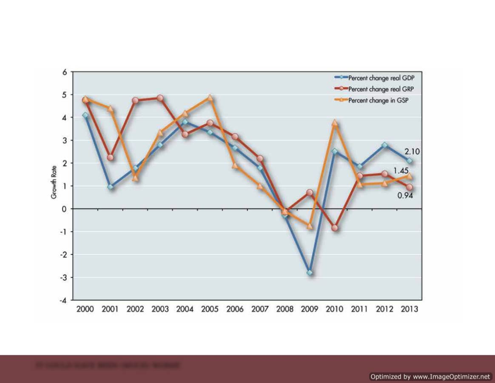
IT COULD HAVE BEEN (MUCH) WORSE
5
GRAPH 1
RATE OF GROWTH OF GDP (U.S.), GSP (VIRGINIA) AND GRP (HAMPTON ROADS)
Sources: Bureau of Economic Analysis and the Old Dominion University Economic Forecasting Project. Data on GDP incorporate latest Bureau of Economic Analysis revisions on July 31, 2013.
THE STATE OF THE REGION | HAMPTON ROADS 2013
6
The Great Recession,
Defense Spending And
Sequestration
THIS ECOnOMIC SLOWDOWn HAS BEEn DEEP AnD LOnG
The Great Recession that began in December 2007 (according to the national
Bureau of Economic Research) has been the deepest and longest economic
slowdown the U.S. has experienced since the Depression of the 1930s. Graph
2 illustrates this by focusing on employment and jobs lost. One can see that
the current economic malaise cost the country more jobs than any other major
post-World War II recession, but also is lasting longer. At the current rate of U.S.
job recovery, it will be September 2014 (80 months from the beginning of the
recession) before we, as a country, will have recovered all of the jobs we lost
between 2008 and 2010.
Why has this recession been so deep and the subsequent
recovery so “job free”? Economists Kenneth Rogoff and
Carmen Reinhardt have explored these topics in “This Time Is
Different.” They point out that economic contractions caused
by crises in a country’s financial system (at the very least, a
contributing factor in the U.S. recession) destroy consumer and
investor confidence and threaten the fundamental stability that
is so critical to hiring and purchasing decisions. Economic actors
pull in their horns and it takes them a long time to change
their behavior. Hence, recessions with a strong financial component take
much longer to iron out than recessions caused by simple cyclical reductions in
demand.
When thinking about our jobless recovery, it is also important to understand
that we live in an era in which accelerating technological change often is
labor saving in nature. Machines and computers are substituted for people.
Caterpillar, for example, now produces about triple the physical output it did 20
years ago, but does so with about half the number of workers. Over the long
run, this is a desirable development. Our collective standard of living increases
when workers and resources can be saved and shifted to other pursuits. In the
short run (and this is at least several years in length), however, workers lose their
jobs and often find it difficult to land new jobs, especially if they are not well
educated, or are anchored to a given location, perhaps because they own a
house that is financially underwater.
In the short run, job recovery also has been retarded by the increasing
globalization of economic activity. Barbers and hairstylists in Portsmouth or
newport news don’t have to worry about competition from barbers and
hairstylists in Shanghai or Jakarta. However, employees at firms such as Stihl
or Smithfield Foods do have to worry about Shanghai and Jakarta because
they produce tradable goods whose prices are set in international markets.
Employees working at such firms must compete head-to-head with workers
around the world. Literally, these workers must prove their cost-effectiveness on a
daily basis, or they will see their jobs disappear.
There are encouraging signs that the terms of international
trade are moving in the favor of the United States. American
workers continue to become more productive; U.S. firms are
benefiting from the lower costs of important inputs such as
natural gas; the cost advantages of competitors such as China
are being eroded by rapidly rising wages there and increasing
transportation costs; and the value of the dollar has declined
over time, making U.S. goods less expensive in the eyes of
foreign consumers. These developments, however, are gradual
in nature and competition in tradable goods continues to make
some U.S. firms reluctant to hire new workers, especially when
uncertainties exist about the cost of these employees because
of health care and other factors.
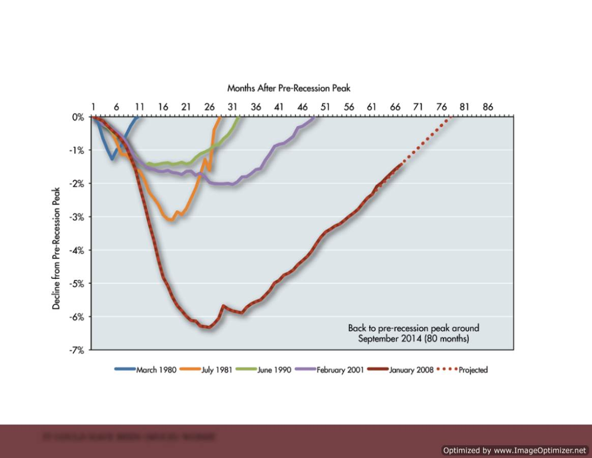
IT COULD HAVE BEEN (MUCH) WORSE
7
GRAPH 2
COMPARING THIS RECESSION TO OTHERS: JOB RECOVERY IN THE U.S.
Sources: Bureau of Labor Statistics and the Old Dominion University Economic Forecasting Project
THE STATE OF THE REGION | HAMPTON ROADS 2013
8
A Closer Look At Job
Markets In Hampton Roads
While 2013 will see very modest job growth in Hampton Roads, in 2012
private-sector employment in our region did grow approximately 10,000 from
the fourth quarter of 2011 to the fourth quarter of 2012, with professional and
business services, health care and social assistance, and manufacturing leading
the way (see Table 2). numerically, our private sector has performed reasonably
well; our employment problem is governmental in nature – federal, state and
local governments all have reduced their employment levels over the past few
years and only began to reverse that trend in 2012.
Graph 3 illustrates that job recovery in Hampton Roads
has trailed both Virginia and the U.S. since 2007. Indeed,
employment in our region still is far below its previous high in
July 2007. Our region lost approximately 40,000 jobs between
2008 and 2010 (see Graph 4) and by the end of 2012, we had
recovered fewer than 10,000. As we soon shall see, faltering defense
spending is the major culprit here. Rather than our regional economy adding
more than 5,200 jobs in 2013, we will only add about 1,200 jobs.
TABLE 2
THE “HOT SECTORS” FOR JOB GROWTH IN HAMPTON ROADS:
FOURTH QUARTER 2011 TO FOURTH QUARTER 2012
Sector
Fourth
Quarter 2011
Fourth
Quarter 2012
Jobs
Gained
Total Nonfarm
Employment
740,400
751,130
10,730
Private Sector
578,600
588,500
9,900
Health Care &
Social Assistance
81,530
84,530
3,000
Manufacturing
52,170
54,970
2,800
Professional &
Business Services
99,400
101,370
1,970
Construction
34,570
36,100
1,530
Financial Activities
36,630
37,970
1,340
Government
Sector
161,800
162,630
830
State Government
22,470
23,170
700
Sources: Bureau of Labor Statistics and the Old Dominion University Economic Forecasting Project
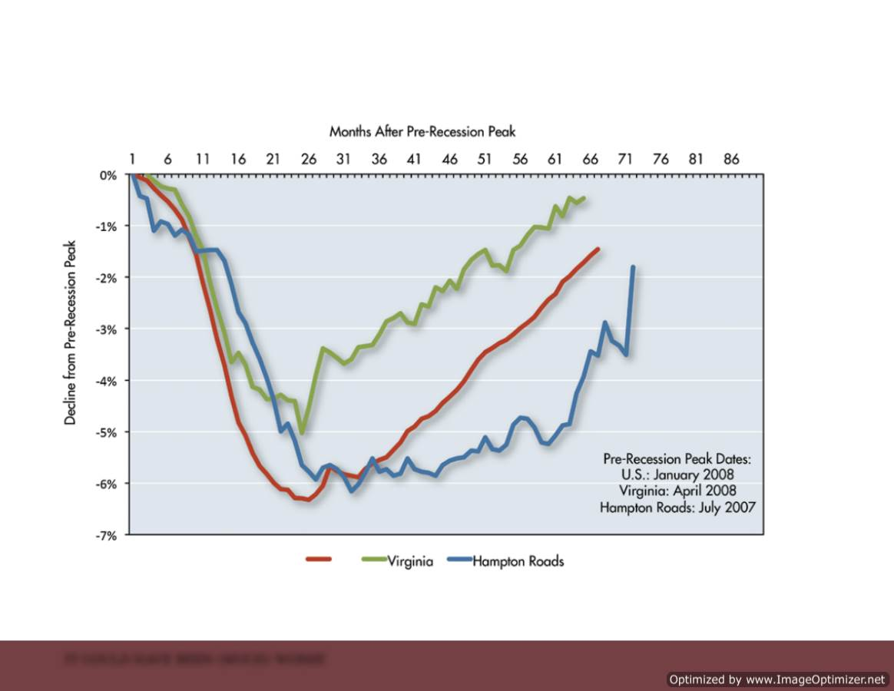
IT COULD HAVE BEEN (MUCH) WORSE
9
GRAPH 3
RECESSION RECOVERY IN THE U.S., VIRGINIA AND HAMPTON ROADS MEASURED BY TOTAL JOBS RESTORED, 2007-2013
Sources: Bureau of Labor Statistics and the Old Dominion University Economic Forecasting Project
U.S.
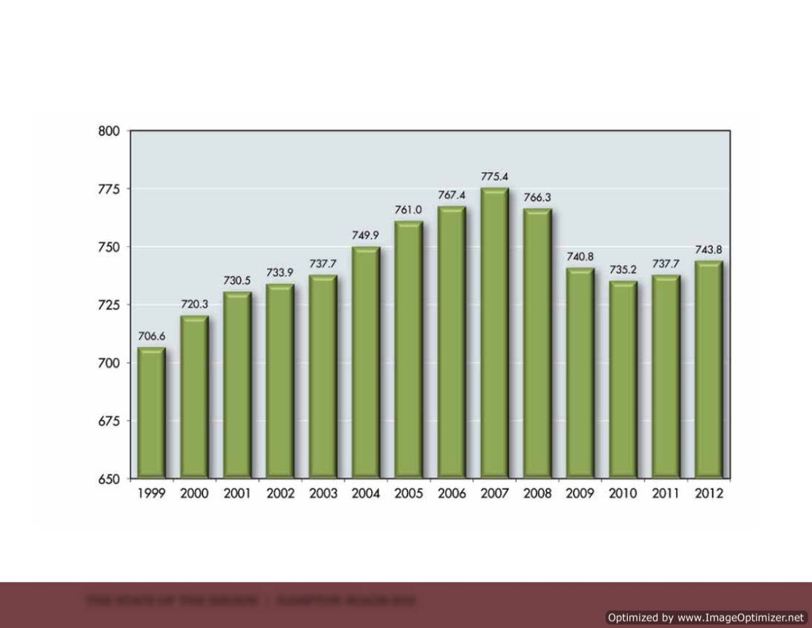
THE STATE OF THE REGION | HAMPTON ROADS 2013
10
GRAPH 4
TOTAL CIVILIAN EMPLOYMENT (JOBS) IN HAMPTON ROADS, 1999-2012
Sources: U.S. Department of Labor CES data and the Old Dominion University Economic Forecasting Project. Data are not seasonally adjusted.

IT COULD HAVE BEEN (MUCH) WORSE
11
Defense Spending
The “Big Three” sectors in the economy of Hampton Roads are
defense spending, the Port of Virginia and hotels/tourism. Of
these three, defense spending easily is the most important and
in 2013 will account for $21.13 billion in direct spending in our
region. This is down slightly from the all-time high of $21.97
billion in 2012 (see Graph 5).
In the first State of the Region report, produced in 2001, we noted that the
Hampton Roads economy was heavily dependent on defense spending and we
needed to diversify our economic base. We’ve said much the same thing every
year since then and now can report (see Graph 6) that over the past two years,
we’ve become slightly less dependent on defense spending than we were in the
past.
Alas, this is occurring mostly for the wrong reasons. In 2013, defense spending
accounted for 44.7 percent of our gross regional product, down from 48.5
percent in 2011. nevertheless, the major reason for this is that defense
spending in Hampton Roads actually declined in 2013. It isn’t that our private
sector has been growing by leaps and bounds (though it has been growing).
Instead, the decreasing relative importance of defense spending primarily
reflects fewer DOD dollars being spent in Hampton Roads. We’ve diversified,
but not under the scenario we’d prefer.
While our region maintains its reputation as a military town,
Table 3 demonstrates the reality that military employment has
declined significantly over the past two decades. We now have
approximately 93,000 active-duty military personnel in Hampton Roads (down
about 35 percent from our high of about 143,000 in 1989) and approximately
35,600 DOD civilian employees (down about 15 percent from our high of
about 42,000 in 1990).
nevertheless, we haven’t felt as much of a negative economic impact from these
reduced employment numbers as one might expect because the compensation
of those people who kept their jobs increased significantly. Table 3 shows how
and why. Between 2001 and 2011,
total military compensation
paid in Hampton Roads rose 67 percent and total federal
government civilian employee compensation rose 71.2 percent,
compared to only a 40.6 percent growth in total private
nonfarm compensation.
In a nutshell, fewer government employees (military and civilian) have been paid
much more for their work in recent years. Table 4 reports average compensation
per active-duty military person during the same time period; one can see it
rose 97.9 percent, compared to 32.7 percent in the private sector. Average
compensation here includes all fringe benefits, including housing allowances,
and reflects the need for the military to attract and retain personnel in the
absence of a military draft.
This helps explain why median household income in Hampton Roads
increased faster than median household income in the United States in the 15
years between 1998 and 2013 (see Graph 7). The primary engine for this
development was the significant increase in compensation received by DOD
personnel in our region. That’s why the share of total compensation received by
private-sector employees in Hampton Roads actually decreased between 2001
and 2011 (as Graph 8 confirms). Put simply, DOD employees fared much better
in terms of compensation than the typical private-sector employee in our region
over that decade.
Table 5 provides wage data (if this were compensation, the reported
percentages in this table would increase by perhaps one-fourth) for specific
sectors of the Hampton Roads economy between the fourth quarter of 2003
and the fourth quarter of 2012. Private-sector wage growth in
Hampton Roads trailed that of DOD employees in every major
employment classification, and in retail trade was strikingly
low (only 15.8 percent over nine years). To provide context, consider
that the CPI-U (Consumer Price Index for all urban consumers) rose 24.6 percent
during the same period. Thus, the wages of many workers in Hampton Roads
did not keep up with inflation.
THE STATE OF THE REGION | HAMPTON ROADS 2013
12
TABLE 3
GROWTH IN EMPLOYMENT AND ToTal COMPENSATION
(WAGES, SALARIES AND FRINGE BENEFITS) FOR
MILITARY, FEDERAL CIVILIAN GOVERNMENT AND PRIVATE
NONFARM SECTORS, HAMPTON ROADS,
1991 TO 2000 AND 2001 TO 2011
Percent Change
1991-2000
Percent Change
2001-2011
Military Employment
-21.3%
-15.6%
Military Compensation
13.2%
67.0%
Federal Civilian Government
Employment
-20.6%
15.9%
Federal Civilian Government
Compensation
13.3%
71.2%
Private nonfarm Employment
21.4%
5.9%
Private nonfarm Compensation
68.0%
40.6%
Sources: U.S. Bureau of Economic Analysis (BEA) and the Old Dominion University Economic Forecasting
Project. *BEA refers to compensation as earnings.
IT COULD HAVE BEEN (MUCH) WORSE
13
TABLE 4
ESTIMATED average COMPENSATION (WAGES, SALARIES
AND FRINGE BENEFITS) FOR SELECTED CATEGORIES IN
HAMPTON ROADS, 2001 AND 2011
Earnings in
2001
Earnings in
2011
Percent
Increase
Military
$56,811
$112,436
97.9%
Federal Civilian
Goverment
Employees
$70,742
$104,504
47.7%
State and Local
Goverment
Employees
$38,730
$52,924
39.5%
Private Sector
$32,988
$43,783
32.7%
Sources: U.S. Bureau of Economic Analysis (BEA) and the Old Dominion University Economic Forecasting
Project. *BEA refers to compensation as earnings.
TABLE 5
AVERAGE PRIVATE-SECTOR WEEKLY WAGES IN SELECTED
INDUSTRIES IN HAMPTON ROADS, 2003 AND 2012
Industry
4th Quarter
2003
4th Quarter
2011
Change
Construction
$709
$938
$229 (32.3%)
Manufacturing
$908
$1,126
$218 (24.0%)
Wholesale Trade
$947
$1,208
$261 (27.6%)
Retail Trade
$405
$469
$64 (15.8%)
Transportation
and Warehousing
$790*
$1,049
$259 (32.8%)
Information
$795*
$1,033
$238 (29.9%)
Finance and
Insurance
$867
$1,190
$323 (37.3%)
Professional and
Business Services
$1,075
$1,442
$367 (34.1%)
Health Care and
Social Assistance
$696*
$896
$200 (28.7%)
Accommodation
and Food
Services
$242
$301
$59 (24.4%)
Sources: U.S. Department of Labor Quarterly Census of Employment and Wages in Private Sector and the
Old Dominion University Economic Forecasting Project. Wage data for the Transportation and Warehousing
and Information industries are second quarter 2005. Data for Health Care and Social Assistance are first
quarter 2007.
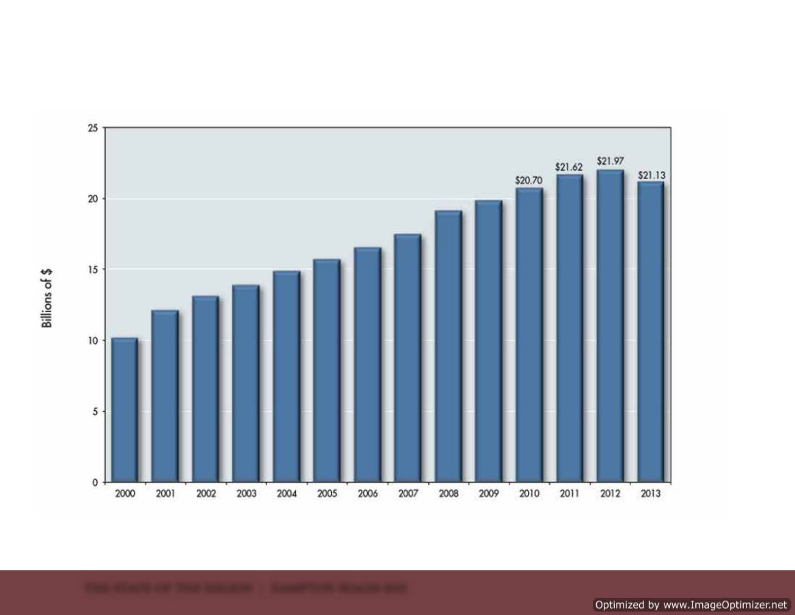
THE STATE OF THE REGION | HAMPTON ROADS 2013
14
GRAPH 5
ESTIMATED DIRECT DOD SPENDING IN HAMPTON ROADS, 2000-2013
Sources: U.S. Department of Defense and the Old Dominion University Economic Forecasting Project (includes federal civilian and military personnel and procurement)
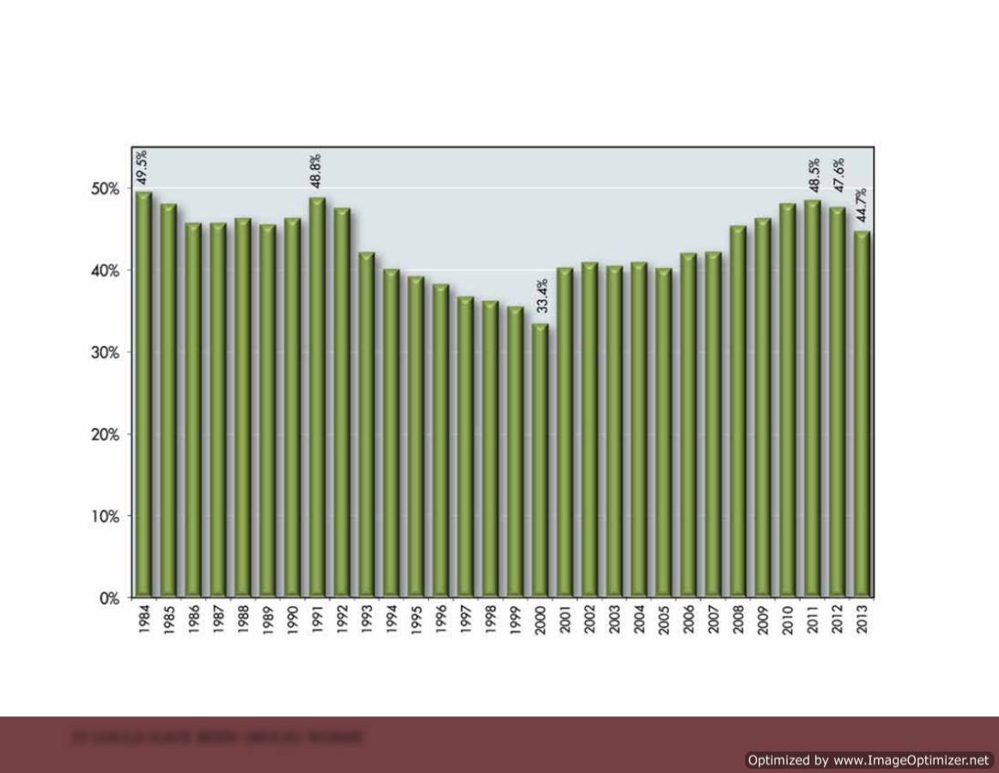
IT COULD HAVE BEEN (MUCH) WORSE
15
GRAPH 6
HAMPTON ROADS GROSS REGIONAL PRODUCT ATTRIBUTABLE TO DOD SPENDING, 1984-2013
Sources: U.S. Department of Defense, U.S. Department of Commerce and the Old Dominion University Economic Forecasting Project
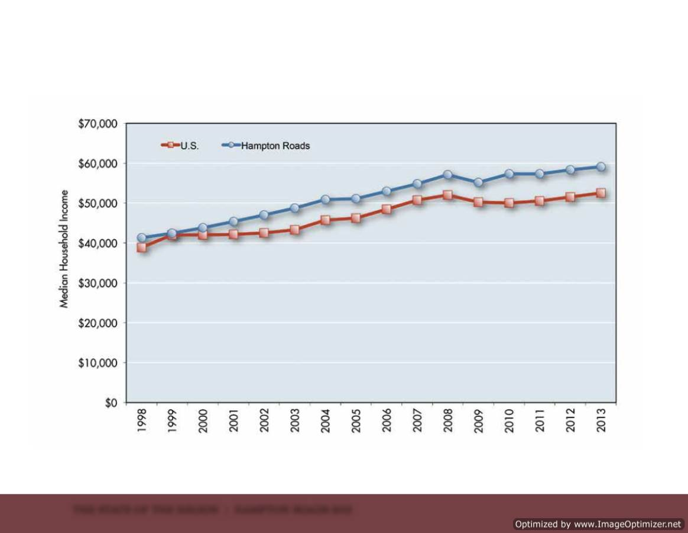
THE STATE OF THE REGION | HAMPTON ROADS 2013
16
GRAPH 7
COMPARISON OF Median HOUSEHOLD INCOME: HAMPTON ROADS AND THE U.S., 1998-2013
Sources: U.S. Census Bureau and the Old Dominion University Economic Forecasting Project
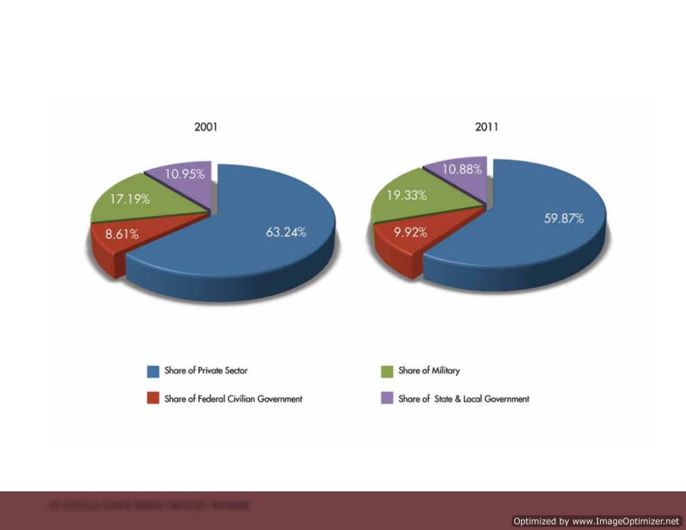
IT COULD HAVE BEEN (MUCH) WORSE
17
GRAPH 8
SHARES OF SELECTED SECTORS MEASURED BY TOTAL COMPENSATION FOR HAMPTON ROADS, 2001 AND 2011
Sources: U.S. Bureau of Economic Analysis (BEA) and the Old Dominion University Economic Forecasting Project. *BEA refers to compensation as earnings.
THE STATE OF THE REGION | HAMPTON ROADS 2013
18
SEQUESTRATIOn AnD THE FUTURE
If one can dodge an economic bullet, then Hampton Roads almost did so with
respect to sequestration. As Table 6 reveals, in January 2013 we
estimated that our gross regional product would grow 1.45
percent and that we would gain 5,207 jobs – if sequestration
could be avoided. We now expect reduced federal
expenditures in Hampton Roads because of sequestration to
shave 0.51 percent from our growth this year (about $460
million in current dollars). This will cause our region to grow at
a paltry 0.94 percent rate and will wipe out most of the jobs
we had expected to gain this year (3,966 out of 5,207).
Still, as was true for A.H. Benjamin’s little mouse, it could well have been worse.
Our original estimate of the impact of sequestration was that it would cost the
region about 17,000 jobs. However, Congress and the executive branch
reduced the impact of sequestration on defense spending and granted many
federal agencies spending flexibility so that they could prioritize their cuts. The
combination of these two adjustments has been quite beneficial to our region.
Even so, there are more cuts on the horizon. Graph 9 contrasts three different
DOD spending regimes. The dark blue line reflects the probable path of the
base line DOD budget between FY 2009 and FY
2012 in the absence of any cuts or reductions.
The red line depicts cuts in base line spending
already agreed to by Congress and the president.
These reductions amount to $483.7 billion and are
spread over approximately nine fiscal years. They
are already in process. Once can see that we will
feel their major impact in the first two fiscal years;
thereafter, base line DOD spending resumes its
predicted increase.
The green line illustrates cuts in DOD spending
because sequestration has been invoked as a result
of the Budget Control Act of 2011. These cuts also
are front-loaded in the first two fiscal years; they
amount to another $482.5 billion through fiscal year 2021. Once the DOD has
adjusted to these cuts in the first two fiscal years, base line DOD spending once
again will increase at predictable rates.
“Base line” is an important notion and conceptually is best understood as
representing the Pentagon’s permanent budget. Thus, the base line budget does
not include DOD spending for special, “temporary” purposes such as Iraq and
Afghanistan.
The bottom line is that defense spending in Hampton Roads
will take a major hit in FY 2013 ($42.5 billion) and a lesser hit
in FY 2014 ($12.5 billion). Thereafter, it is likely to resume its
march upward and thus we may well now be living through
our darkest economic days. However, the situation is hardly
static; circumstances change from week to week because of
new decisions and guidance by Congress and the president.
It would be unwise to assume that we now have a clear road
map for our regional economic future.
In any case, absent international crises that stimulate defense spending,
2013 and 2014 are unlikely to be remembered fondly in economic terms.
It is likely that we will experience slow income growth, an inability to reduce
TABLE 6
SEQUESTRATION: THE BOTTOM LINE IMPACT ON HAMPTON ROADS FOR 2013
January 2013
Estimates
Revisions After
Sequestration
Effect of
Sequestration
Real GRP Growth in 2013
1.45%
0.94%
-0.51%
Job Gains/Losses in 2013
+ 5,207 (0.70%)
1,241 (0.17%)
-3,966
notes: nominal GRP in 2011 is estimated to be $82.36 billion and DOD spending is estimated to be $20.75 billion.
All of the regional reductions and losses are estimates of the Old Dominion University Economic Forecasting Project based upon the overall percentage cuts in
national defense spending estimated by the CBO or CSBA.
IT COULD HAVE BEEN (MUCH) WORSE
19
unemployment rates, stagnant retail sales and only moderate increases in
housing prices.
However, it is not only the absolute level of DOD spending in Hampton Roads
that should be of concern to us, but also the mix of those expenditures. The need
of the DOD to curtail expenditures significantly could lead it to consider “big-
ticket” expenditure cuts.
Here are some of our potential regional vulnerabilities over
this decade:
• Congress invokes another BRAC process designed to close or
downgrade military facilities and programs.
• The number of aircraft carrier groups is permanently reduced
by one or two.
• One aircraft carrier group is transferred to the Pacific (former
Secretary of Defense Leon Panetta did not disclose such a
move, but did specifically indicate a refocusing of naval
assets in the Pacific).
• Naval construction and repair in the region are delayed or
reduced.
• The number of aircraft at Oceana Naval Air Station is
reduced.
• Annual military compensation increases fall significantly as
salary increases become smaller, and personnel are required
to pay for larger proportions of their medical expenses.
• The DOD concludes that major floating assets such as aircraft
carriers no longer are as useful and defensible as they
once were, and this leads the DOD to focus its expenditures
elsewhere.
• Rapid increases in the prices of significant military assets
(ships, airplanes, etc.) continue and simply make it
impossible for the DOD to purchase and maintain as many
as before. This leads to fewer homeported ships, smaller
numbers of airplanes located in Hampton Roads and reduced
construction and repair activity.
• Rising sea levels in Hampton Roads prompt the U.S. Navy to
give much stronger consideration to relocating its assets.
This is a long list and may appear to some to resemble a Chicken Little, “the sky
is falling” inventory of unlikely circumstances. We should hope this is the case; if
it is not, then our region is in for bad economic times.
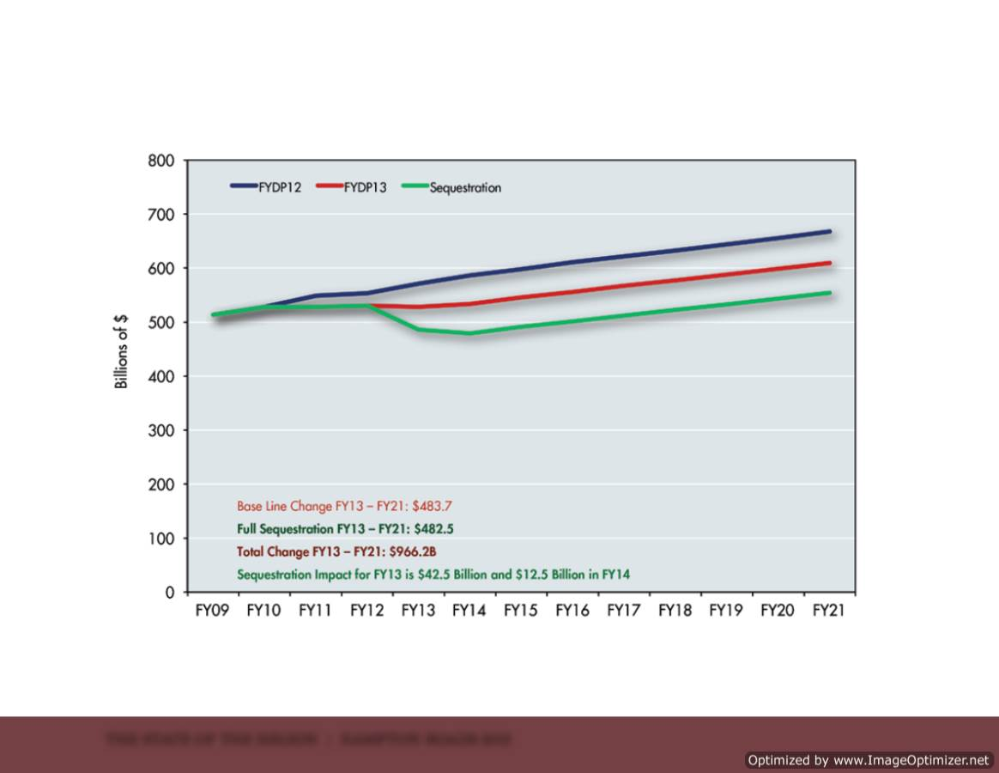
THE STATE OF THE REGION | HAMPTON ROADS 2013
20
GRAPH 9
DEPARTMENT OF DEFENSE BASE BUDGETS, FY 2009 TO FY 2021
Sources: DOD Budget Requests for FY11, FY12 and FY13, the Congressional Budget Office and the Old Dominion University Economic Forecasting Project
IT COULD HAVE BEEN (MUCH) WORSE
21
REDUCTIOnS In DEFEnSE SPEnDInG TRAnSLATE TO SLOWER
ECOnOMIC GROWTH AnD FEWER JOBS
Because defense spending is the primary engine for our region’s economy,
reductions in that spending substantially determine how rapidly or slowly our
economy grows. We’ve already seen that Hampton Roads lost
jobs between 2007 and 2012. Most other comparable regions
of the country lost jobs also, but proportionately not as many
as we did. Table 7 reveals that between 2003 and 2012, job growth in
Hampton Roads trailed five comparable metropolitan areas in the Southeast, as
well as Virginia, north Carolina and the United States.
Flaccid job growth did not mean unusually high unemployment. For many years,
unemployment rates in our region have been lower than those in the U.S. This
has continued to be true in this century. One can see in Graph 10 that our
average rate of unemployment in 2013 will be about 6 percent, well below
the U.S. average of 7.6 percent. In addition, not as many people in our region
filed for unemployment compensation, suggesting an improved labor market (see
Graph 11).
Nonetheless, how can our regional rate of unemployment
fall (as it has every year since 2010) when our regional
job growth has been so miserable? There are two primary
reasons. First, we have experienced a net out-migration
of adults from Hampton Roads. The DOD has located personnel
elsewhere and private-sector job seekers have left the region in search of better
employment opportunities.
Second, as has been true nationally, labor force participation
rates have fallen in Hampton Roads (see Graph 12 for national
data). This means that many adults have dropped out of the
labor force and no longer are actively seeking a job. An aging
population accounts for a small portion of this decline, as does the rising
proportion of people who are pursuing postsecondary education. Further, there
has been a significant increase in the number of adults who have claimed
disabilities that prevent them from working. But, here’s the payoff – if you aren’t
looking for work, then you can’t be counted as unemployed. The upshot is that
our low regional rate of unemployment is not quite so shining an achievement as
it first seems. For a variety of reasons – not always good – some people simply
have stopped looking for work.
TABLE 7
COMPARING CIVILIAN JOB GAINS AND LOSSES IN HAMPTON
ROADS TO OTHER REGIONS AND THE U.S., 2003-2010
Area
2003-07
2007-12
2003-2012
Loss and
Percent of Total
Hampton Roads
37.7
-31.6
6.1
(.83%)
Charlotte*
96.1
-7.9
82.2
(11.57%)
Durham
29.7
-2.6
27.1
(10.59%)
Jacksonville
70.7
-36.2
34.5
(6.15%)
Raleigh
84.5
2.0
86.5
(19.87%)
Richmond
45.4
-9.9
35.59
(6.04%)
U.S.
7,545.0
-3,906
3,639
(2.80%)
Virginia
269.5
-41.5
228.0
(6.52%)
north Carolina
354.4
-153.2
201.2
(5.31%)
Sources: U.S. Department of Labor CES seasonally unadjusted data and the Old Dominion University Economic
Forecasting Project. *Peak employment in Charlotte, Durham, Raleigh and Virginia occurred in 2008. Changes
for these areas are shown for 2003 through 2008 and 2008 through 2012.
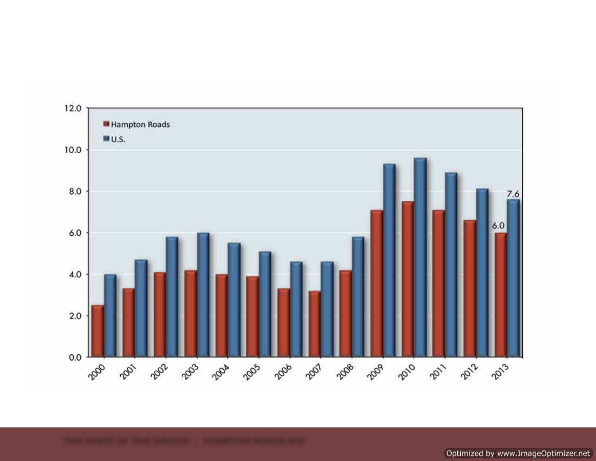
THE STATE OF THE REGION | HAMPTON ROADS 2013
22
GRAPH 10
HAMPTON ROADS AND U.S. UNEMPLOYMENT RATES, 2000-2013
Sources: U.S. Department of Labor and the Old Dominion University Economic Forecasting Project. Data are not seasonally adjusted.
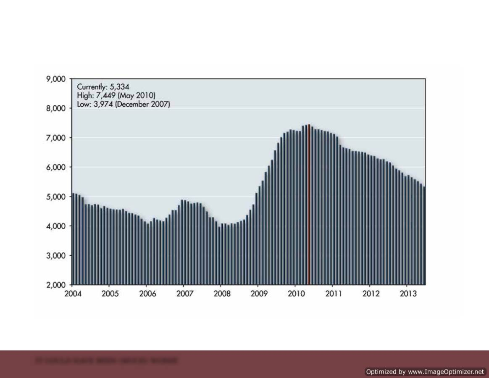
IT COULD HAVE BEEN (MUCH) WORSE
23
GRAPH 11
MONTHLY INITIAL UNEMPLOYMENT CLAIMS FOR HAMPTON ROADS, JANUARY 2004 THROUGH MAY 2013
(12-MONTH MOVING AVERAGE)
Sources: Virginia Employment Commission and the Old Dominion University Forecasting Project
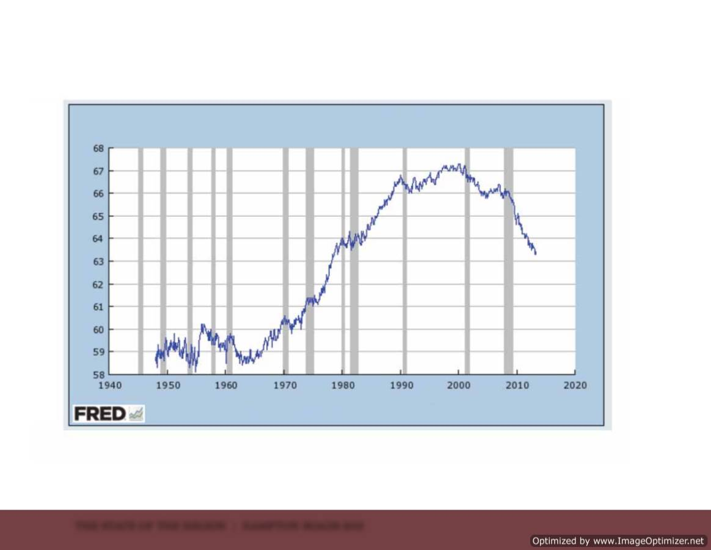
THE STATE OF THE REGION | HAMPTON ROADS 2013
24
GRAPH 12
FALLING CIVILIAN LABOR FORCE PARTICIPATION RATE, U.S. ADULTS, 1973-2013
Source: FRED, Federal Reserve Bank of St. Louis, www.stlouisfed.org, accessed June 19, 2013
Percentage of Adults Seeking a Job or Employed
Shaded areas indicate U.S. recessions.
2013 research.stlouisfed.org
Civilian Labor Force Participation Rate (CIVPART)
Source: U.S. Department of Labor: Bureau of Labor Statistics
(Percent)

IT COULD HAVE BEEN (MUCH) WORSE
25
The Port Of Virginia
2012 was a year of change and dramatic uncertainty for the Port of Virginia.
Falling market shares and tonnage between 2008 and 2011 (see Graph 13)
were among the reasons cited by Gov. Bob McDonnell when he sacked all
but one member of the board of the Virginia Port Authority. APM Maersk then
submitted what was termed an unsolicited bid to take over the management of
the Port; this soon resulted in two other credible competitive proposals along
with the possibility that the existing management arrangement with Virginia
International Terminals would continue. Most of the senior leadership of the Port
of Virginia exited.
Many people and businesses connected to the Port made it known that they
were opposed to privatizing its management, citing, inter alia, a fear that
a private manager would not serve them as well and might whipsaw them
against other ports with respect to rates and services. Several legislators filed
proposed legislation that would have slowed or prevented Virginia’s secretary of
transportation (who was tasked by the governor with the responsibility to assess
the privatization proposals and make a recommendation) from moving ahead
on privatization.
The three privatization applicants (though one dropped out along the way)
pointed out that nearly all of the major ports in the United States have some
or all of their operations managed by private operators. They pledged
transparency, guarantees against whipsawing and increased cargo activity.
Further, they promised the Commonwealth payments that variously were
evaluated as having current values in the range of $3 billion to $4 billion
spread over 50 to 60 years. This was more than enough to get the attention of
those seeking funds that might deal with transportation and toll-related issues in
the region.
The newly appointed membership of the board of the Port Authority ultimately
decided not to accept any of the privatization proposals, but simultaneously
moved to reorganize the structure and operation of the Port of Virginia to
eliminate duplication, save money and increase market share.
In any case, activity at the Port rebounded magnificently in
2012 and continued to increase in 2013, though at more modest
rates. Twenty-foot equivalent container units (TEUs) increased
by 9.8 percent in 2012 and we forecast they will increase 5.1
percent in 2013 (see Graph 14). Further, as Graph 15 discloses,
after several years of losing market share along the East Coast,
the Port of Virginia reversed this trend in 2012 and 2013, but not
yet sufficiently to restore its share to its recent peak level in 2007.
An additional positive development is the increased use of rail connections to
take cargo from the Port to customers. As a rule of thumb, cargo that is destined
for customers located within 200 to 250 miles of an East Coast port is delivered
by truck. Such “close in” cargo often is referred to as “captive” because it is
unlikely any competitor port can take it away because hauling costs are highly
sensitive to increasing distance. Beyond the 200- to 250-mile radius from
the port, however, cargo is “discretionary” and a variety of ports potentially
compete for that traffic. To the south, Savannah and Charleston are major
competitors; to the north and midwest, Baltimore and new York/new Jersey
(particularly the latter) provide the major competition, and customers located in
sites such as Chicago potentially can take bids from four or five different ports.
Hence, it is very good news that the share of containers
moving in and out of the Port of Virginia via rail connections
has been increasing and now accounts for almost one-third of
all of the containers exiting Hampton Roads (see Graph 16).
This means that the Port of Virginia is winning competitive
battles over which ports along the East Coast will handle
discretionary cargo.
Realistically, the recent success of the Port of Virginia reflects the conjunction
of many different factors, among them the completion of norfolk Southern’s
Heartland Rail Corridor to the Midwest, which permits the double stacking
of TEUs; a new streamlined service to Greensboro, n.C.; CSX’s on-dock rail
services at the APM Terminal in Portsmouth; the Port’s ability to handle deep-draft
ships; more first-in, first-out service for ships coming and going; local efficiencies;
and improved management. The payoff to Hampton Roads will be
more jobs and higher incomes.
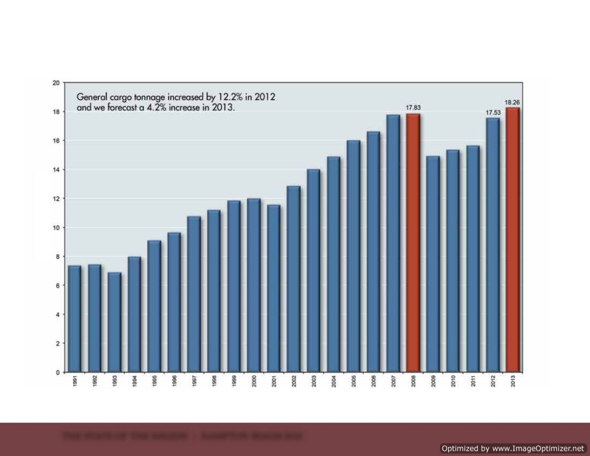
THE STATE OF THE REGION | HAMPTON ROADS 2013
26
GRAPH 13
GENERAL CARGO TONNAGE AT THE PORT OF HAMPTON ROADS, 1991-2013
Sources: Virginia Port Authority and the Old Dominion University Economic Forecasting Project
Millions of T
ons
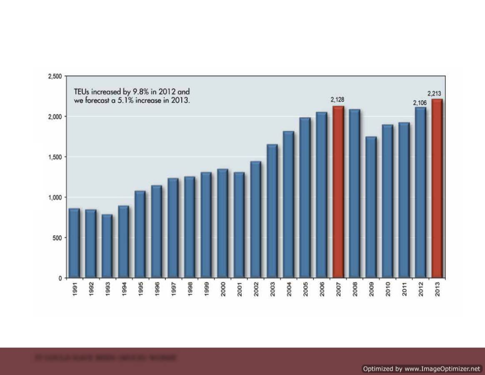
IT COULD HAVE BEEN (MUCH) WORSE
27
GRAPH 14
TWENTY-FOOT EQUIVALENT CONTAINER UNITS (TEU
s
) IN THE PORT OF HAMPTON ROADS, 1991 TO 2013
Sources: Virginia Port Authority and the Old Dominion University Economic Forecasting Project
Thousands
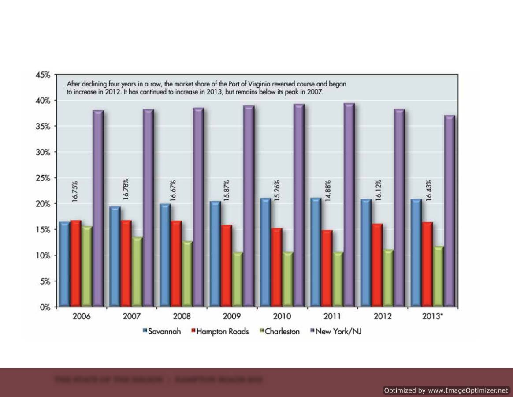
THE STATE OF THE REGION | HAMPTON ROADS 2013
28
GRAPH 15
SHARES OF TOTAL LOADED TEU CONTAINERS FOR SELECTED PORTS ON THE EAST COAST, 2006-2013*
Sources: American Association of Port Authorities and the Old Dominion University Economic Forecasting Project. Market shares exclude TEUs for Philadelphia, Miami, Palm Beach and Port Everglades.
*Data for 2013 are through May.
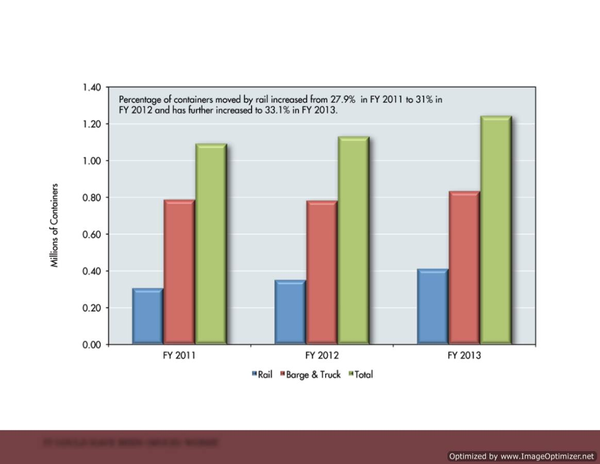
IT COULD HAVE BEEN (MUCH) WORSE
29
GRAPH 16
MOVEMENT OF CONTAINERS AT THE PORT OF HAMPTON ROADS BY TYPE OF TRANSPORTATION, 2011-2013
Sources: Virginia Port Authority and the Old Dominion University Economic Forecasting Project
THE STATE OF THE REGION | HAMPTON ROADS 2013
30
Tourism And Hotels
The recession hit the region’s tourism industry so hard and
collectively that the industry has yet to recover. Graph 17
reveals that hotel revenue in Hampton Roads still is well below
its 2007 record high. The coin of the realm, however, in measuring the
efficiency and success of hotels and motels is REVPAR, revenue received per
available room. One can see in Table 8 that REVPAR in Hampton Roads for
2012 still was 9.96 percent below the 2007 level, with only Virginia Beach
counteracting the negative trend within the region.
If Virginia Beach (the region’s largest tourist destination) is enjoying increased
REVPAR, this implies that the other cities are experiencing declining REVPAR.
In the case of newport news/Hampton, REVPAR was down 13.59 percent
between 2007 and 2012, while norfolk/Portsmouth’s REVPAR was down
10.97 percent. The big losers, however, were Chesapeake/Suffolk (-18.79
percent) and Williamsburg (-22.18 percent). Graph 18 discloses that
Williamsburg’s share of regional hotel revenues fell dramatically from 30.6
percent in 1999 to only 17.8 percent in 2012.
While REVPAR in both Chesapeake/Suffolk and Williamsburg has been
suffering, their situations are different. One can see in Graph 19
that Chesapeake/Suffolk’s problem is that it overbuilt hotel
capacity, especially between 2008 and 2010. More people were
staying in Chesapeake/Suffolk’s hotels during this time (primarily business
travelers), but not nearly enough to soak up the huge increases in rooms
available. Thus, REVPAR fell. This situation is remediable, however. The number
of available rooms held almost constant between 2011 and 2012, and
continued increases in the use of these rooms gradually will eliminate the excess
capacity.
Williamsburg (effectively, the Historic Triangle, which
includes Jamestown and Yorktown) confronts very different
circumstances. Room capacity has not increased in recent years
and actually is about 8 percent less than it was in 2000. It is
apparent from Graph 20 that Historic Triangle room rentals
have declined substantially since 2000 (though they have been
roughly constant since 2009). The Historic Triangle appears to
face a long-term challenge attracting tourists, especially younger
tourists who, as the 1960s pop song opines, perhaps “don’t know much about
history” – or care much – and may have short, smartphone-induced attention
spans. It may be easier for Virginia Beach to attract repeat visitors to its
oceanfront amenities than for the Historic Triangle to convince tourists to return
there. It will suffice to say that the Historic Triangle has its work cut out in terms of
marketing its wonderful attractions in a fashion that will attract additional visitors.
It is a cultural and historical gem, as well as a major employer, and it is in the
best interests of Hampton Roads that it achieve financial success.
TABLE 8
REVPAR IN SELECTED MARKETS, 2007 AND 2012
2007
2012
Percentage
Change
Virginia
$61.95
$57.12
-7.80%
U.S.
$65.52
$65.17
-0.60%
Hampton Roads
$52.90
$47.63
-9.96%
Myrtle Beach
$53.92
$51.44
-4.91%
Ocean City
$71.12
$68.80
- 3.91%
Coastal Carolina
$55.84
$54.09
-1.32%
Virginia Beach
$64.75
$66.10
+2.12%
norfolk/Portsmouth
$54.05
$48.12
-10.97%
newport news/
Hampton
$41.49
$35.85
-13.59%
Chesapeake/Suffolk
$52.90
$42.96
-18.79%
Williamsburg
$47.48
$36.95
-22.18%
Sources: Smith Travel Research Trend Reports, Jan. 18, 2013, and the Old Dominion University Economic
Forecasting Project
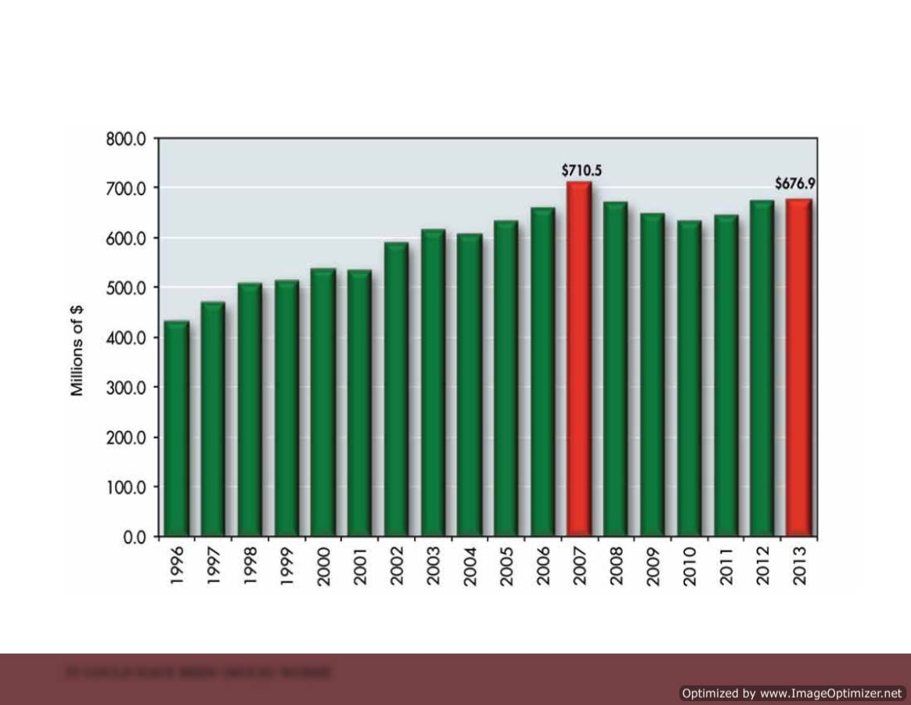
IT COULD HAVE BEEN (MUCH) WORSE
31
GRAPH 17
HOTEL REVENUE IN HAMPTON ROADS, 1996-2013
Sources: Smith Travel Research, Dec. 27, 2007, and April 25, 2013, and the Old Dominion University Economic Forecasting Project
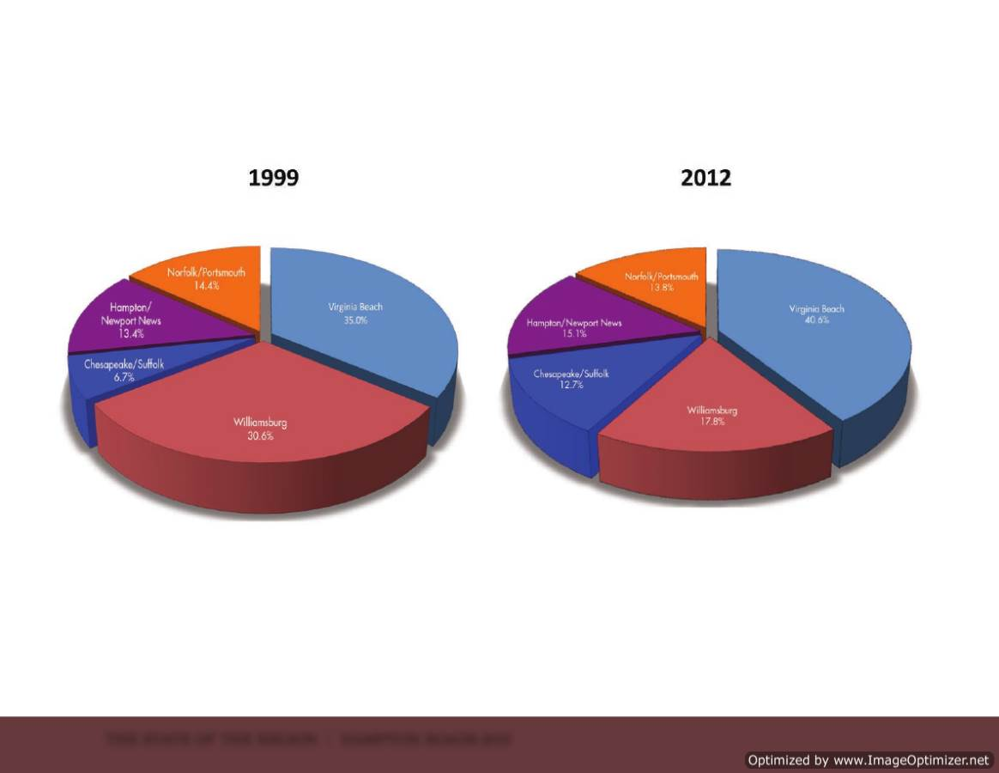
THE STATE OF THE REGION | HAMPTON ROADS 2013
32
GRAPH 18
ESTIMATED CITY HOTEL MARKET SHARES IN HAMPTON ROADS AS INDICATED BY INDUSTRY REVENUES, 1999 AND 2012
Sources: Smith Travel Research Trend Reports Dec. 27, 2007, Dec. 23, 2009, and, Jan. 18, 2013, and the Old Dominion University Economic Forecasting Project
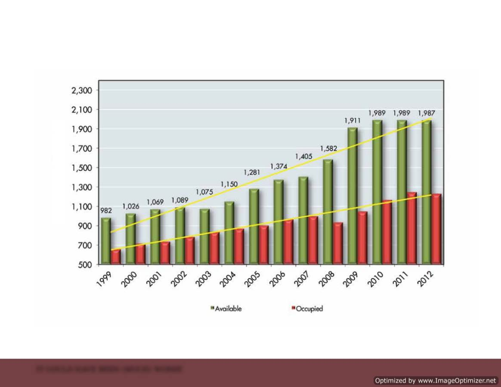
IT COULD HAVE BEEN (MUCH) WORSE
33
GRAPH 19
HOTEL ROOM NIGHTS IN CHESAPEAKE/SUFFOLK MARKET, 1999-2012
Sources: Smith Travel Research, Dec. 23, 2009, Jan.18, 2013, and the Old Dominion University Economic Forecasting Project
In Thousands
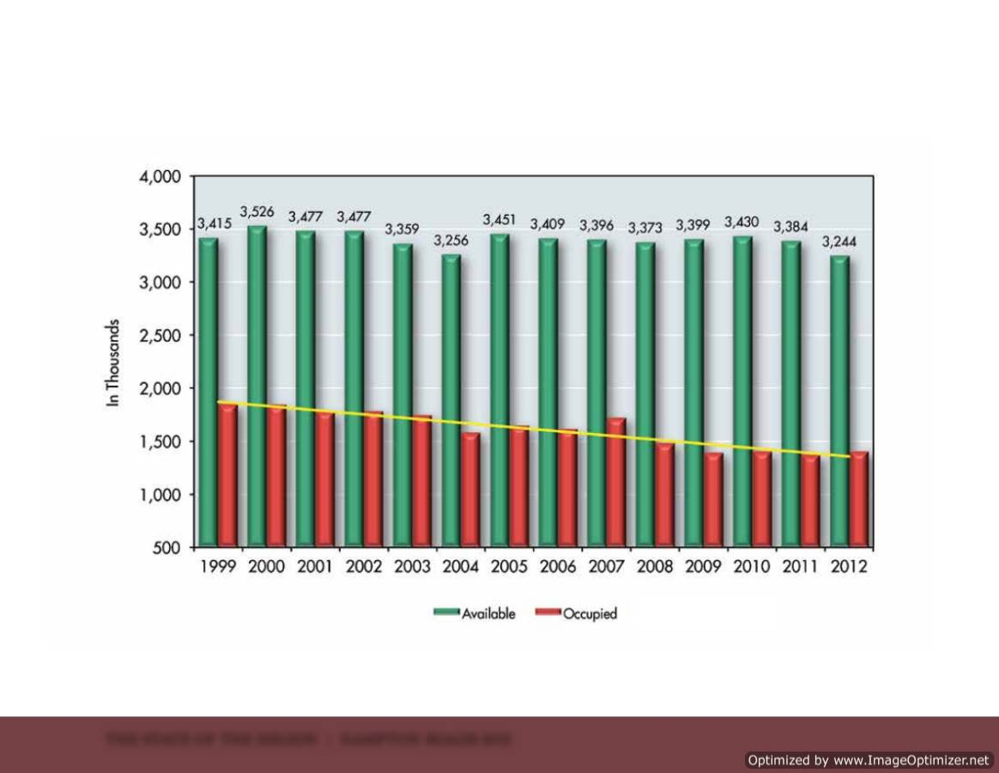
THE STATE OF THE REGION | HAMPTON ROADS 2013
34
GRAPH 20
HOTEL ROOM NIGHTS IN THE HISTORIC TRIANGLE (WILLIAMSBURG) MARKET, 1999-2012
Sources: Smith Travel Research, Dec. 27, 2007, Jan. 18, 2013, and the Old Dominion University Economic Forecasting Project. Williamsburg market includes city of Williamsburg, James City County, York County and Gloucester County.
IT COULD HAVE BEEN (MUCH) WORSE
35
Summing It Up
Yes, 2013 was not a great year, but it really could have been worse. We
were able to vault over federal budget sequestration and achieve modestly
respectable private-sector economic growth. Bright spots included the Port of
Virginia and tourism in Virginia Beach. And, as we will see in the next chapter,
the regional housing market has turned the corner and despite still hefty levels of
distressed, bank-owned homes and homes being auctioned, is healthier than it
has been for half a decade.
Our Housing Market
Turns the Corner
THE STATE OF THE REGION | HAMPTON ROADS 2013
38
our HousInG MarKet turns tHe Corner
A
fter a very difficult half decade characterized by falling sales and prices, a surge in foreclosures and many underwater homeowners, it is now fair to say
that residential housing markets in Hampton Roads are on the mend. While some significant economic challenges remain, both sales and prices are up,
foreclosures are down and the proportion of underwater homeowners who owe more on their home than it is worth has declined.
Still, it was a difficult several years. As Graph 1 reports, the median (50th
percentile) selling price of an existing home in Hampton Roads fell 24 percent
between the third quarter of 2007 (our all-time peak) and the first quarter of
2013. True, this was less than the disastrous price reductions that occurred in
locations such as California, Florida and nevada. Even so, it was still slightly
larger than the national median (22 percent from its peak in the third quarter of
2005 and the first quarter of 2013).
Table 1 illustrates the source of our housing market grief. The median sales price
of existing homes in Hampton Roads fell every year between 2008 and 2011.
This followed a 90 percent increase that occurred between 2002 and 2007,
suggesting that a housing price bubble divorced from economic fundamentals
had developed in our region. Finally, in 2012, median sales prices for existing
homes began to increase, albeit by only 2.78 percent. We are on track for a
5.5 percent increase in 2013.
TABLE 1
MEDIAN SALE PRICE OF ExISTING RESIDENTIAL HOMES IN
HAMPTON ROADS: 2001-2013*
Year
Median Price
Annual Percent Change
2001
$109,000
9.1%
2002
$116,900
7.3%
2003
$130,000
11.2%
2004
$156,500
20.4%
2005
$192,000
22.7%
2006
$214,900
11.9%
2007
$223,000
3.8%
2008
$219,000
-1.8%
2009
$207,000
-5.5%
2010
$203,900
-1.5%
2011
$180,000
-11.7%
2012
$185,000
+2.78%
2013*
$182,000
+2.25%
Sources: Real Estate Information network and the Old Dominion University Economic Forecasting Project
*Data are from YTD May 2013 and YTD May 2012.
90% Increase
between 2002
and 2007
19% Decrease
between 2007
and 2011
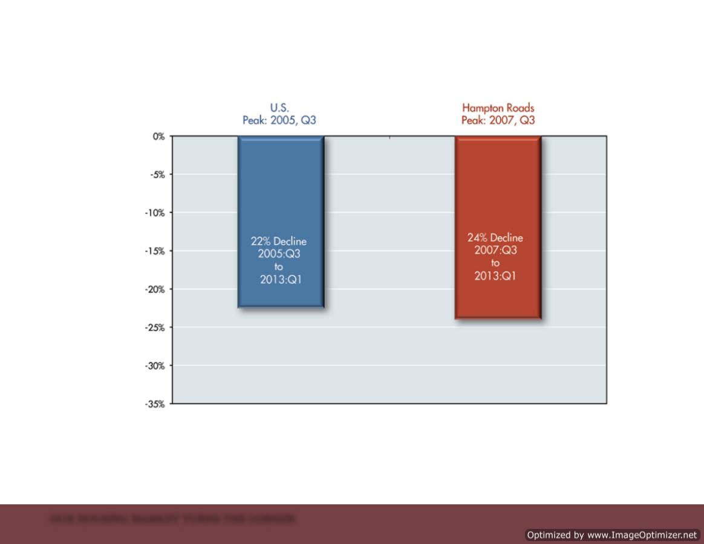
OUR HOUSING MARKET TURNS THE CORNER
39
GRAPH 1
CUMULATIVE DECLINE IN MEDIAN SINGLE-FAMILY HOUSE PRICES FROM PEAK PRICES FOR ExISTING HOMES
(ExCLUDING CONDOMINIUMS), IN HAMPTON ROADS
Sources: national Association of Realtors, Real Estate Information network and the Old Dominion University Economic Forecasting Project
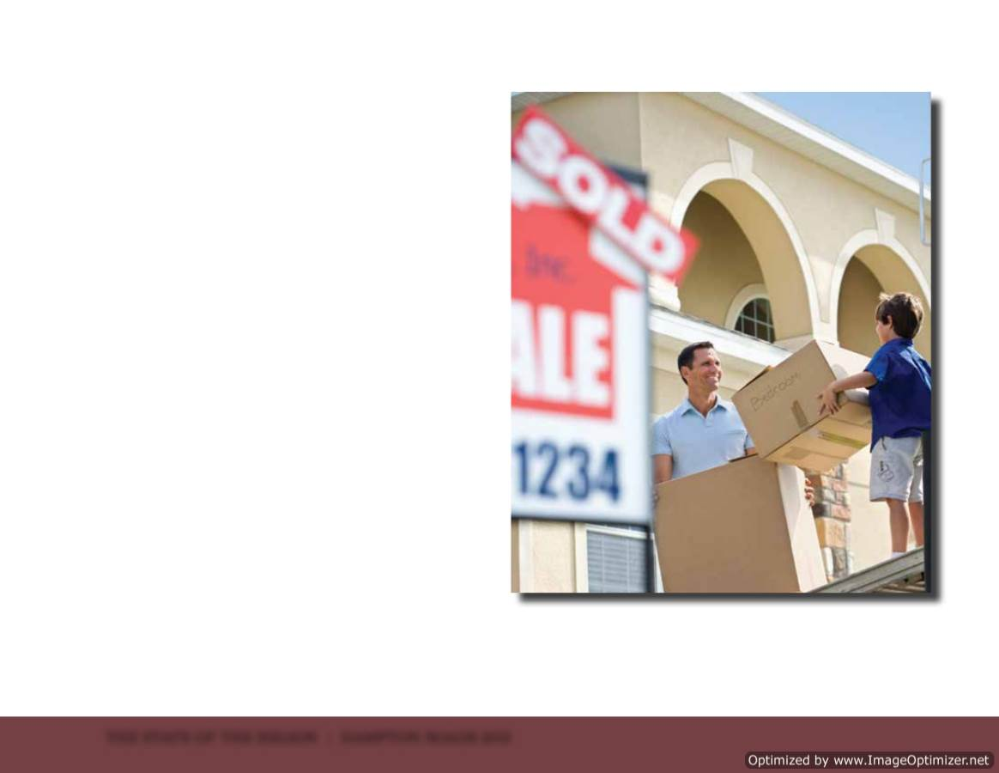
THE STATE OF THE REGION | HAMPTON ROADS 2013
40
Housing Inventory And Time On Market
For some time, Hampton Roads has experienced what one real estate agent
refers to as “a substantial overhang of unsold homes” that has stifled the
market. Fortunately, this appears to be changing. One can see in Graph 2 that
our estimates of unsold existing residential homes on the market underline a
significant decline in unsold housing inventory. We estimate that 9,375 unsold
existing residential homes are on the market now in Hampton Roads, down
from a peak of 13,333 in 2010. It’s worth noting, however, that these numbers
fluctuate throughout the year and are the highest during the summer.
Further good news is evident in Graph 3, which charts both the number of
existing residential homes sold in Hampton Roads since the turn of the century
and the average number of days those homes were on the market prior to their
sale. Sales are trending modestly upward and there is a modest downward
trend in the average number of days each home is on the market until sale.
How much housing inventory is available in Hampton Roads today and ready
for sale? A good way to obtain a feel for this is to compute the average number
of months of supply of existing homes. This tells how long it would take to
eliminate the existing inventory of unsold homes at current sales rates. Graph 4
discloses that we had an average of 5.56 months of supply of unsold existing
homes for sale between 1996 and 2013. Currently, we have 6.48 months of
unsold homes for sale, but this is down from the previous high of 10.24 months
in november 2010.
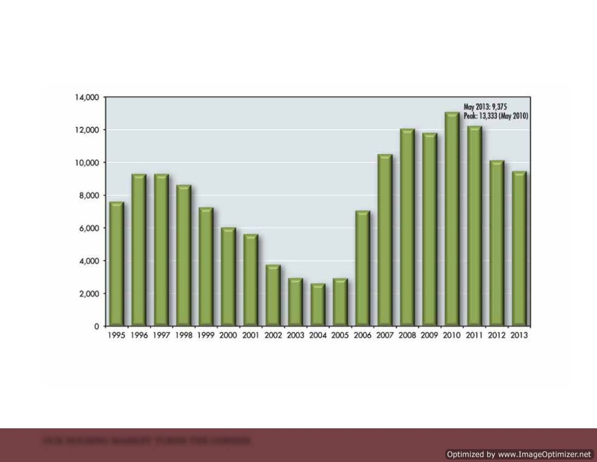
OUR HOUSING MARKET TURNS THE CORNER
41
GRAPH 2
ESTIMATED INVENTORY OF ExISTING RESIDENTIAL HOMES AS MEASURED BY ACTIVE LISTINGS ON MAY 31 OF EACH YEAR
Sources: Real Estate Information network and the Old Dominion University Economic Forecasting Project
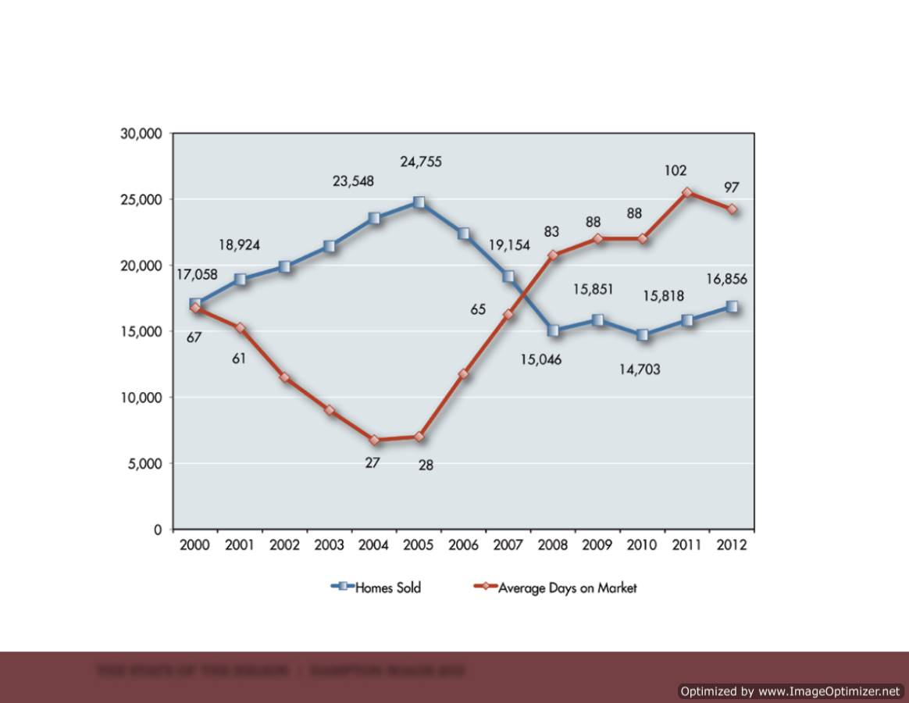
THE STATE OF THE REGION | HAMPTON ROADS 2013
42
GRAPH 3
ExISTING RESIDENTIAL HOMES SOLD AND AVERAGE DAYS ON THE MARKET IN HAMPTON ROADS, 2000-2012
Sources: Real Estate Information network and the Old Dominion University Economic Forecasting Project
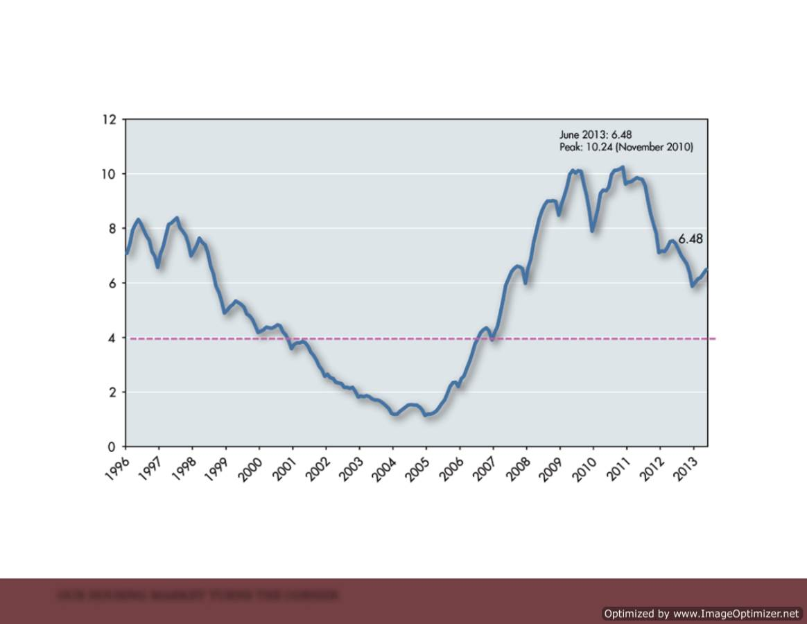
OUR HOUSING MARKET TURNS THE CORNER
43
GRAPH 4
ESTIMATED MONTHS OF SUPPLY OF ExISTING HOMES IN HAMPTON ROADS, JANUARY 1996 – MAY 2013
Sources: Real Estate Information network and the Old Dominion University Economic Forecasting Project (based on average number of sales in preceding 12 months)
THE STATE OF THE REGION | HAMPTON ROADS 2013
44
Distressed Homes And
Foreclosures
Distressed home sales are those that involve: (1) the sale of REO (real estate
owned) homes that have been acquired by banks, often via foreclosure or
abandonment; or (2) a “short sale” of a home for which an owner no longer
has the ability or desire to service the mortgage, and the home then is sold at
best possible price. Distressed sales push down prices for several reasons. The
owners of distressed homes are anxious to get rid of them and buyers know this.
But it’s also true that some distressed homes deteriorate in value because of lack
of maintenance, or outright misuse.
Financial institutions understand that short sales of homes still occupied by
individuals no longer able to pay their mortgage tend to diminish the probability
of extensive property damage, at least when compared to foreclosures that have
been preceded by an eviction. Consequently,
short sales usually result in higher prices being
paid for the homes in question. Knowledge
of this has pushed many financial institutions
to prefer short sales to sales preceded by
foreclosures.
The depressing effect of distressed home
sales on home prices can be seen in Table 2,
which supplies home sales price information
for Hampton Roads for 2006 through 2013,
and then compares the sales prices of non-
distressed homes with those that were sold as
a distressed sale. In 2011, for example, short
sales of distressed homes resulted in average
sales prices that were 90.1 percent of the
average non-distressed home sales price, while
bank-owned REO average prices (usually the
result of a foreclosure) were only 57.3 percent
of the average non-distressed sales price.
The market dynamics associated with distressed housing sales are simple:
Why buy a “regular,” non-distressed home at full price if you can purchase a
distressed home at a huge discount? Thus, a decline in the volume of distressed
sales is a sign of a stabilizing home market. Happily, this is now occurring in
Hampton Roads. In March 2011, distressed sales peaked in number at 618,
but fell to 401 by June 2013 (see Graph 5). Further, as Graph 6 illustrates, the
number of active listings of distressed homes has fallen noticeably as well.
What does the future hold? An important source of distressed homes inventory
is the residential housing foreclosures that result in the departure of the owner.
Graph 7 reveals that the number of foreclosures in Hampton Roads is down
significantly from its 2010 high, although the 2012 number (8,267) is higher
than the 2011 number (6,988). The increase in 2012 reflects a rather curious
reality that actually depends upon the increasing health of our housing market.
Financial institutions are not in the housing business and hence are reluctant
to foreclose on homes that they believe will be difficult or impossible for them
TABLE 2
AVERAGE PRICE OF ExISTING SHORT SALE, REOS AND NON-DISTRESSED RESIDENTIAL HOMES
SOLD IN HAMPTON ROADS, JANUARY 2006 - MAY 2013
Year
Non-distressed
Sales
Short
Sales
Short Sale Price
Percentage of
Non-distressed Price
Bank-owned
REO Sales
REO Price
Percentage of
Non-distressed
Price
2006
$250,254
$241,666
96.7
$120,817
48.3
2007
$261,723
$237,897
91.3
$163,421
62.4
2008
$255,852
$239,110
95.0
$184,462
72.1
2009
$243,902
$239,913
98.4
$164,229
67.3
2010
$251,572
$231,211
91.9
$151,612
60.3
2011
$236,358
$212,967
90.1
$135,304
57.3
2012
$237,215
$187,527
79.1
$134,535
56.7
2013
$241,025
$180,249
74.8
$131,285
54.5
Sources: Real Estate Information network and the Old Dominion University Economic Forecasting Project. Distressed homes are bank owned or short sale homes.
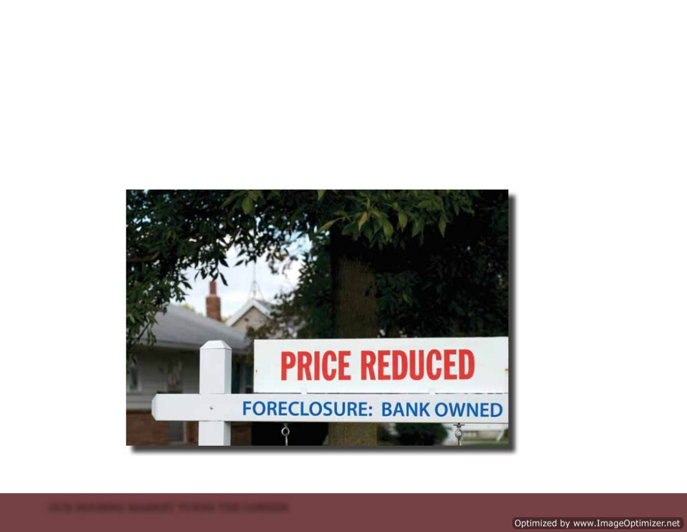
OUR HOUSING MARKET TURNS THE CORNER
45
to sell. The improving health of our housing market has provided financial
institutions with the confidence that they literally will be able to get rid of
nonperforming mortgages on homes upon which they foreclose.
nevertheless, sales of distressed homes still constitute a rather large proportion
of total home sales in Hampton Roads. Graph 8 demonstrates this; in June
2013, more than 22 percent of all residential home sales in our region still were
classified as distressed. This is down from the December 2012 peak of 29.12
percent, but is evidence that, even though our housing market is healing, it has
not yet recovered.
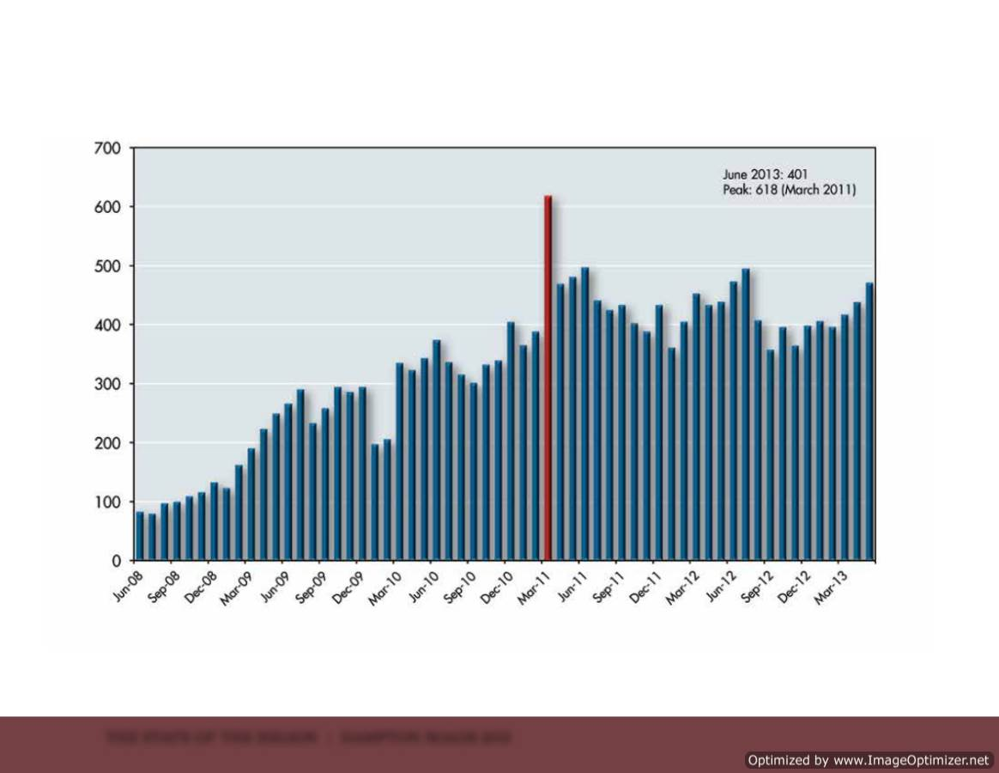
THE STATE OF THE REGION | HAMPTON ROADS 2013
46
GRAPH 5
NUMBER OF DISTRESSED HOMES SOLD (REO AND SHORT SALES) IN HAMPTON ROADS, JUNE 2008 – JUNE 2013
Sources: Real Estate Information network and the Old Dominion University Economic Forecasting Project
Jun-13
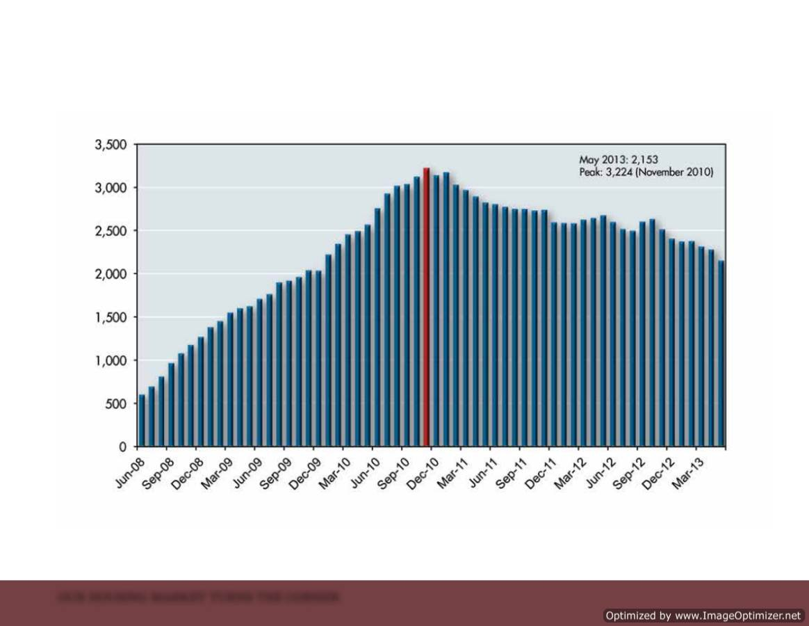
OUR HOUSING MARKET TURNS THE CORNER
47
GRAPH 6
NUMBER OF ACTIVE LISTING OF DISTRESSED HOMES (REO AND SHORT SALES) IN HAMPTON ROADS, JUNE 2008 – MAY 2013
Sources: Real Estate Information network and the Old Dominion University Economic Forecasting Project
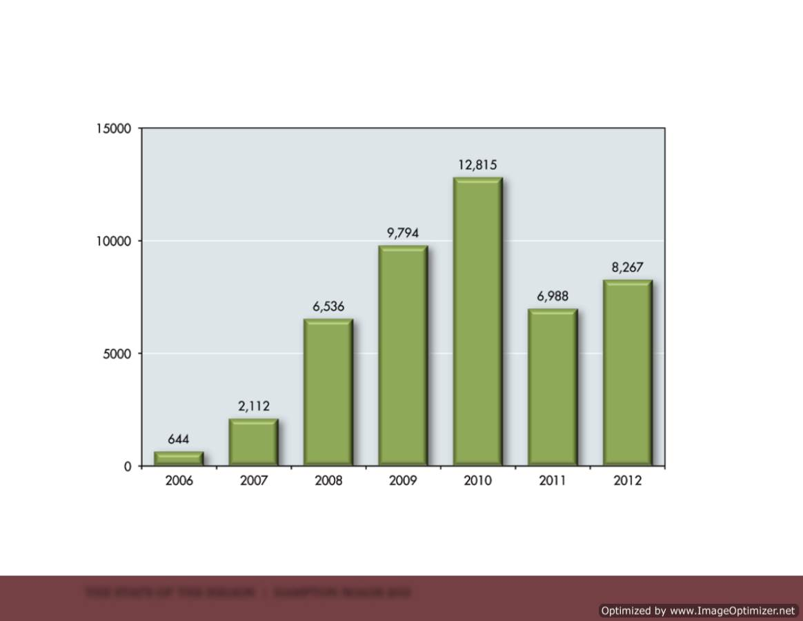
THE STATE OF THE REGION | HAMPTON ROADS 2013
48
GRAPH 7
HAMPTON ROADS RESIDENTIAL FORECLOSURE FILINGS, 2006-2012
Sources: Realty Trac and the Old Dominion University Economic Forecasting Project
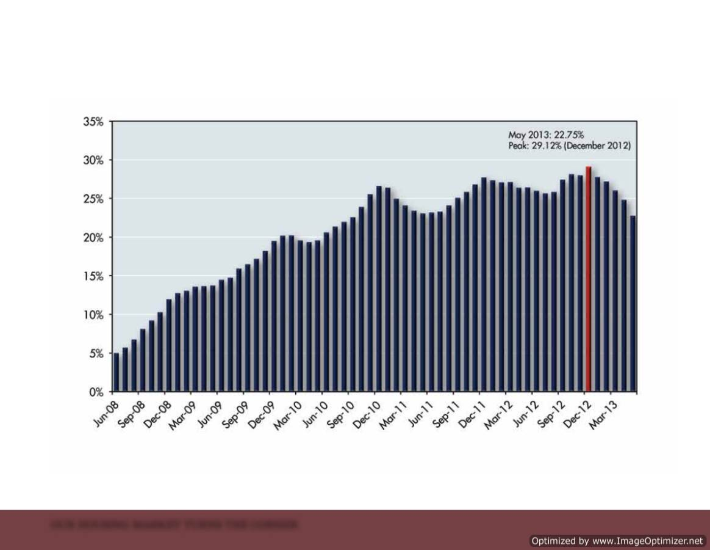
OUR HOUSING MARKET TURNS THE CORNER
49
GRAPH 8
SALE OF DISTRESSED HOMES (REO AND SHORT SALES)
AS A PERCENTAGE OF TOTAL ExISTING RESIDENTIAL HOMES SOLD IN HAMPTON ROADS
Sources: Real Estate Information network and the Old Dominion University Economic Forecasting Project
Jun-13
THE STATE OF THE REGION | HAMPTON ROADS 2013
50
Housing Affordability
By historical standards, this is a very good time to buy a home in Hampton
Roads. The major alternative, of course, is to rent a home rather than buy. Cost
is an absolutely critical consideration. In Table 3, we compare the median
monthly rent that must be paid to rent a three-bedroom apartment to the principal
and interest payment that must be paid to service the mortgage on a median-
priced home. The ratio of the rent to the mortgage payment is a measure of the
relative attractiveness of each strategy.
It is apparent that home ownership has become increasingly attractive when
compared to renting; the rent/mortgage payment ratio rose to 1.74 in 2013
after hitting a low of only .83 in 2006 and 2007. The numbers assume a no
money down, historical average 30-year mortgage rate for each year and 3.8
percent in 2013.
Housing costs constitute one side of the housing affordability coin; the other
side depends upon household income. The most commonly used measure of
a household’s ability to purchase a median-priced home is the ratio of median
monthly household income to the average monthly payment a household would
have to pay to own the home. Graph 9 makes those computations; one can
see that in 2013, the average monthly payment for a new home was only 18.3
percent of median household income in Hampton Roads (and only 19.6 percent
nationally). Both percentages are well below the 30 percent of income level that
often is cited by financial advisers as the most that a household should pay for
housing.
Households in our region currently have a much greater ability to purchase a
home than they have had in nearly every year in the past. At the height of the
housing boom in 2006, it took 30.6 percent of median monthly household
income in Hampton Roads to make the monthly mortgage payment on the
median-priced existing home. Of course, it’s one thing to say homes are
affordable and another thing to obtain financing. Mortgage standards have
risen in recent years (probably a good thing) and not as many households
qualify for financing today as did in the heydays of 2006 and 2007, when
zero down payments were in vogue.
TABLE 3
ESTIMATED HOUSE RENTAL AND PRINCIPAL AND INTEREST
FOR A HOUSE PAYMENT IN HAMPTON ROADS, 2001-2013
Year
Median Monthly
Rent for a Three-
Bedroom House
P&I Monthly
for a Median
House
Ratio of
Monthly P&I
to Rent
2001
$882
$743
1.19
2002
$911
$761
1.20
2003
$1,037
$780
1.33
2004
$1,044
$940
1.11
2005
$1,087
$1,152
0.94
2006
$1,118
$1,353
0.83
2007
$1,164
$1,409
0.83
2008
$1,247
$1,323
0.94
2009
$1,336
$1,132
1.18
2010
$1,382
$1,062
1.30
2011
$1,427
$922
1.55
2012
$1,454
$859
1.69
2013
$1,570
$900
1.74
Sources: HUD and the Old Dominion University Economic Forecasting Project
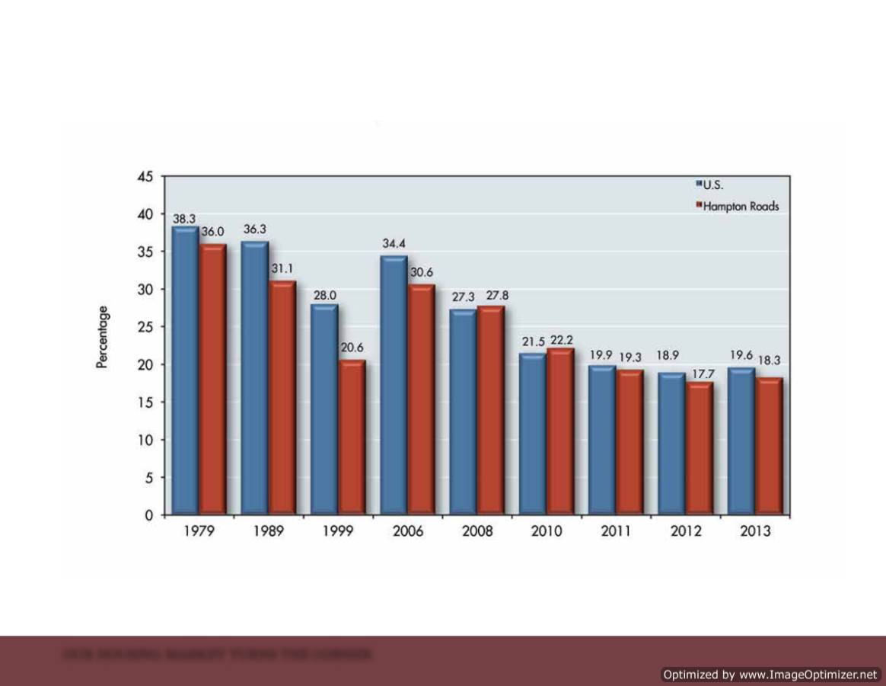
OUR HOUSING MARKET TURNS THE CORNER
51
GRAPH 9
HOUSING AFFORDABILITY: MONTHLY PAYMENT FOR A MEDIAN-PRICE RESALE HOUSE AS A PERCENTAGE OF
MEDIAN HOUSEHOLD MONTHLY INCOME IN HAMPTON ROADS AND THE U.S., 1979-2013
Source: Old Dominion University Economic Forecasting Project (assumes an average 30-year mortgage rate of 3.8 percent in 2013)
THE STATE OF THE REGION | HAMPTON ROADS 2013
52
New Home Construction
And Sales
It should not come as a surprise that the combination of home prices that still
are 20 percent or more below their peaks in 2007 plus very high levels of
housing affordability have resulted in increased home sales. One can see in
Table 4 that both the sales of existing homes and newly constructed homes
rose two years in a row in 2011 and 2012. The slow, but evident, recovery
of new-home construction is a welcome sign that builders and developers now
sense a changing economic climate. After eight consecutive years of declines
in the number of newly constructed residential homes sold in Hampton Roads
(see Table 5), more new homes now are being constructed and sold. While this
improvement primarily is a reaction to our rallying regional economy, the revival
of new residential home construction soon will become an economic engine on
its own.
OUR HOUSING MARKET TURNS THE CORNER
53
TABLE 4
NUMBER OF ExISTING AND NEW-CONSTRUCTION HOMES
SOLD IN HAMPTON ROADS, 2001-2013*
Year
Existing Homes
Sold
New-
Construction
Homes Sold
Percent New-
Construction
2001
18,924
4,836
20.4%
2002
19,869
4,969
20.0%
2003
21,421
4,757
18.2%
2004
23,548
4,587
16.3%
2005
24,755
4,379
15.0%
2006
22,405
4,327
16.2%
2007
19,154
3,912
17.0%
2008
15,046
3,178
17.4%
2009
15,851
2,673
14.4%
2010
14,703
2,265
13.4%
2011
15,818
2,366
13.0%
2012
16,856
2,664
13.6%
2013*
7,160
1,059
12.9%
Sources: Real Estate Information network and the Old Dominion University Economic Forecasting Project. Data
here represent those properties that are listed through Real Estate Information network by REIn members and
may not represent all new-construction activity in our region. *Data are for YTD May 2013.
TABLE 5
NUMBER OF NEW-CONSTRUCTION RESIDENTIAL HOMES
SOLD IN HAMPTON ROADS, 2001-2012
Year
Number Sold
Percent Change
Year to Year
2001
4,836
18.1%
2002
4,969
2.8%
2003
4,757
-4.3%
2004
4,587
-3.6%
2005
4,379
-4.5%
2006
4,327
-1.2%
2007
3,912
-9.6%
2008
3,178
-18.8%
2009
2,673
-15.9%
2010
2,265
-15.3%
2011
2,366
4.5%
2012
2,664
12.6%
Sources: Real Estate Information network and the Old Dominion University Economic Forecasting Project. Data
here represent those properties that are listed through Real Estate Information network by REIn members and
may not represent all new-construction activity in our region..
54% Decrease
between 2002
and 2010
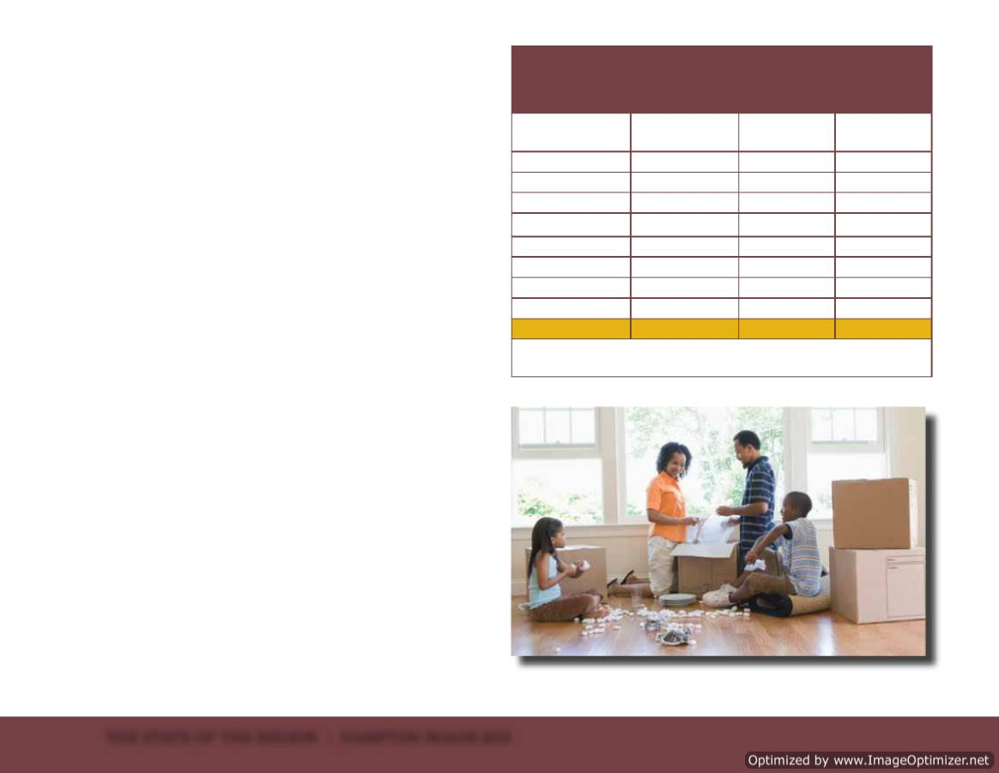
THE STATE OF THE REGION | HAMPTON ROADS 2013
54
Individual Housing Markets:
A Breakdown By Cities
“Location, location, location” is the well-known observation of real estate
professionals about what is most important in determining the value and
salability of a home. Hampton Roads as a region boasts a wide array of cities
and neighborhoods. Let’s provide a bit of context to the regional housing data
we supplied in the sections above by subdividing those data by city. Let’s begin
with sales prices (see Table 6).
Table 6 reveals that the median sales price of existing homes in Portsmouth
fell substantially more than sales prices of existing homes in any other city in
Hampton Roads between 2007 and 2012. This is unlikely to be good news
for that city, but could simply represent a change in the mix of homes sold
in Portsmouth (involving a higher proportion of lower-priced homes) rather
than a catastrophic fall in the sale of all homes. Further, while Williamsburg
recorded one of the smallest declines in prices (only 12.1 percent), that city’s
unemployment rate also is among the highest of any city in the region and
we already have detailed the problems that the Historic Triangle is having
in attracting tourists and hotel patrons. The housing market in Williamsburg,
however, has benefited from a continued influx of retirees and other people who
are attracted by the city’s cultural and recreational amenities.
Table 7 reports analogous data, but focuses solely on newly constructed homes
in each city between 2006 and 2012. This shakes up the previous relationship;
Portsmouth no longer is the outlier and Virginia Beach now surges to the front
in terms of the smallest decline in median sales price. note that the decline in
the median sales price of a newly constructed home between 2006 and 2012
(21.7 percent) was larger than the comparable decline in the median sales
price of an existing home (17 percent). As is usually true, new-home construction
took the brunt of the adjustment when housing markets deteriorated.
TABLE 6
MEDIAN SALES PRICE OF ExISTING RESIDENTIAL HOMES IN
HAMPTON ROADS BY CITY, 2007 AND 2012
City
Median Price
2007
Median Price
2012
Percent
Change
Chesapeake
$250,100
$217,900
-12.9%
norfolk
$195,000
$145,000
-25.6%
Portsmouth
$165,500
$107,000
-35.4%
Suffolk**
$257,500
$199,000
-22.7%
Virginia Beach
$245,000
$219,000
-10.6%
Hampton
$180,000
$135,000
-25.0%
newport news
$199,250
$145,800
-26.8%
Williamsburg*
$284,450
$250,000
-12.1%
Hampton Roads
$223,000
$185,000
-17.0%
Sources: Real Estate Information network and the Old Dominion University Economic Forecasting Project.
*Williamsburg represents Williamsburg, James City County, York County and Gloucester County.
**Median price in Suffolk peaked in 2006 at $263,950.
OUR HOUSING MARKET TURNS THE CORNER
55
Final Observations
The Great Recession pulverized regional housing markets. “It was the worst I
had seen in 30 years,” commented a shell-shocked real estate agent. Things
have improved significantly since then. Prices and sales are up, inventories are
down and the volume of distressed homes that flooded the market just a few
years ago has declined.
nevertheless, approximately one-quarter of all home sales in our region still
involve distressed properties. We continue to be tied at the billfold both to the
absolute volume of defense spending and its particular mix. We’ve largely
avoided significant hurricane damage in recent years; however, rising sea levels
render us increasingly vulnerable to very high levels of property damage and
reductions in economic activity.
Finally, as always has been the case, civilians in Hampton Roads have very little
ability to influence events in potentially explosive locations such as north Korea,
the East China Sea, Syria and Iran. Adverse developments in such locations
may represent bad news for the world and for the United States, but might
represent good economic news for Hampton Roads if they result in a surge
of additional military expenditures similar to those that occurred after 2001.
Ironically, bad news for the world and the U.S. may represent good news for us,
and vice versa. Such is the interesting nature of our economy and our housing
markets.
TABLE 7
MEDIAN SALES PRICE OF NEW-CONSTRUCTION RESIDENTIAL
HOMES IN HAMPTON ROADS BY CITY, 2006 AND 2012
City
Median Price
2006
Median Price
2012
Percent
Change
Chesapeake
$385,225
$268,750
-30.2%
norfolk
$309,700
$235,000
-24.1%
Portsmouth
$287,015
$208,775
-27.3%
Suffolk
$368,500
$268,900
-27.0%
Virginia Beach
$380,725
$355,300
-6.7%
Hampton
$325,000
$259,450
-20.2%
newport news**
$292,733
$233,293
-20.3%
Williamsburg*
$345,138
$266,298
-22.8%
Hampton Roads
$349,900
$273,950
-21.7%
Sources: Real Estate Information network and the Old Dominion University Economic Forecasting Project
*Williamsburg represents Williamsburg, James City County, York County and Gloucester County.
**Median price in newport news and Williamsbug markets peaked in 2005 and 2007 at $315,900 and
$368,900, respectively.

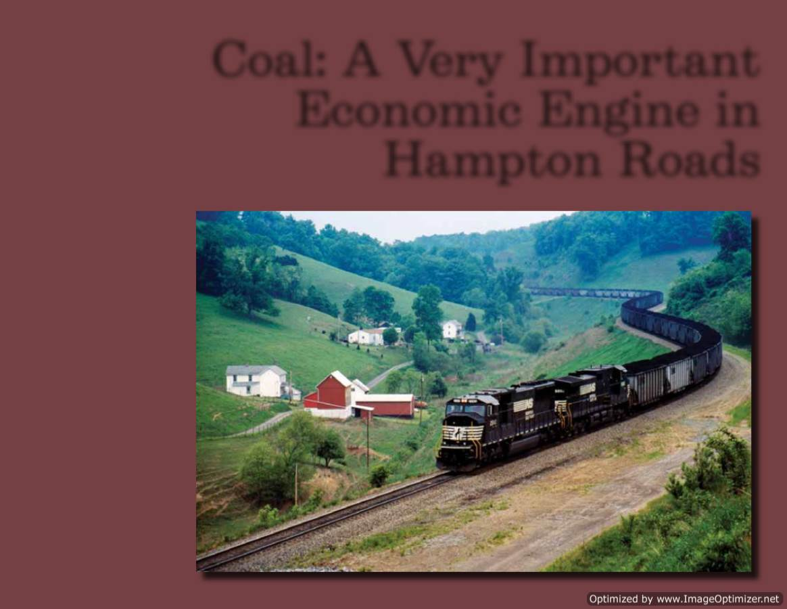
Coal: A Very Important
Economic Engine in
Hampton Roads
THE STATE OF THE REGION | HAMPTON ROADS 2013
58
Coal: a very IMportant eConoMIC enGIne
In HaMpton roads
C
oal. The word conjures many quick visual associations – coal mining throughout the United States, but especially in southwestern Virginia; the most important
worldwide source of energy for the production of electricity; smoke stacks and the possibility of environmental degradation; and, the huge coal terminals in
our own backyard.
The coal terminals located in the Port of Virginia, here in Hampton Roads, are
our focus in this chapter. How busy are they? How much income and how many
jobs in our region are connected to their operation? What is their future?
Two Old Dominion University economists, Vinod Agarwal and Gary Wagner,
recently analyzed the economic impact on Hampton Roads and Virginia of
coal exports via the Port of Virginia. This chapter relies heavily upon their work,
which was performed at the request of CSX Transportation, Dominion Terminal
Associates and Kinder Morgan.
Some Background
Hampton Roads is the largest coal port in the United States and one of the
largest in the world. There are three coal terminals in our region: the Lambert’s
Point coal terminal in norfolk (owned and operated by norfolk Southern Corp.),
the Pier IX coal terminal in newport news (owned and operated by Kinder
Morgan) and the Dominion Terminal Associates coal terminal in newport news.
Coal is delivered by rail to these three terminals. CSX Transportation provides
service to the terminals in newport news, while norfolk Southern provides the
transportation to its own Lambert’s Point facility in norfolk.
nearly 800 coal vessels made calls at our three terminals in 2011 and they
transported more than 47 million metric tons of coal to other locations. Each
of these vessels required an extensive range of auxiliary services that were
provided by coal forwarders and agents, testing labs, samplers, surveyors,
tug services and harbor pilots. However, the impact of coal doesn’t stop there.
Many other businesses are linked to these coal shipments directly and indirectly,
and the economic ripple effect of the coal shipments (as we shall see) is
substantial.
Despite the growth in other sources of energy over the past few decades, coal
remains one of the primary energy sources in the United States and worldwide.
In the U.S., in 2011, far more electricity was generated from coal than the next
TABLE 1
TOP ExPORTERS OF COAL WORLDWIDE, 2011
(MILLIONS OF METRIC TONS)
Country
Total Exports
Steam Coal
Metallurgical
Coal
Indonesia
309
309
0
Australia
284
144
140
Russia
124
110
14
United States
97
34
63
Colombia
75
75
0
South Africa
72
72
0
Kazakhstan
34
33
1
Source: “Coal Facts 2012,” World Coal Association, www.worldcoal.org
COAL: A VERY IMPORTANT ECONOMIC ENGINE IN HAMPTON ROADS
59
highest (though very rapidly growing) source, natural gas (see Graph 1). Coal
fueled more than 40 percent of the world’s electricity production and more than
30 percent of total energy production in 2011 (“Coal Facts 2012,” World
Coal Association).
The United States and Hampton Roads in particular play a vital role in supplying
coal for the production of both energy and steel here and abroad. As Table 1
reveals, the U.S. was the fourth-largest overall exporter of coal in the world in
2011 and the second-largest exporter of metallurgical coal (often labeled “met”
or “coking” coal).
Hampton Roads has been, and continues to be, the single most important
coal exporting port in the nation. Coal exporting market shares for the largest
six participating regions over the past decade are presented in Table 2. One
can see that Hampton Roads has accounted for nearly 40 percent of the total
volume of U.S. coal exports since 2000. Our region’s three coal export facilities
– Lambert’s Point (or Pier 6) in norfolk and Pier IX and Dominion Terminal
Associates in newport news – collectively have never accounted for less than
one-third of our nation’s coal exports since 2000. In 2009, the three facilities
exported slightly more than 51 percent of the total volume of U.S. coal exports.
Until the Detroit area witnessed a considerable jump in its exports between
2005 and 2008, the volume of coal exports from Hampton Roads regularly
exceeded the combined volumes of the next five largest coal-exporting regions
in the United States.
The total volume of coal exports in both the United States and Hampton Roads
has increased at a reasonably steady pace over the past decade. At the end of
2011, exports were just shy of 98 million metric tons nationwide and 43 million
metric tons in Hampton Roads, up respectively from 36 million metric tons and
13 million metric tons in 2002. Graph 2 shows coal exports for the U.S. and
Hampton Roads since 2002 (but does not include coastwise coal shipments that
go to other locations in the U.S., usually via barge).
If we include coastwise coal (which stays inside the U.S.) and examine the three
Hampton Roads facilities individually, then we see a very similar trend to that of
the nation over the past decade. These relationships are illustrated in Graph 3.
Total coal shipments (coastwise plus exports) have risen substantially at Lambert’s
Point, Pier IX and Dominion Terminal Associates (DTA) since 2002. Total coal
shipments increased from just over 20 million metric tons in 2002 to more than
47 million metric tons by 2011. In terms of growth over that period, total coal
movements grew more than 106 percent at DTA, more than 114 percent at
Lambert’s Point and by 193 percent at Pier IX – all very impressive for a 10-year
period. Coastwise coal, whose 7 million metric tons accounted for roughly 30
percent of the aggregate coal shipments through these facilities a decade ago,
now accounts for only about 10 percent of shipments today. Hence, it is the
export share of coal shipments that has been the growth component for coal
movements in our region, especially since 2007.
TABLE 2
MARKET SHARES OF THE LARGEST U.S. COAL ExPORT
REGIONS, 2000-2010
Hampton
Roads
Baltimore
Mobile
New
Orleans
Detr
oit
Seattle
2000
41.5%
11.5%
11.4%
2.4%
2.3%
0.0%
2001
39.4%
10.7%
10.1%
2.9%
1.7%
0.0%
2002
33.8%
10.1%
11.2%
2.1%
1.2%
0.0%
2003
33.2%
7.9%
10.8%
3.0%
8.6%
0.0%
2004
33.2%
10.9%
14.9%
7.0%
14.5%
0.0%
2005
33.3%
11.1%
16.1%
4.1%
19.1%
0.0%
2006
33.3%
13.1%
13.8%
4.9%
30.4%
0.1%
2007
40.2%
14.7%
13.8%
7.3%
24.6%
0.0%
2008
40.1%
14.9%
11.2%
11.9%
22.5%
0.0%
2009
51.6%
12.5%
14.6%
9.0%
11.9%
0.7%
2010
43.2%
18.7%
13.1%
12.6%
8.6%
4.7%
Average
2000-
2010
38.4%
12.4%
12.8%
6.1%
13.2%
0.5%
Source: U.S. Energy Information Administration. Data do not include coastwise coal shipments that go to other
locations in the U.S., usually via barge.
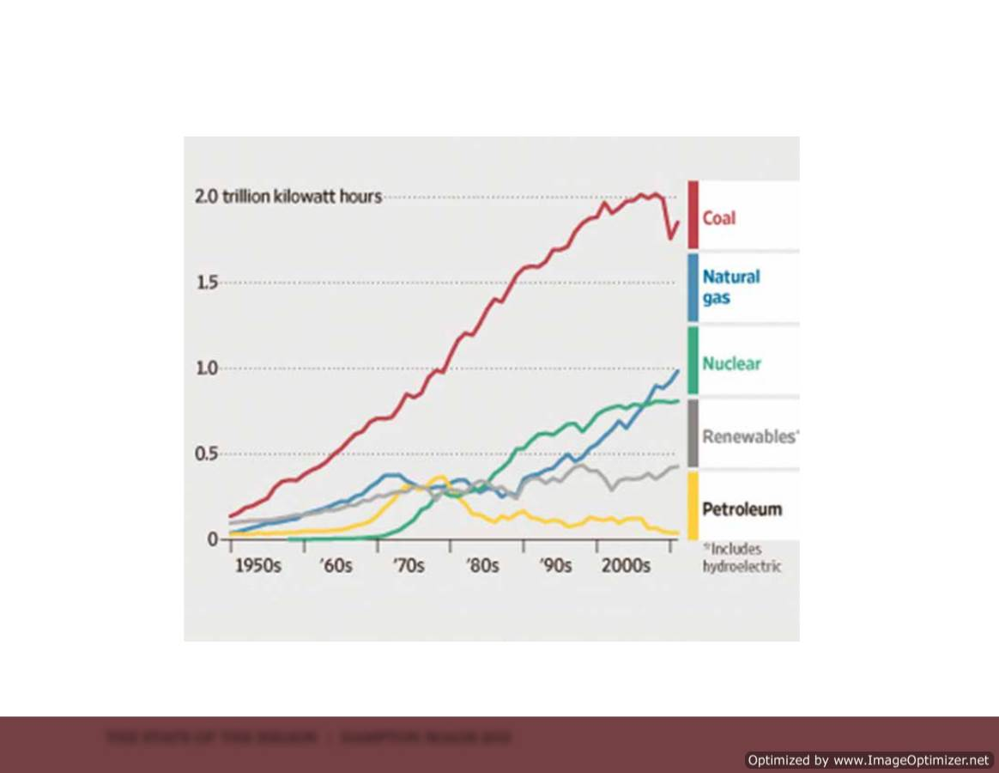
THE STATE OF THE REGION | HAMPTON ROADS 2013
60
GRAPH 1
SOURCES OF ENERGY THAT HAVE SUPPORTED THE PRODUCTION OF ELECTRICITY
IN THE UNITED STATES, 1950-2012
Source: Wall Street Journal, 259 (March 28, 2012), A1
Source: Energy Information Administration
Note: Percentages don’t total 100 due to rounding.
Net generation of electricity by fuel source
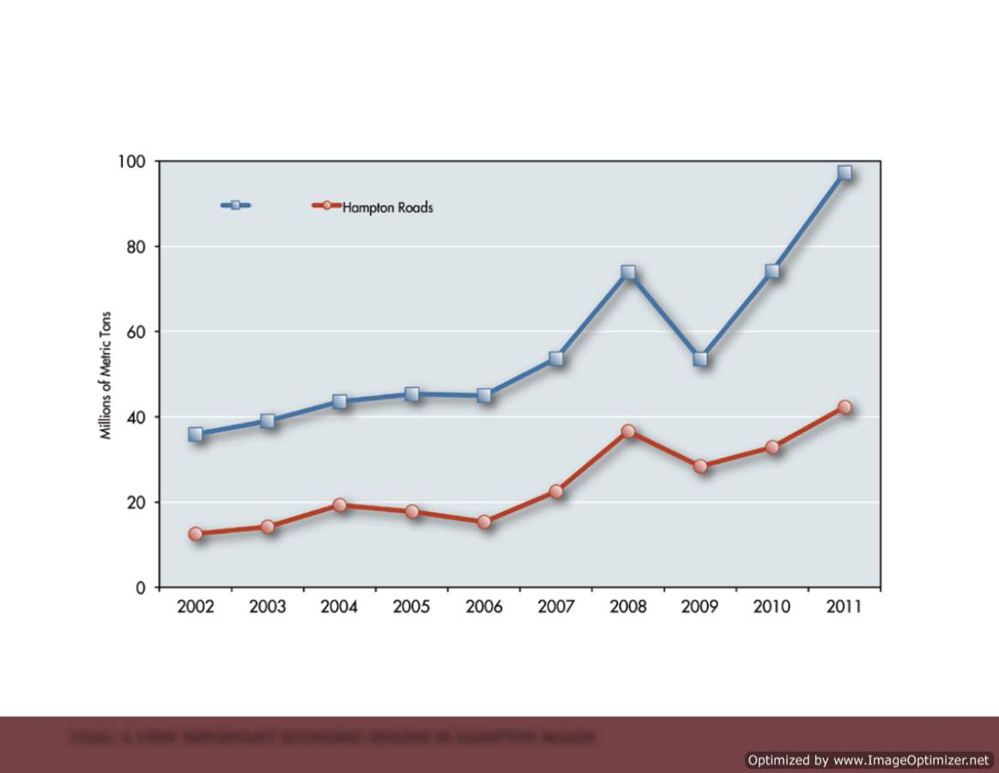
COAL: A VERY IMPORTANT ECONOMIC ENGINE IN HAMPTON ROADS
61
GRAPH 2
TOTAL COAL ExPORTS FROM HAMPTON ROADS AND THE U.S., 2002-2011
Sources: U.S. Energy Information Administration and T. Parker Host. Data do not include coastwise coal that goes to other locations in the U.S., usually via barge.
U.S.
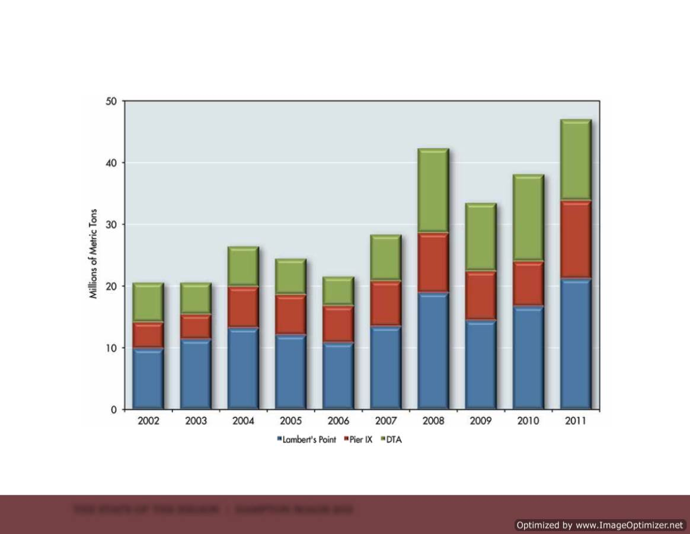
THE STATE OF THE REGION | HAMPTON ROADS 2013
62
GRAPH 3
TOTAL COAL SHIPMENTS FROM HAMPTON ROADS BY TERMINAL, 2002-2011
Source: T. Parker Host
COAL: A VERY IMPORTANT ECONOMIC ENGINE IN HAMPTON ROADS
63
It should be clear from Graph 3 that even though Lambert’s Point is the largest
coal terminal, each of the three facilities currently is shipping in excess of 12
million metric tons annually. Table 3 presents each terminal’s share of coal
shipments in Hampton Roads and the U.S. from 2002 to 2011.
During this period, Lambert’s Point was responsible for nearly 48 percent of all
coal shipments out of Hampton Roads. This constituted nearly 20 percent of all
coal shipments in the U.S. over the same period. Further, coal shipments from
Pier IX and DTA in newport news grew from 7.3 percent and 10.9 percent,
respectively, of all coal shipments nationwide in 2002 to more than 10 percent
and 12 percent by the end of 2011.
In recent years, roughly three-quarters of the aggregate coal shipments through
Lambert’s Point, Dominion Terminal Associates and Pier IX have consisted of
metallurgical coal, which is primarily used in the production of steel. Where
were these customers located? As Graph 4 discloses, a third of the coal exports
from Hampton Roads in 2011 was destined for just three countries – Italy,
Brazil and the netherlands. The 10 largest export destinations accounted for
more than 70 percent of the total coal exports from our region. It is important to
keep in mind that destinations with large port facilities, such as Rotterdam and
Antwerp in the netherlands, may simply act as way stations on the journey to
the ultimate consuming nation.
The massive volume of coal moving through the facilities in Hampton Roads
necessarily means that a steady stream of coal-laden vessels utilizes our regional
waterways. Almost 800 vessels made calls either to Pier IX, Dominion Terminal
Associates or Lambert’s Point in 2011. Each of these vessels departed with an
average tonnage of more than 45,500 metric tons of coal, and the largest
vessel was loaded with more than 130,000 metric tons of coal! Table 4 reveals
that the flow of coal from Hampton Roads was fairly steady throughout the year.
Roughly two coal ships a day on average, 365 days a year, are loaded with
coal in Hampton Roads and then sent around the world.
TABLE 3
SHARE OF SHIPMENTS OF THE THREE COAL TERMINALS IN
HAMPTON ROADS, 2002-2011
Share of All Coal
Shipments in Hampton
Roads
Share of All Coal
Shipments in the United
States
Lambert’s
Point
Pier IX
DTA
Lambert’s
Point
Pier IX
DTA
2002
47.9%
21.0%
31.1%
16.8%
7.3%
10.9%
2003
55.2%
19.7%
25.1%
20.1%
7.2%
9.2%
2004
50.0%
25.3%
24.8%
22.1%
11.2%
11.0%
2005
49.4%
26.6%
24.0%
19.3%
10.4%
9.4%
2006
50.3%
27.8%
21.9%
17.1%
9.5%
7.5%
2007
47.4%
26.1%
26.5%
19.9%
10.9%
11.1%
2008
44.7%
22.9%
32.4%
22.1%
11.3%
16.0%
2009
43.2%
23.8%
33.0%
22.8%
12.6%
17.5%
2010
43.8%
19.2%
37.0%
19.4%
8.5%
16.4%
2011
45.0%
27.0%
28.0%
19.5%
11.7%
12.2%
Average
2002-
2011
47.7%
23.9%
28.4%
19.9%
10.1%
12.1%
Sources: U.S. Energy Information Administration and T. Parker Host. Figures do not include coastwise coal,
which goes to other locations in the U.S., usually via barge.
THE STATE OF THE REGION | HAMPTON ROADS 2013
64
TABLE 4
COAL VESSELS AND AVERAGE TONNAGE IN HAMPTON
ROADS, 2011
Month
Number of Vessels
Average Metric
Tons Per Vessel
January
76
42,751.7
February
65
49,227.2
March
85
47,893.3
April
79
51,968.7
May
67
48,495.1
June
49
42,236.4
July
52
50,936.0
August
57
49,662.5
September
65
45,192.9
October
59
51,021.4
november
64
48,060.6
December
57
55,249.4
Source: T. Parker Host
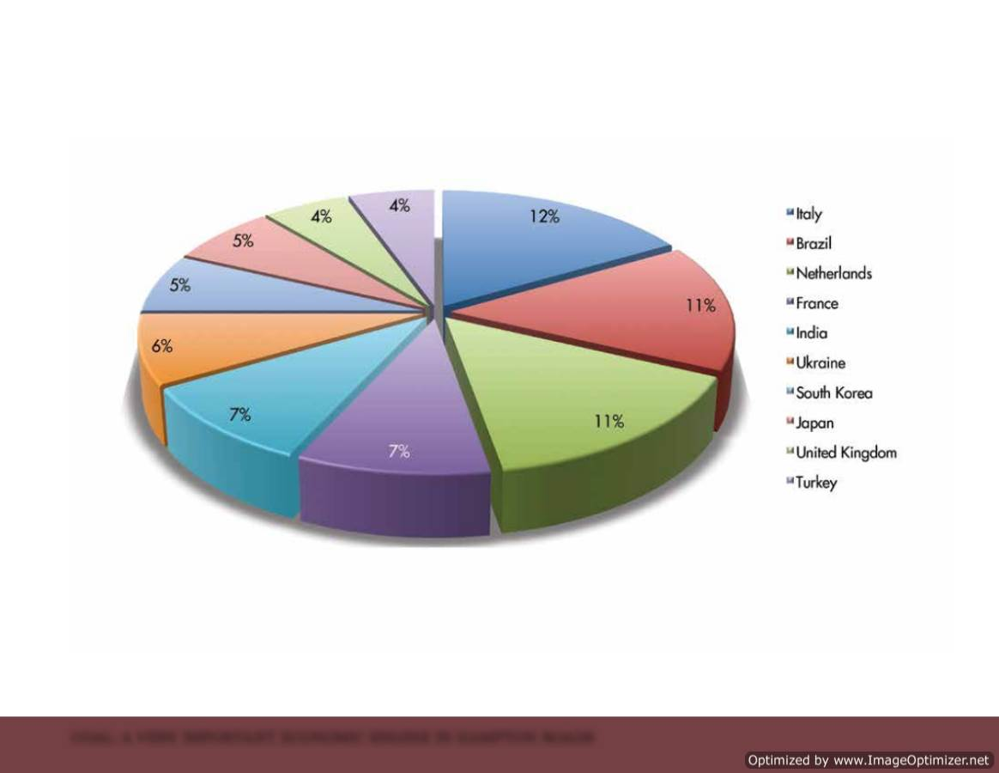
COAL: A VERY IMPORTANT ECONOMIC ENGINE IN HAMPTON ROADS
65
GRAPH 4
TOP 10 DESTINATIONS FOR COAL ExPORTS FROM HAMPTON ROADS, 2011
Source: T. Parker Host
THE STATE OF THE REGION | HAMPTON ROADS 2013
66
Computing Coal’s Economic
Impact In Hampton Roads
The total economic impact of coal shipments on the Hampton Roads economy
is the sum of the primary and secondary impacts. The primary economic impact
is the direct impact on the economy resulting from an initial round of economic
activity – output, earnings and employment that specifically result from all of the
firms directly linked to coal shipments. How many employees do coal-related
firms have and how much are they paid? How much do these firms spend on
machinery, supplies, insurance, food, etc.? Most of this and similar information
reported here was obtained via survey questionnaires and personal interviews
conducted by ODU economists Agarwal and Wagner.
These direct economic expenditures create secondary economic effects that
can be broken down further into indirect and induced impacts. Each of the coal
terminals stimulates activity by businesses that supply it with a wide variety of
items, ranging from fuel and machinery to food and legal services. Traditionally,
this activity is labeled an indirect impact in economic impact studies.
The direct expenditures made by the coal terminals and the indirect expenditures
made by suppliers ripple throughout the region and put more money into the
pockets of people in many different occupations and locations. When they
spend the increased money that appears in their paychecks, this creates induced
economic impact.
Thus, the direct economic impact stimulates both the indirect and induced
economic impacts. If $1,000 of direct economic expenditures by the coal
terminals generates $300 in indirect economic impact and $200 in induced
economic impact, then the economic impact multiplier effect is ($1,000 +
$300 + $200)/$1,000 = 1.5. The size of the multiplier sometimes can be a
subject of controversy. If, for example, most of the ripple effect occurs outside
of the region being examined (a “leakage”), then the actual multiplier effect will
necessarily be smaller. Or, if consumers refuse to spend the extra money when it
appears in their paychecks, then the multiplier also will be smaller.
Readers who have followed the national debate over whether the U.S.
government’s stimulus package actually worked will recognize the previous
discussion. Those who seek to demonstrate that what they are doing is quite
significant prefer large multipliers; those who wish to minimize that effect prefer
smaller multipliers. In the case at hand, Agarwal and Wagner appropriately let
the data provide them with the answer.
JOBS AnD THE PAYROLL-GEnERATInG PROCESS
The movement of coal is dependent upon three general levels of services:
transportation, terminal and vessel. As demonstrated in Graph 5, transportation
services are provided by coal forwarders and brokers, by agents who arrange
for the movement of coal and by railroads that actually transport coal to the
terminals. Coal agents engage in activities such as coordinating and monitoring
of shipments from mines to the terminal, as well as monitoring coal loadings at
the terminals.
A vessel entering the Port of Virginia to pick up coal requires services that
generate jobs and earnings. These services, among others, include pilotage,
towing, fuel, supplies and repairs. Further, as coal reaches our port, terminal
services begin to generate jobs and earnings. In this case, services are required
for dumping, inspection, sampling and dockage. The U.S. government also
provides services that include inspection of ships, Customs and Coast Guard
services.
COAL: A VERY IMPORTANT ECONOMIC ENGINE IN HAMPTON ROADS
67
GRAPH 5
THE GENERATION OF JOBS AND PAYROLL WITH COAL SHIPMENTS
Dump/Trim
Origin/
Destination
Terminal
Vessel
Rail
Government
Coal Agents
Sampling
Pilotage
Towage
Coal Inspection
Coal
Forwarders
and Brokers
THE STATE OF THE REGION | HAMPTON ROADS 2013
68
THE nATURE OF THE DATA
The primary data for this study were gathered in two stages. Coal terminals
and the railroads involved in shipping coal provided detailed information
on employment, payroll, benefits, capital expenditures, taxes and other
expenditures. Firms that directly provide services to the railroads and the
terminals were surveyed to gather information about their employment, payroll,
taxes and their dependence on the coal terminals in Hampton Roads. Of the
17 firms identified, only one refused to respond; two firms stated that they are
not affected by coal shipments. The remaining 14 firms returned the surveys
with complete information on jobs and their degree of dependence on coal
shipments. A few firms refused to provide information about their payroll and
benefits, while many did not provide information on taxes. Missing information
on payroll, benefits and taxes was estimated on the basis of completed surveys
and other data sources.
It should be noted that this study assumed that the few companies that did
not complete our survey or provide any information were treated as having
zero jobs and dependence on coal shipments. In addition, since government
agencies did not provide any information about their dependence on coal
shipments, this study assumed there were no jobs that are directly dependent
on coal movements. In other words, the information on the number of jobs and
earnings used in this study represents conservative estimates.
The data revealed that coal terminals and railroads connected to coal shipments
employed 947 people with a total payroll of $45.4 million in 2011. When
fringe benefits were included, that payroll increased to $69.3 million. Other
firms engaged in coal shipments had estimated employment of 142 people,
with a direct payroll of $9.8 million, and a payroll including fringe benefits of
$12.4 million. On average, a worker employed in an industry directly related
to coal shipments received $50,772 in wages and $24,284 in benefits in
2011.
In addition, the coal terminals and railroads during the period 2007 to 2011,
on average, spent $31.8 million on capital improvements. These companies,
on average, paid $5.4 million in state and local taxes during that same period.
COAL: A VERY IMPORTANT ECONOMIC ENGINE IN HAMPTON ROADS
69
Direct, Indirect and Induced Impact Estimation and Results
Estimates of indirect and induced economic impacts in this report were
generated by using the U.S. Department of Commerce’s Regional Input-Output
Model System II (RIMS II). The model is based on a national input-output table
for 2010, which has been regionalized utilizing 2010 data. An input-output
model shows mathematically how every industry is connected to every other
industry. Such a model shows, for example, major relationships such as how
much the steel industry depends on the coal industry, but also less obvious
relationships such as how the coal industry affects the hotel and motel industry in
Hampton Roads.
A useful way to think about the total economic impact of coal shipments is to
visualize it as a wave approaching the shore. The wave may hit a breakwater
that absorbs some of its momentum, but it will continue on to wash over the
beach until all of its energy is exhausted. Likewise, coal shipments arriving in
Hampton Roads flow through the region’s economy, creating taxes, output,
earnings and jobs. Though the initial energy of the economic activity is
absorbed by leakages and taxes, the effect of the economic activity flow
continues through the region’s economy. Thus, industries that are directly involved
with the local coal shipment industry pay employees, pay additional taxes
and purchase goods and services from intermediate suppliers. Since some
of the goods and services are “imported” from suppliers located outside of
Hampton Roads, some of the economic energy leaks away and is incrementally
dissipated.
However, many of the suppliers to the industries that are directly related to
the coal business are located in Hampton Roads. Output, earnings and jobs
are created in Hampton Roads within these indirect industries, which meet the
demands of the directly related industries. A final burst of economic energy
created by the flow of coal is expended by subsequent purchases from
Hampton Roads industries, whose source is spending induced by the household
earnings created in the direct and indirect industries.
The estimated direct, indirect, induced and total economic impact of coal
shipments on Hampton Roads in 2011 is presented in Table 5. All estimates are
reported without sector or industry breakdowns to preserve the confidentiality of
survey participants.
The direct economic impact of coal shipments in Hampton Roads (in 2011)
was responsible for more than $518 million of the region’s economic output,
more than $55 million in earnings and nearly 1,100 jobs. Once we include
the full ripple effects within our region, the economic footprint expands
considerably. Including the
indirect and induced effects, in 2011
coal shipments in Hampton Roads generated more than $900
million of goods and services for our region, created more than
$200 million in earnings across all private-sector industries
and led to almost 4,200 jobs.
In addition to the estimated impacts, the RIMS II model allows us to provide
detailed estimates of the sectors that are most heavily influenced by the indirect
and induced effects of coal shipments. For instance, Table 6 shows how the
indirect effects of coal shipments influence specific economic sectors in terms
of output and jobs. We have highlighted the top seven industries, which are
the sectors that provide the most economic goods and services to the firms that
are directly involved in coal shipments. For example, firms in the finance and
insurance sector owe $21.5 million of their economic output and 100 jobs to
services provided to the firms that are directly linked to coal shipments within
Hampton Roads.
TABLE 5
ESTIMATED ECONOMIC IMPACT OF COAL SHIPMENTS ON
HAMPTON ROADS IN 2011
Direct
Impact
Indirect
Impact
Induced
Impact
Total
Economic
Impact
Output
(in millions)
$518.8
$207.0
$117.8
$903.6
Earnings
(in millions)
$55.3
$95.8
$52.1
$203.1
Employment
1,089 jobs
1,456 jobs
1,645 jobs
4,190 jobs
THE STATE OF THE REGION | HAMPTON ROADS 2013
70
The direct and indirect economic effects generate income for resources owners
throughout the local economy, which these owners then spend on additional
goods and services. Table 7 illustrates how these induced effects reverberated
through specific economic sectors in 2011. For instance, we see that health
care and social assistance had an output estimate of $28.1 million and a jobs
estimate of 313.
TABLE 6
ESTIMATED indirecT EFFECTS ON INDIVIDUAL SECTORS IN
HAMPTON ROADS IN 2011
Industry
Output
(in millions of $)
Jobs
Manufacturing
$55.0
166
Transportation and
Warehousing
$28.9
307
Real Estate Rental and
Leasing
$22.1
120
Finance and Insurance
$21.5
100
Professional, Scientific
and Technical Services
$20.6
156
Administrative and
Waste Management
Services
$14.5
231
Construction
$12.5
129
All Other Industries
$32.0
247
Total (sum of all
indirect economic
effects)
$207.0
1,456
TABLE 7
ESTIMATED induced EFFECTS ON INDIVIDUAL SECTORS IN
HAMPTON ROADS IN 2011
Industry
Output
(in millions of $)
Jobs
Real Estate, Rental and
Leasing
$34.3
243
Health Care and Social
Assistance
$28.1
313
Retail Trade
$20.1
282
Finance and Insurance
$17.0
76
Manufacturing
$11.2
39
Other Services Including
Households
$9.8
120
Food Services and
Drinking Establishments
$8.2
154
All Other Industries
$49.1
418
Total (sum of all
induced economic
effects)
$177.8
1,645
COAL: A VERY IMPORTANT ECONOMIC ENGINE IN HAMPTON ROADS
71
Summing Up The Importance
Of Coal In Hampton Roads
Coal shipments have a considerable impact on the economy
of Hampton Roads, accounting for more than $200 million in
earnings and nearly 4,200 jobs in 2011 alone. The growth in
coal movements over the past decade, when tonnage more
than doubled from 20 million metric tons in 2002 to more
than 47 million in 2011, also meant that this activity became
increasingly important to our region’s economy.
Even in the intermediate run, however, the outlook for coal-related activities in
Hampton Roads appears mixed. The U.S. Energy and Information Administration
(www.eia.gov) projects coal consumption in this country to grow by an
average of 1.5 percent a year for at least the next 25 years. However, in the
past few years, there has been a sharp decline in the proportion of electricity
generated from coal and a significant increase in the proportion of electricity
being generated from natural gas and other sources. According to the Energy
Information Administration, coal production in the U.S. fell by 15.3 percent
between 2008 and 2012; the decline was concentrated in the West, in states
such as Wyoming, and in the East in the Appalachian corridor, the primary
source of coal coming into the Port of Virginia.
Earlier this year, The Wall Street Journal carried the story “Coal Exports Plunge”
(June 14, 2013), reflecting slacking demand in China, the world’s largest
consumer of coal. While exports do not claim a large percentage of U.S. coal
production, the WSJ story noted that most exports of coal consist of metallurgical
coal, which is more profitable to coal producers than thermal coal, most of
which stays in the United States.
In any case, as Graph 6 divulges, coal’s share in the generation of electricity in
the U.S. also has fallen about 15 percent since 1998. Environmental concerns
and the cost-effectiveness of natural gas are primarily responsible for this
evolution.
It is reasonable to predict that coal will continue to decline in importance as
a source of electrical power in this country. A senior executive at an electrical
utility recently opined that he doubted that his utility would ever construct
another generating facility using coal as a fuel. The Port of Virginia’s prosperity,
however, does not depend upon coal demand inside the United States. Instead,
the primary destinations of coal shipments from the port are Europe and
Brazil, and rapidly growing countries such as India, South Korea and Japan.
Hence, the declining importance of coal in the U.S. may not impact the Port of
Virginia’s coal activities very much. Worldwide recession, however, would have
a negative impact upon coal traffic exiting the United States from the Port of
Virginia.
There are numerous other factors that will dictate how significant coal shipments
will be to the future of Hampton Roads. How cost-competitive will our region’s
terminals remain relative to other facilities? Will the Port of Virginia realize
benefits from dredging the Port of Virginia’s channel to 55 feet (from the current
depth of 50 feet)? This dredging would position our coal terminals favorably to
handle larger vessels that will travel through both the Panama and Suez canals
in the future.
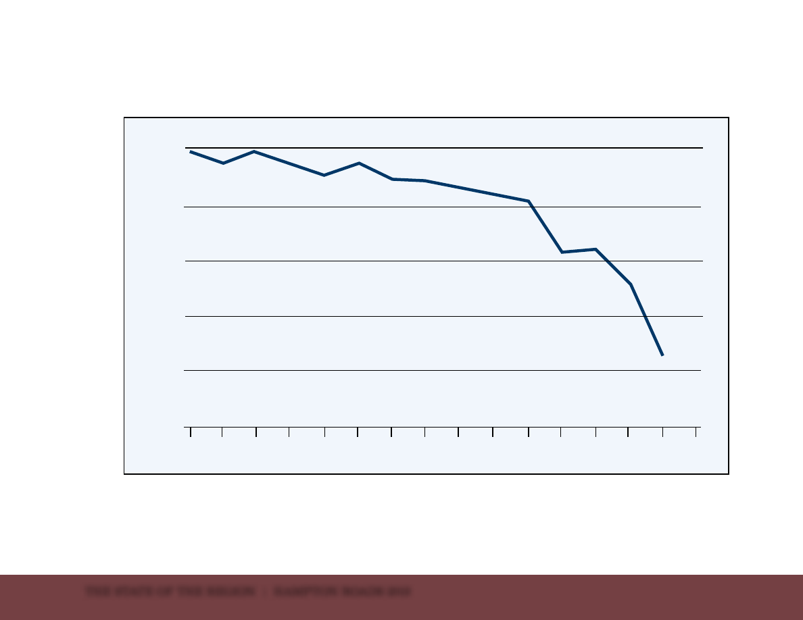
THE STATE OF THE REGION | HAMPTON ROADS 2013
72
GRAPH 6
SHARE OF U.S. ELECTRICITY GENERATED BY COAL, 1998-2012
Source: Mark Perry’s Carpe Diem Blog, May 25, 2012, www.aei-ideas.org/channel/carpe-diem
52%
48%
44%
40%
36%
32%
1988
2000
2002
2004
2006
2008
2010
2012
Source: EIA
mjperry.blogspot.com
COAL: A VERY IMPORTANT ECONOMIC ENGINE IN HAMPTON ROADS
73
Where Our City and
County Governments
Spend Their Money
THE STATE OF THE REGION | HAMPTON ROADS 2013
76
WHere our CIty and County GovernMents
spend tHeIr Money
D
uring his first successful run for the presidency, Ronald Reagan proposed that the federal government take over responsibility for Medicaid, while passing on
responsibility to the states for means-tested income transfers such as food stamps, temporary aid to needy families and the like. After Reagan was elected,
his proposal never made much headway in Congress, not the least because many states were opposed to it.
Ironically, virtually every state today would leap to accept such a bargain
because Medicaid expenditures are devouring their budgets. Currently, in
Virginia, one out of every six dollars of general fund expenditures goes to
Medicaid. If there is a lesson here, then it is that times change. And, when times
change, governments alter their spending patterns.
Where do the city and county governments in Hampton Roads spend their
revenues today? Have their spending patterns changed over time? We know
our governmental units have had to cope with rapidly changing circumstances.
Foremost has been the need to deal with the effects of the deepest economic
downturn since the Great Depression. This has strangled government revenue
growth even while it has increased the demand for certain kinds of expenditures
that reflect higher rates of unemployment. Add to this stagnant or declining
defense expenditures, transportation challenges that include the possibility of
extending norfolk’s light rail system and the widespread imposition of tolls, the
decline of the Historic Triangle as a tourist destination amidst a general decline
in hotel revenue earned per available room in the region, underfunded pension
systems, reduced state support for many city activities and continuing pressures
to fund K-12 education. Elected officials could easily add other significant items
to this list. Suffice it to say that our cities and counties face the classic economic
problem – how to allocate their limited resources when faced with almost
unlimited demands.
How have our localities reacted to this changing environment? In this chapter
we examine the spending patterns of the cities and counties that make up the
Hampton Roads region.

WHERE OUR CITY AND COUNTY GOVERNMENTS SPEND THEIR MONEY
77
Contrasting Local
Government Spending
To That Of Others
Local government spending is quite different from the other tiers of government.
Entitlements, national defense, health care and debt repayment dominate
the federal budget. Medicaid, entitlements and education (including higher
education) dominate state budget allocations. Meanwhile, at the local level,
K-12 education accounts for approximately 40 percent of all local government
spending, followed by police protection at about 10 percent.
In Virginia, the relationship between city and state government is distinctive. In
most other states, cities reside within counties and city dwellers simultaneously
are governed by a city government and a county government. The city of
Chicago and Cook County, Ill., provide an excellent example of such joint
jurisdiction.
Virginia cities, however, are “independent cities,” and take the place of county
governments within their city boundaries. Indeed, 39 of the 42 independent
cities in the United States are in Virginia (the other three are Baltimore, St. Louis
and Carson City, nev.). Therefore, in our analysis, we will treat counties and
cities identically in terms of their local spending.
GOVERnMEnT SPEnDInG PATTERnS In HAMPTOn ROADS
Table 1 presents data on per capita spending for the cities and counties in
Hampton Roads for the fiscal year ending in June 2010. Per capita spending
is the appropriate statistic to investigate when looking at spending patterns
because this measure adjusts the data for the size of the community. Per capita
spending levels probably best demonstrate the commitment (or lack thereof) of
local governments to selected activities.
The following spending definitions apply:
General Government: General costs of running government such
as legislative spending (mayor and city/county staff, etc.), and office of
Commissioner of the Revenue
Judicial: Legal system including courts and the office of the Commonwealth’s
Attorney
Public Safety: Law enforcement and protection, fire and rescue services,
detentions and inspections
Public Works: Maintenance of roads and bridges, sanitation and waste
removal, and maintenance of public buildings and grounds
Health: Health services spending, mental health and intellectual disability
services, and social services
Education: Instruction, administration, transportation of students, maintenance
of school buildings and school food services
Parks: Cultural activities, public libraries, and parks and recreation
Community Development: Planning, environmental management,
cooperative development and cooperative extension activities.
In Table 1, per capita spending levels coded in blue indicate the highest per
capita expenditures in our region and those coded in red reflect the lowest
per capita spending levels. One can see that both the blue and red outliers
typically are associated with the less-populated municipalities. This tells us that
governmental unit size, by itself, is not necessarily the determinant of per capita
spending differences. Economies of scale may exist that promote or discourage
certain kinds of expenditures (for example, on parks and recreation), but the
data in Table 1 tell us that other factors, such as the character of a community,
may be even more important in determining spending patterns.
THE STATE OF THE REGION | HAMPTON ROADS 2013
78
TABLE 1
2010 LOCAL GOVERNMENT SPENDING DATA PER CAPITA: HAMPTON ROADS CITIES AND COUNTIES
Locality
General
Government
Judicial
Public Safety Public Works
Health
Education
Parks
Community
Development
Chesapeake
$142
$80
$503
$279
$232
$1,890
$73
$64
Franklin
$245
$27
$856
$509
$555
$1,933
$119
$178
Hampton
$171
$49
$540
$261
$465
$1,638
$193
$150
Newport News
$143
$55
$611
$211
$431
$1,789
157
$163
Norfolk
$105
$63
$715
$377
$480
$1,555
$200
$121
Poquoson
$150
$29
$452
$188
$201
$1,672
$109
$54
Portsmouth
$112
$70
$832
$296
$409
$1,627
$137
$210
Suffolk
$105
$88
$589
$377
$324
$1,757
$96
$101
Virginia Beach
$118
$34
$422
$228
$304
$1,696
$159
$174
Williamsburg
$181
$25
$690
$227
$274
$1,754
$163
$351
Gloucester
$129
$53
$268
$51
$258
$1,588
$51
$273
Isle of Wight
$124
$42
$247
$170
$306
$1,559
$79
$49
James City
$99
$88
$405
$97
$200
$1,754
$159
$175
Southampton
$78
$85
$334
$159
$323
$1,558
$24
$33
Surry
$201
$89
$328
$127
$487
$2,250
$83
$78
York
$120
$53
$470
$177
$206
$1,909
$80
$127
Median (M)
$126.50
$54
$486.50
$219
$314.50
$1,725
$114
$138.50
Variance (V)
1,834
534
35,342
13,501
13,247
33,596
2,648
7,342
Ratio (V/M)
13.20
9.18
68.44
57.85
38.85
19.25
22.51
51.05
Source: “Comparative Report on Local Government Revenues and Expenditures for the Fiscal Year Ended June 30, 2010,” Auditor of Public Accounts, Commonwealth of Virginia
WHERE OUR CITY AND COUNTY GOVERNMENTS SPEND THEIR MONEY
79
Some small-population jurisdictions spend lots of money per capita on functions
such as general government (Franklin, at $245 per person, leads the region);
however, other small jurisdictions can be found at the opposite end of the
distribution (Southampton County, at $78 per capita, brings up the rear).
When dealing with any set of data similar to that in Table 1, extreme values
may push the average (mean) value of a variable up or down substantially.
Hence, averages may provide a somewhat deceptive reading of what actually
is typical. Therefore, we rely upon median values for most of our variables. The
median value is the 50th percentile value – the one that divides the distribution
of numbers into two parts of equal size. Hence, half of all values are above the
median and half are below.
Spending levels close to the median indicate spending levels that are typical
within Hampton Roads. For example, Isle of Wight County’s per capita
spending on general government ($124) is very close to the median level
($126.50). Public education spending per person in James City County/
Williamsburg ($1,754) and Suffolk ($1,757) are very close to the median level
for the region ($1,725).
One can make the following observations based upon the data in Table 1:
• The most populous city in the region, Virginia Beach, usually expends less per
capita on most services than the regional median.
• Older central cities, such as Norfolk and Portsmouth, exhibit large per capita
spending on public works. This is casual evidence of a relatively simple
proposition: infrastructure wears out.
• Franklin and Portsmouth have by far the largest per capita spending on public
safety, while norfolk spends the most per capita on parks.
The bottom three rows of Table 1 report the median value for each variable, the
variance of each variable and the ratio of the variance to the median value.
Variance is a measure of how dispersed, or variable, per capita spending is
among the communities. The larger the variance, the more spread out the data
are, while a smaller variance indicates less dispersion in the data. The bottom
row presents the ratio of the variance in per capita spending to its median
value, thus providing us with a relative measure of data variability so that we
can compare spending in one category to another.
Here are additional observations about spending variables we can make based
upon Table 1:
• The highest variability in per capita spending among these governmental
units occurs for the functions of public safety, public works and community
development, in that descending order.
• The lowest levels of spending variability occur in the judicial category,
followed by general government and education.
• With respect to education spending per capita, spending levels across our
region are much less variable than many might suspect. This reflects the
equalizing fashion in which Virginia distributes state financial support to
school districts. The Commonwealth’s Composite Index provides larger per
student grants to school districts that face fiscal pressures due to large numbers
of low-income households, or lower property values.
To make comparisons between governmental units easier, in Table 2 we divide
the level of per capita spending by the average of the 16 communities and then
multiply by 100 in order to determine the degree to which a given community
spends more per capita than the regional average. A ratio greater than 100
indicates higher per capita spending levels than the regional average, while
a ratio below 100 indicates the opposite. Thus, newport news’ 118 index
number for public safety reveals that it spends 18 percent more per capita on
public safety than the typical Hampton Roads city or county.
The following patterns emerge from Table 2:
• The fact that the median (50th percentile) value is below 100 for all but one
service category indicates that a few jurisdictions spend a great deal on
government services, thus pushing up the mean value. Most, however, do not.
• The following jurisdictions are “higher spending” units in that they have
indexes above the 100 index level in at least five of the eight spending
categories: Franklin, Williamsburg, Hampton, newport news, norfolk and
Portsmouth. Those higher-than-average values are coded in blue in Table 2.
THE STATE OF THE REGION | HAMPTON ROADS 2013
80
Except for Franklin and Williamsburg, they are older urbanized cities, where
the perceived need for government spending is higher. Aging infrastructures
and distinctive demographics typically stimulate higher government spending.
• The following jurisdictions are
“lower spending” units
because they are below the 100 index level in at least five
of the eight spending categories: Poquoson, Virginia Beach,
Gloucester, Isle of Wight, Southampton and York. These values
are coded in red in Table 2. Except for Virginia Beach, these governmental
units are suburban or rural in character (though large portions of Virginia
Beach clearly could be classified as either suburban or rural). The perceived
need for government services, if not the reality, causes these jurisdictions to
spend relatively less on government services than many other jurisdictions in
our region.
• Virginia Beach is an outlier. Despite some citizen complaints
about public-sector spending in the resort city, except for
education and parks, Virginia Beach’s spending indexes are
below 100 and in some cases well below that number. no
doubt much of this has to do with the still youthful nature of the city of Virginia
Beach, its distinctive demographics and the fact that most of its infrastructure
is not old. Even so, Virginia Beach clearly does not belong in the big-
spender category among the cities and counties of Hampton Roads. It will be
interesting to see if these spending relationships change as the city ages and
its demographics evolve.
• Franklin also is an outlier, with its per capita spending
above regional averages in seven of eight categories
(judicial providing the single exception). Franklin, settled
in the 1830s as a railroad stop along the Blackwater
River, was incorporated in 1876 and hence actually is
an old city. Franklin’s demographics also more closely
match the region’s large urban communities than most of
the other rural jurisdictions. Finally, Franklin also has had
to battle the closing of the International Paper Co. mill.
Together, these influences have generated higher-than-
average per capita government spending.
WHERE OUR CITY AND COUNTY GOVERNMENTS SPEND THEIR MONEY
81
TABLE 2
RATIOS OF EACH JURISDICTION’S PER CAPITA SPENDING TO AVERAGE HAMPTON ROADS VALUES
Locality
General
Government
Judicial
Public Safety Public Works
Health
Education
Parks
Community
Development
Chesapeake
102
138
97
120
68
113
62
45
Franklin
176
46
166
218
163
115
101
124
Hampton
123
84
105
112
136
98
164
104
newport news
103
95
118
90
126
107
133
113
norfolk
76
108
138
162
141
93
170
84
Poquoson
108
50
88
81
59
100
93
38
Portsmouth
81
120
161
127
120
97
116
146
Suffolk
76
151
114
162
95
105
82
70
Virginia Beach
85
58
82
98
89
101
135
121
Williamsburg
130
43
134
97
80
105
139
244
Gloucester
93
91
52
22
76
95
43
190
Isle of Wight
89
72
48
73
90
93
67
34
James City
71
151
78
42
59
105
135
122
Southampton
56
146
65
68
95
93
20
23
Surry
145
153
64
54
143
134
71
54
York
86
91
91
76
60
114
68
88
Median
91
93
94
93.5
92.5
103
97
96
Variance
946
1579
1320
2483
1140
118
1916
3547
Source: “Comparative Report on Local Government Revenues and Expenditures for the Fiscal Year Ended June 30, 2010,” Auditor of Public Accounts, Commonwealth of Virginia
THE STATE OF THE REGION | HAMPTON ROADS 2013
82
A STATISTICAL AnALYSIS OF SPEnDInG InFLUEnCES
In order to determine the factors that may influence per capita spending in the
Hampton Roads municipalities, we performed an analysis using multiple linear
regression (a multivariate statistical technique often used by economists) to
identify which factors influence spending level choices. In such an analysis, one
attempts to explain the movements of a dependent variable such as spending on
the basis of factors reasonably thought to affect spending.
We focused on two classes of factors thought to affect spending. The first
class of factors attempts to reflect the impact of economic conditions on the
spending of the municipality, while the second set concentrates on demographic
differences. Things included in the first class of factors are median new housing
prices, property tax revenue, median income, the amount of unfunded debt and
poverty levels. We would expect, in general, that the first three of these would
be positively associated with spending by local governments because they
increase the ability of the local governments to provide services. We expect
the last two (debt and poverty) to have a negative association because they
diminish the ability of governmental units to supply services.
Communities with higher income levels may want more spending on public
goods (for example, parks) and may demand more spending on education.
Higher income in jurisdictions such as York County and Poquoson may prompt
more spending on education. However, as will be discussed below, this is not a
uniform relationship. Higher-income communities could prefer less spending on
education if their residents wish to send their children to private schools and/
or higher proportions of those communities consist of individuals who no longer
have children of school age.
The second class of variables includes population density, the percentage of
the population with college degrees and the extremes of the age distribution
of citizens. A priori, higher population density should stimulate per capita
government spending, while the effect of a higher percentage of citizens with
college degrees is not so clear. Perhaps a higher educated citizenry may desire
more spending on items such as parks and libraries. If a large share of the
population in a city is under the age of 18, then we anticipate more spending
on education. On the other hand, a larger share of people 65 and older may
suggest less money allocated to education.
Sixteen cities and counties (those in Hampton Roads) is a rather small sample
to examine and there are predictable statistical problems associated with such
a small sample size. Therefore, in order to increase the statistical reliability of
the analysis, we examined data from all
134 cities/counties in the Commonwealth
of Virginia for 2010. Table 3 presents the
results of our statistical work, which should
now be understood to reflect what is true in
all of Virginia, not simply Hampton Roads.
In Table 3, a blue highlight indicates a
statistically significant positive association,
while a red highlight indicates a statistically
significant negative association. A blank cell
indicates that there is no persuasive statistical
evidence that the variable affects spending.
The results are consistent with other studies
that have investigated the determinants of
per capita spending by local governments.
In the analysis below we break out public
safety into two components: fire and police
services.
We can summarize the statistical results in Table 3:
• Not surprisingly, the higher the property taxes in a city or
county, the more that city or county spends per capita on
each of the nine different services identified.
• Increased population density drives higher per capita
spending on five of the nine services, notably (and again, not
unexpected) police and fire.
Statistical significance
here refers to whether
or not we could expect
to obtain the same
result if we took a
new sample from the
same population and
executed the same
analysis. In the case
at hand, we applied a
two-tailed test of each
coefficient at the .10
level.

WHERE OUR CITY AND COUNTY GOVERNMENTS SPEND THEIR MONEY
83
• The higher the percentage of the population under the age 18, the higher
that city or county’s per capita expenditures on education. On the other hand,
we find no evidence that a more elderly population (a high proportion of
individuals ages 65 and older) stifles per capita expenditures on education.
• Higher median incomes in a city or county are associated with lower
expenditures on the following services: judicial, health/welfare and public
works. Plausibly, there is not as much demand for expenditures upon the
judiciary when a city or county has a population composed of individuals with
higher median incomes; the same might be said for per capita expenditures
on health/welfare. And, if high-median-income citizens are concentrated in
newer jurisdictions, these jurisdictions will not have as many immediate needs
for public works expenditures.
Our detailed statistical analysis enables us
to consider how changes in several of the
explanatory variables in our model affect per
capita spending in a city or county. The single
variable that is associated with an across-the-
board increase in spending in all categories is
property tax revenue. When cities and counties
have more money available to spend, they
spend it. A 10 percent increase in a
city or county’s property tax revenue
per capita stimulates an 8.6 percent
increase in spending on parks and 7.5
percent increases in both fire services
and public works spending. The area
of spending that benefits the least
amount from a property tax increase
is education, where the impact of the
hypothetical 10 percent increase will
stimulate education spending by only
4 percent. (To obtain the regression equation
that is the basis for these estimates, send an
email to jkoch@odu.edu.)
A 10 percent increase in the population density of a city or county increases
spending on each of the protective categories (fire, police) by about 2.2
percent. The same 10 percent increase in population density increases spending
on parks by 3.2 percent.
A 10 percent increase in the population of a city or county holding a bachelor’s
degree or higher increases spending on parks by 4 percent.
A 10 percent increase in the share of the population under the age of 18
increases spending on education by approximately 8 percent.
THE STATE OF THE REGION | HAMPTON ROADS 2013
84
TABLE 3
STATISTICALLY SIGNIFICANT ESTIMATES: LEAST-SQUARES REGRESSION RESULTS
Spending
Variable
Education
General
Government.
Judicial
Police
Fire
Health/
Welfare
Public
Works
Parks
Community
Development
Housing Prices
—
—
—
Property Taxes
+
+
+
+
+
+
+
+
+
Median Income
—
—
—
Unfunded Debt
—
Poverty
+
Population Density
+
+
+
+
+
Percent College
Graduates
+
Percent Population
Less than 18
+
—
Percent Population
Greater than 65
Ordinary least-squares regression models estimate using n-Logit statistical software. All highlighted variables are statistically significant at least 10 percent. The model was estimated in log linear form causing coefficients to represent
elasticities.
WHERE OUR CITY AND COUNTY GOVERNMENTS SPEND THEIR MONEY
85
EXAMInInG EDUCATIOn EXPEnDITURES In GREATER DETAIL
In Table 4, we highlight overall education expenditures per pupil made by the
cities and counties of Hampton Roads spanning a 10-year period. The data
are from the 2001-02 and 2011-12 academic years, and come from the
Superintendent’s Annual Reports, www.doe.virginia.gov.
One can see that the weighted (by the number of pupils)
average educational expenditure per pupil increased in our
region from $5,206 in 2001 to $7,958 in 2011. This is an
annual 4.5 percent increase, compounded. Since the Consumer
Price Index rose 2.3 percent annually during this time, this
means the real (inflation-adjusted) spending per pupil rose 2.2
percent annually over this decade.
A closer look at available data, however, reveals that declining school
enrollments more than accounted for all of the increase in per pupil support.
Table 5 discloses that between 2001-02 and 2011-12, end-
of-year average daily attendance (ADA) fell almost exactly 6
percent in the seven largest cities; in cities such as Newport
News, Norfolk and Portsmouth, ADA fell more than 10
percent. Hence, if pupil enrollments in the seven cities had
remained constant, then per pupil funding would have
plunged. This casts a different light on the generosity of the
cities with respect to their support of K-12 public education.
Even so, the citizens of Hampton Roads did increase their real
per pupil financial commitment to K-12 education during this
time period, and this increased support was almost double the
rate of price inflation. (Interestingly, quite the opposite was true for the
Commonwealth’s per pupil support of its public colleges and universities.)
Given that the cities and counties have had more inflation-adjusted dollars per
pupil to spend, how did they use those funds? It is beyond the scope of this
report to examine specific expenditures, district by district. nevertheless, one of
the critical resource allocation decisions made by schools relates to how much
money they devote to instruction versus administration/overhead. Holding other
things constant, lean administrative structures are preferred.
Table 4 also reports on the proportion of each city or county’s educational
expenditures that are made on instruction. Instructional expenditures include
teachers’ salaries and benefits, supplies such as textbooks and any instructional
services that the city/county contracts out, but do not include capital
improvements, interest payments or any payments made to charter schools.
Columns 1 through 3 of Table 4 present education expenditure data for 2001,
while columns 4 through 6 present expenditure data for 2011. One can see in
column 6 the percentage of each educational budget expended on instruction
in 2011 and that those 2011 numbers varied from a low of 67.81 percent in
Surry to a high of 80.52 percent in Franklin. Among the region’s seven largest
cities, the percentages ranged from a low of 75.70 percent in newport news
to a high of 78.77 percent in norfolk.
Of greater interest is the trend in instructional expenditures. Column 7 reports
that the percentage of the educational budget devoted to instruction fell by 7.58
percent in Surry, 3.55 percent in newport news and 1.99 percent in Virginia
Beach. Overall, the weighted average proportions of budgets
devoted to instruction declined 1.28 percent within Hampton
Roads. Prima facie, this is not a desirable trend. While skillful
administrators are an essential part of K-12 education, face-
to-face instructional contact is an even more important engine
THE STATE OF THE REGION | HAMPTON ROADS 2013
86
TABLE 4
SCHOOL DISTRICT SPENDING PER STUDENT ON INSTRUCTION, CITIES AND COUNTIES OF HAMPTON ROADS, 2001 AND 2011
District
Spending Per
Pupil 2001
Spending on
Instruction Per
Pupil 2001
Percent Spent
on Instruction
2001
Spending Per
Pupil 2011
Spending on
Instruction Per
Pupil 2011
Percent Spent
on Instruction
2011
Percent
Change 2001-
2011
Chesapeake
$6,576.06
$5,277.49
80.25%
$10,502.07
$8,395.79
79.94%
-0.31%
Franklin
$8,192.70
$6,537.69
79.80%
$11,945.80
$9,619.30
80.52%
+0.73%
Hampton
$6,386.38
$5,053.92
79.14%
$10,082.04
$7,816.92
77.53%
-1.60%
newport news
$6,515.63
$5,163.64
79.25%
$10,597.76
$8,022.51
75.70%
-3.55%
norfolk
$7,135.94
$5,743.75
80.49%
$10,142.09
$7,988.84
78.77%
-1.72%
Poquoson
$5,919.83
$4,624.75
78.12%
$9,231.71
$7,392.67
80.08%
+1.96%
Portsmouth
$6,180.17
$4,769.15
77.17%
$10,305.39
$7,883.14
76.50%
-0.67%
Suffolk
$6,162.10
$4,793.64
77.79%
$9,346.47
$7,267.88
77.76%
-0.03%
Virginia Beach
$6,506.72
$5,209.54
80.06%
$10,339.96
$8,072.31
78.07%
-1.99%
Williamsburg/
James City
$7,437.63
$5,636.54
75.78%
$10,492.20
$7,952.91
75.80%
+0.01%
Gloucester
$6,315.28
$4,819.13
76.31%
$8,918.55
$6,816.32
76.43%
+0.12%
Isle of Wight
$6,480.34
$5,163.69
79.68%
$9,651.38
$7,735.18
80.15%
+0.46%
northampton
$7,034.45
$5,549.18
78.89%
$11,296.00
$8,554.74
75.73%
-3.15%
Southampton
$6,789.99
$4,959.04
73.03%
$10,117.55
$7,144.04
70.61%
-2.42%
Surry
$9,533.72
$7,187.45
75.39%
$17,198.85
$11,662.72
67.81%
-7.58%
York County
$5,931.49
$4,536.47
76.48%
$9,370.79
$7,253.23
77.40%
+0.92%
Weighted
Averages
$6,573.13
$5,206.26
79.21%
$10,231.25
$7,958.81
77.79%
-1.28%
Sources: Superintendent’s Annual Reports, 2001-2002 and 2011-2012, Virginia Department of Education, http://www.doe.virginia.gov/statistics_reports/supts_annual_report/2001_02/index.shtml
WHERE OUR CITY AND COUNTY GOVERNMENTS SPEND THEIR MONEY
87
for increased student achievement. In the region’s seven largest cities,
the proportion of education expenditures devoted to instruction declined in every
municipality, though the declines were very small in Chesapeake, Portsmouth
and Suffolk.
Some of the changes between 2001 and 2011 revealed in Table 4 may be
related to patterns of Commonwealth K-12 funding. Over the 10-year period,
there was a tendency for cities and counties to devote a lower percentage of
their education budgets to instruction if the proportion of their budgets coming
from the Commonwealth also declined. In a nutshell, school districts
tended to defend administrative expenditures at the expense
of instruction when state support tapered off.
When we examine K-12 education funding in Hampton Roads, several
conclusions are in order. First, despite the tendency of the Commonwealth to
shift the responsibility for some K-12 expenditures to the cities and counties, per
student funding of K-12 education rose even after price inflation was taken into
account.
Final Thoughts
Given the diversity of the cities and counties in Hampton Roads, perhaps we
should not be surprised that it is difficult to find many common spending patterns
among them. Yes, the cities and counties that raise more revenue spend more
than others. And, our urban cities spend more on items such as law enforcement
than other governmental units. However, it is difficult to detect strong patterns in
terms of other governmental functions such as parks and recreation.
All of the cities and counties are spending more per student on education,
even after accounting for price inflation, than they did 10 years ago. A very
important reason for this, however, is declining student enrollment. Further, there
has been a tendency for most of the school districts to reduce their proportionate
expenditures on instruction and to increase their proportionate expenditures on
administration. On the face of it, this is not a desirable trend.
TABLE 5
END-OF-YEAR AVERAGE DAILY ATTENDANCE (ADA)
FOR THE SEVEN LARGEST CITIES IN HAMPTON ROADS,
2001-2002 AND 2011-2012
City
ADA 2001-
2002
ADA 2011-
2012
Percent
Change
Chesapeake
36,132
37,271
+3.2%
Hampton
21,708
19,662
-9.4%
newport news
29,412
26,371
-10.3%
norfolk
32,510
28,895
-11.1%
Portsmouth
15,858
13,537
-14.6%
Suffolk
11,508
13,310
+15.7%
Virginia Beach
71,504
66,528
-7.0%
Totals
218,632
205,574
-6.0%
Source: Superintendent’s Annual Reports, www.doe.virginia

Asian Indians
in Hampton Roads

THE STATE OF THE REGION | HAMPTON ROADS 2013
90
asIan IndIans In HaMpton roads
H
ow should we refer to the best-educated, most prosperous ethnic group in Hampton Roads? Should they be labeled “Indian Americans,” “Americans from
India” or “Asian Indians”? We adopt Asian Indians because a majority of Asian Indians in Hampton Roads prefer that designation and it averts confusion
with native Americans in the United States, who historically have been known as Indians.
Asian Indians, who number almost 7,000 in Hampton Roads, are anything but
an ordinary ethnic group. According to the American Community Survey, the
mean household income of Asian Indians was $86,130 in 2010, 65.9 percent
higher than the U.S. average. Fully 69 percent of Asian Indians ages 25 or
older had earned a bachelor’s degree or higher, while this was true for only
27.9 percent for the entire U.S. population.
More than 61 percent of the Asian Indians residing in Hampton Roads were
born outside of the United States. When they entered this country, many already
were well educated, or they came here to enroll in graduate and professional
programs. Also, as we shall see, a majority of recent H1-B “specialty
occupations” visa recipients coming into the U.S. have been Asian Indians.
These are talented, ambitious individuals, and this talent and ambition have
translated into conspicuous success throughout the country and here in Hampton
Roads.
Background
In 2012, the Pew Research Center published a comprehensive study of Asian
Americans, “the highest-income, best-educated and fastest-growing racial
group in the United States” (“The Rise of Asian Americans,” 2012, www.
pewsocialtrends.org/files/2013/04/Asian-Americans-new-full-report-04-2013.
pdf). Based on U.S. Census data and an extensive telephone survey, the
study paints a remarkable portrait of Asian American success. Its main findings
include:
• Approximately 18 million Asian Americans now make up nearly 6 percent of
the U.S. population. Fifty years ago, this group represented less than
1 percent of the U.S. population.
• Since 2009, Asians have surpassed Hispanics as the largest group of new
immigrants to the U.S.
• Because 61 percent of recent Asian immigrants ages 25-64 possess a
college degree, they are likely “the most highly educated cohort of immigrants
in U.S. history.”
• The median income of Asian Americans in 2010 was $66,000 –
substantially higher than any other racial group, as well as the U.S.
population at large.
• Survey findings indicate that Asian Americans are more satisfied than the
general public with their lives overall (82 percent vs. 75 percent), their
personal finances (51 percent vs. 35 percent) and the general direction of the
country (43 percent vs. 21 percent).
The Pew study looked at U.S. residents (regardless of citizenship or immigration
status) whose family origins could be traced to the original peoples of the
Far East, Southeast Asia or the Indian subcontinent (see Table 1). Chinese
Americans represent the largest Asian subgroup in the United States today,
followed by those with family origins in the Philippines, India, Vietnam, South
Korea and Japan. Among these six subgroups, Asian Indians stand out. The Pew
study suggests (see Table 2) that Asian Indians have even higher incomes, are
better educated and are faster growing than the Asian American population as
ASIAN INDIANS IN HAMPTON ROADS
91
a whole. They are younger and more likely to be married with children. Asian
Indians are not as concentrated in the American West as other Asian American
subgroups; more than one-quarter live in Virginia and other Southern states.
Asian Indians are one of several fast-growing ethnic constituencies (see Graph
1) that have transformed Hampton Roads into a significantly more diverse region
within the last decade. Among recent arrivals, Asian Indians are distinguished
by a degree of economic, political and cultural influence that vastly exceeds
what might be expected from a predominantly new-arrival minority group.
This chapter will explore the growth of Hampton Roads’ Asian Indian community,
as well as the common features and values that unite many of its members.
We’ll also provide a brief overview of the leading institutions that represent and
serve our region’s Asian Indian population.
TABLE 1
CHARACTERISTICS OF ASIAN INDIAN ADULTS IN THE U.S., 2010
Characteristic
All Americans
All Asians
Asian Indians
Foreign born
15.8%
74.1%
87.2%
Citizen
91.4%
69.6%
56.2%
Median age (in years)
45
41
37
Married
51.4%
59.0%
70.9%
Fertility (women aged 18-44)
Had a birth in the last 12 months
7.1%
6.8%
8.4%
Of these, % unmarried
37.1%
14.6%
2.3%
College educated (ages 25+)
28.2%
49.0%
70.0%
Median annual personal earnings (full-time, year-round workers)
$40,000
$48,000
$65,000
Median annual household income
$49,800
$66,000
$88,000
Language
Speaks English very well
90.4%
63.5%
76.2%
Speaks English less than very well
9.6%
36.5%
23.8%
Region of residence
northeast
18.3%
20.1%
31.1%
Midwest
21.6%
11.3%
16.8%
South
37.0%
21.5%
28.5%
West
23.0%
47.1%
23.5%
Source: Pew Research Center, “The Rise of Asian Americans,” p. 44, at www.pewsocialtrends.org/files/2013/01/SDT_Rise_of_Asian_Americans.pdf
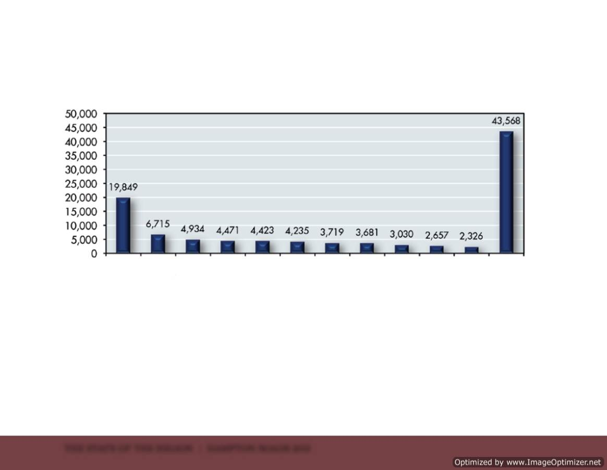
THE STATE OF THE REGION | HAMPTON ROADS 2013
92
GRAPH 1
CHANGES IN THE NUMBER OF FOREIGN-BORN RESIDENTS OF HAMPTON ROADS BY ORIGIN BETWEEN 2000 AND 2011
Sources: 2007-2011 American Community Survey 5-year estimates, at http://factfinder2.census.gov/, and U.S. Census data (2000), at http://factfinder.census.gov
South Korea
China
Philippines
Mexico
Ger
many
United Kingdom
India
Vietnam Canada Jamaica
El Salvador
Other
ASIAN INDIANS IN HAMPTON ROADS
93
Asian Indian Immigration:
A Brief History
The successes of the Asian Indian community are all the more remarkable given
that before 1965, very few people of Asian Indian ancestry lived in Hampton
Roads – or for that matter, anywhere else in the United States. The chief reason
for this was a U.S. immigration policy that blatantly discriminated against Asians
and other non-European groups.
A first, small cohort of Indian immigrants came to the United States in the early
years of the 20th century. Beginning in 1907, around 6,400 migrants from the
Indian subcontinent arrived on the U.S. West Coast. They were overwhelmingly
young men from the Punjab region with little or no education. They came to
earn money as agricultural laborers; most did not intend to settle permanently.
In any case, this would have been difficult, as federal and state laws forbade
Indian migrants from owning property, marrying white women or becoming
naturalized U.S. citizens. The Immigration Law of 1917 stopped new arrivals
from India altogether. Census data indicate that by 1940, only 2,405 Asian
Indians remained in the U.S. “Their educational level,” writes historian Ronald
Takaki, “was the lowest of all racial and ethnic groups reported in the census:
the median number of school years completed by Asian Indians was only 3.7”
(“Strangers from a Different Shore: A History of Asian Americans,” 1998,
p. 314).
World War II was an important turning point in the history of Asian Indians in
the U.S. Overt racism gradually became less frequent in American society and
the nation’s immigration policy changed to reflect this. U.S. lawmakers sought to
acknowledge Asian Indians’ contribution to the Allied war effort, and to show
support for the newly independent Indian democracy. Asian Indians gained
naturalization rights, and a new immigration quota allowed as many as 12,000
Asian Indians to enter the U.S. between 1947 and 1965.
However, the key watershed was the Immigration and nationality Act of 1965.
This legislation eliminated existing immigration restrictions based on national
origin, replacing them with a tiered preference system based on the principle
of “family reunification” and the needs of U.S. employers. Scientists, engineers
and other professionals, particularly those with skills to support emerging high-
tech industries, were among those who benefited most from the new immigration
policy. These highly skilled professionals, and their families, came to define the
new wave of Asian Indian immigration that commenced in the final third of the
20th century.
Asian Indians quickly became and have remained one of the country’s fastest-
growing immigrant groups: “The number of new Asian Indian immigrants
skyrocketed from 467 in 1965 to 8,795 in 1970. Between 1971 and 1980,
164,134 Asian Indians were admitted, followed by another 250,786 between
1981 and 1990” (Roli Varma, “Harbingers of Global Change: India’s Techno-
Immigrants in the United States,” 2006, p. 21).
Asian Indians were well positioned to benefit from the post-1965 change
in immigration policy for a number of reasons, including English language
proficiency (a legacy of British colonial rule) as well as a strong cultural
emphasis on math and science achievement. The educational, economic
and professional opportunities offered by the United States have been highly
attractive to Asian Indian émigrés. Many Asian Indians (particularly young men)
came to pursue graduate study in the U.S., later converting their temporary
THE STATE OF THE REGION | HAMPTON ROADS 2013
94
status into permanent residency and bringing along spouses, children and other
family members.
The H-1B visa program, which was introduced in 1990, has brought more
Indians to American workplaces in the past quarter century. H-1B visas allow
highly skilled foreign workers in “specialty occupations” to live and work in the
U.S., with an employer’s sponsorship, for up to six years. The great majority of
all H-1B visas are issued in the IT sector; most often they go to citizens of India.
Of the nearly 130,000 H-1B visas issued in 2011, more than half (72,438)
went to workers of Indian nationality (see Table 2). Several of the IT companies
that consistently sponsor the most workers on H1-B visas – including Infosys,
Wipro and Tata Consultancy Services – are themselves based in India.
Today, more than 3 million people of Asian Indian ancestry live in the United
States, comprising approximately 1 percent of the entire U.S. population.
Who Are Hampton Roads’
Asian Indians?
Hampton Roads is home to a substantial Asian Indian community – close to
7,000 people, according to Pew and U.S. Census figures. The greatest number
(2,274) live in Virginia Beach, while Williamsburg and York County boast the
highest proportion (just over 1 percent) of Asian Indians in their populations,
possibly due to the influence of the College of William & Mary and nASA
Langley Research Center, and the hotel industry (see Table 3). A review of Graph
1 reveals that among Hampton Roads’ foreign-born population, India is the sixth-
most influential place of origin, behind the Philippines, Mexico, South Korea,
Germany and the United Kingdom. U.S. Census figures suggest that the Asian
Indian-born population of Hampton Roads has more than doubled in the past
decade – the fastest rate of growth among all Asian subgroups in our region.
The Asian Indian community of Hampton Roads is the third largest in the
Commonwealth of Virginia, behind northern Virginia and the Richmond
metropolitan area. (By a wide margin, the highest concentration of Asian
Indians – 47,544 – live in Fairfax County.) Census figures show that Virginia
residents of Asian Indian descent are younger and more likely to live in a
married-couple household with children than Virginia’s population at large.
nearly 78 percent of Virginia’s Asian Indians over the age of 25 possess a
bachelor’s degree or higher, compared to nearly 34 percent of the general
population in the same age group. Table 4 discloses that more than half (52.5
percent) of Virginia’s Asian Indian households earn $100,000 or more per year,
compared to 27.6 percent of all Virginia households. Graph 2 illustrates these
income differences as well as the impressive educational attainment of Asian
Indians in the Commonwealth.
TABLE 2
H-1B VISAS ISSUED, UNITED STATES, FY 2011
India
72,438
China - mainland
10,849
United Kingdom
3,660
South Korea
3,501
Mexico
2,647
Philippines
2,369
France
2,069
Japan
2,054
China - Taiwan
1,705
Germany
1,627
Other
26,215
TOTAL
129,134
Source: Pew Research Center, “The Rise of Asian Americans,” p. 27, at:
www.pewsocialtrends.org/files/2013/01/SDT_Rise_of_Asian_Americans.pdf
ASIAN INDIANS IN HAMPTON ROADS
95
TABLE 3
THE ASIAN AMERICAN POPULATION: HAMPTON ROADS, VIRGINIA AND THE U.S. (2010)
Asian
Indian
Chinese (except
Taiwanese)
Filipino
Japanese
Korean
Vietnamese
Total Population
Total Asian
Population
Asian Share
of Population
Asian Indian
Share of
Population
Chesapeake
986
825
4,583
648
803
616
222,209
9,136
4.11%
0.44%
Currituck County (N.C.)
16
23
151
35
32
6
23,457
282
1.20%
0.07%
Franklin
13
18
24
6
14
21
8,582
102
1.19%
0.15%
Gloucester County
33
82
111
63
60
27
36,858
463
1.26%
0.09%
Hampton
332
437
1,267
369
496
888
137,436
4,490
3.27%
0.24%
Isle of Wight County
22
63
161
61
84
19
35,270
477
1.35%
0.06%
James City County
315
350
500
190
448
104
67,009
2,186
3.26%
0.47%
Mathews County
8
9
21
3
11
4
8,978
60
0.67%
0.09%
Newport News
569
616
2,194
614
1,608
672
180,719
7,438
4.12%
0.31%
Norfolk
963
1,163
6,326
488
580
528
242,803
10,999
4.53%
0.40%
Poquoson
46
71
59
37
92
15
12,150
346
2.85%
0.38%
Portsmouth
131
191
826
98
106
127
95,535
1,658
1.74%
0.14%
Southampton County
18
3
27
2
5
2
18,570
73
0.39%
0.10%
Suffolk
259
261
756
147
260
165
84,585
1,997
2.36%
0.31%
Surry County
12
4
9
4
4
0
7,058
40
0.57%
0.17%
Virginia Beach
2,274
2,842
22,092
1,609
1,802
2,097
437,994
34,647
7.91%
0.52%
Williamsburg
208
279
99
50
203
59
14,068
1,026
7.29%
1.48%
York County
658
663
716
323
1,206
272
65,464
4,286
6.55%
1.01%
Hampton Roads
6,863
7,900
39,922
4,747
7,814
5,622
1,698,745
79,706
4.69%
0.40%
Virginia
114,471
68,707
90,493
20,138
82,006
59,984
8,001,024
534,561
6.68%
1.43%
United States
3,183,063
3,794,673
3,416,840
1,304,286
1,706,822
1,737,433
308,745,538
17,941,286
5.81%
1.03%
Sources: Pew Research Center, at www.pewsocialtrends.org/asianamericans-maps, and American Fact Finder, at http://factfinder2.census.gov
THE STATE OF THE REGION | HAMPTON ROADS 2013
96
TABLE 4
SELECTED SOCIAL AND ECONOMIC CHARACTERISTICS OF ASIAN INDIANS IN VIRGINIA (ALONE OR IN ANY COMBINATION)
Households by Type
Asian Indians
Total Population
Total households
34,428
2,974,481
Percent married-couple family
70.5%
51.1%
Percent male householder, no wife present, family
2.4%
4.1%
Percent female householder, no husband present, family
3.7%
12.0%
Percent nonfamily households
23.5%
32.8%
Percent households with one or more people under 18 years
47.7%
33.7%
Percent households with one or more people 65 years and over
10.3%
22.4%
Average household size
2.99
2.56
Educational Attainment
Population 25 years and over
67,727
5,208,536
Percent high school graduate or higher
93.9%
86.1%
Percent bachelor’s degree or higher
77.7%
33.8%
Place of Birth
Total population
103,348
7,841,754
Percent foreign-born
69.1%
10.8%
Employment Status
Civilian labor force
57,190
4,065,244
Percent unemployed
4.3%
5.9%
Industry
Civilian employed population 16 years and over
54,730
3,824,131
Agriculture, forestry, fishing and hunting, and mining
0.1%
1.1%
Construction
1.3%
7.5%
Manufacturing
3.0%
8.2%
Wholesale trade
0.9%
2.2%
Retail trade
9.3%
10.8%
Transportation and warehousing, and utilities
3.7%
4.2%
Information
4.9%
2.5%
ASIAN INDIANS IN HAMPTON ROADS
97
TABLE 4
SELECTED SOCIAL AND ECONOMIC CHARACTERISTICS OF ASIAN INDIANS IN VIRGINIA (ALONE OR IN ANY COMBINATION)
Finance and insurance, and real estate and rental and leasing
10.5%
6.7%
Professional, scientific, and management, and administrative and waste
management services
36.1%
14.2%
Educational services, and health care and social assistance
15.8%
20.3%
Arts, entertainment, and recreation, and accommodation and food services
6.5%
8.0%
Other services, except public administration
2.1%
5.2%
Public administration
5.8%
9.0%
Income and Benefits (In 2010 Inflation-Adjusted Dollars)
Total households
34,428
2,974,481
Percent earning $24,999 or less
6.8%
18.8%
Percent earning $25,000 to $49,999
9.3%
22.1%
Percent earning $50,000 to $74,999
15.3%
18.3%
Percent earning $75,000 to $99,999
16.2%
13.2%
Percent earning $100,000 to $149,999
26.1%
14.9%
Percent earning $150,000 to $199,999
12.2%
6.4%
Percent earning $200,000 or more
14.2%
6.3%
Median household income
$101,829
$61,406
Source: 2006-2010 American Community Survey Selected Population Tables, at: http://factfinder2.census.gov/
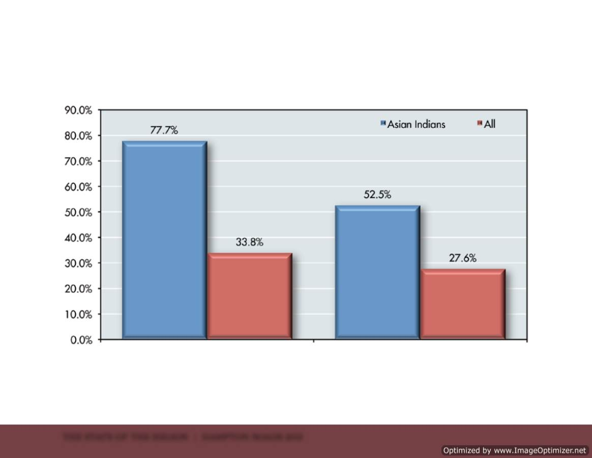
THE STATE OF THE REGION | HAMPTON ROADS 2013
98
GRAPH 2
COMPARING THE EDUCATIONAL ATTAINMENT AND INCOMES OF ASIAN INDIANS IN VIRGINIA TO ALL OTHER VIRGINIANS
Percentage of individuals 25+ years who held a
bachelor’s degree or higher in 2010
Percentage of households that earned $100K or
more in 2010
ASIAN INDIANS IN HAMPTON ROADS
99
Census figures show that more than one-third (36.1 percent) of Virginia’s
Asian Indians are employed in the professional and scientific services sector,
followed by 15.8 percent in educational services and health care. Hampton
Roads universities and medical centers employ many of the Asian Indians in
our region; another influential contingent works in the engineering and IT fields.
Asian Indians occupy yet another niche in our regional economy as small-
business owners; they own or operate numerous restaurants, convenience stores
and hotels across Hampton Roads. According to a recent estimate from the
coordinators of Taste of India, an annual celebration held on the Old Dominion
University campus, Indian Americans own at least 90 hotels and 60 small retail
businesses locally.
The members of Hampton Roads’ Asian Indian community reflect the diversity
of India itself, which consists of 28 different states and seven union territories.
Hundreds of languages and dialects are spoken throughout India. Although
Hindi and English are used countrywide, each state has its own set of officially
recognized languages. For Asian Indians in Hampton Roads, therefore, English
is not merely the language of their adopted home country, but it is also a
common language of understanding among other émigrés. While Hampton
Roads’ Asian Indians hail from all regions of the subcontinent, an especially
large number have family ties to the western state of Gujarat, and are native
speakers of Gujarati. Any gathering of Asian Indians in Hampton Roads is likely
to include families with common Gujarati surnames, such as Patel and Shah.
The Pew Research Center survey suggests that nationwide, Asian Indians lean
toward the Democratic Party politically. Our own informal online survey, which
was completed by 94 members of Hampton Roads’ Asian Indian community,
returned similar results (see Table 5). Hampton Roads’ Asian Indians have been
notably active in the political arena as financial donors. Indeed, one measure
of this community’s substantial political and economic clout is the turnout of
prominent elected officials at Hampton Roads’ largest Asian Indian gatherings.
Senators Tim Kaine and Mark Warner both made formal appearances at Taste
TABLE 5
VALUES AND ATTITUDES OF ASIAN INDIANS IN THE U.S. AND HAMPTON ROADS
U.S.
Total
U.S.
Asians
U.S. Asian
Indians
Hampton Roads
Asian Indians
Percent saying they are satisfied with their lives today
75%
82%
84%
93%
Percent saying they are satisfied with the way things are going in this country today
21%
43%
47%
45%
Percent rating their personal financial situation as “excellent” or “good”
35%
51%
67%
82%
Percent saying “Most people who want to get ahead can make it if they’re willing to work hard”
58%
69%
75%
82%
Percent saying being a good parent is one of the most important things in their lives
50%
67%
78%
93%
Percent saying helping other people in need is one of the most important things in their lives
20%
28%
32%
32%
Percent saying they have personally experienced discrimination or been treated unfairly in the
past 12 months because they are Asian/Asian Indian)
nA
19%
18%
23%
Percent saying they consider themselves a Republican in politics today
26%
18%
10%
14%
Percent saying they consider themselves a Democrat in politics today
32%
33%
44%
46%
Percent saying they consider themselves an independent in politics today
36%
34%
34%
21%
Sources: for U.S. data: Pew Research Center, “The Rise of Asian Americans,” at: www.pewsocialtrends.org/files/2013/01/SDT_Rise_of_Asian_Americans.pdf; for Hampton Roads data: Informal online survey taken by 94 members of
Hampton Roads’ Asian Indian community (April-May 2013)

THE STATE OF THE REGION | HAMPTON ROADS 2013
100
of India in April 2013; Congressmen Scott Rigell and Bobby Scott attended
India Fest, another area celebration, in September 2012.
The U.S. India Political Action Committee (USInPAC) is not explicitly partisan,
but was established in 2002 to present a unified political voice among
Asian Indians, and to “impact policies that concern the Indian-American
community”(www.usinpac.com/home/about-usinpac).
In addition to supporting Asian Indian political candidates, USInPAC has been
most active in promoting U.S.-India relations as well as immigration and visa
reforms. nationwide, a growing number of second-generation Asian Indians
have run successfully for office; Governors nikki Haley of South Carolina and
Bobby Jindal of Louisiana (both Republicans) are notable examples. This spring,
Aneesh Chopra ran for lieutenant governor of Virginia as a Democrat. Although
he was defeated in the primary election, he holds the distinction of being the
Commonwealth’s first Asian Indian to seek statewide office.
nearly all of the long-standing Asian Indian residents of Hampton Roads with
whom we spoke commented on the remarkable growth of the region’s Indian
community and community infrastructure within the past decades. Community
leader Jagdish Singh recalled in a Virginian-Pilot article that when she and
her husband moved to the area in 1967, there were “only three other Indian
families in all of Hampton Roads” (Megan Hoyer, The Virginian-Pilot, Feb. 5,
2011).
Saileela Venkatesan told us about the shopping trips to the Washington, D.C.,
area that she and other families coordinated in the 1970s because there were
no local stores that specialized in Indian groceries. Swagat Indian Spices and
Specialties opened on Aragona Boulevard in Virginia Beach 25 years ago, and
today numerous Indian and international grocery stores can be found throughout
Hampton Roads. nawab on Military Highway in norfolk became the region’s
first Indian restaurant in 1992. Owner Ashok Arora has since opened additional
locations in Virginia Beach, Williamsburg and newport news. Today, the
nawab restaurants are joined by many other establishments throughout the
region that serve Indian cuisine.
The Pew survey findings indicate that 84 percent of Asian Indians nationwide
are satisfied with their lives today; an impressive 93 percent of the participants
in our informal survey responded the same way (see Table 6). The first- and
second-generation Asian Indians with whom we spoke seemed pleased overall
with their lives in Hampton Roads. Many told us that they appreciated that
the Asian Indian community here was vibrant and active, but not oppressively
so. There is no one neighborhood or locality where an overwhelming number
of Indians have chosen to live; the degree of assimilation with the rest of the
population is high. Several people told us they appreciated the mild climate
in Hampton Roads, compared to regions farther north. Others mentioned that
Hampton Roads’ proximity to other East Coast Indian communities – particularly
new York/new Jersey and the greater Washington, D.C., area – meant that
close friends and family members were not far away.
Are Asian Indians subject to discrimination here in Hampton Roads? A minority
(23 percent) of our online survey respondents indicated that they had personally
experienced discrimination or been treated unfairly in the past 12 months
because they were Indian or of Indian ancestry. Reflecting on this result, a
younger member of the regional community stated, “Even though 23 percent
say they have faced discrimination, I was surprised to see such a huge figure,
since in my four years in Hampton Roads, I have never been a victim of
discrimination. I have faced discrimination in new York and Chicago, but never
in Hampton Roads.”
In person, a few members of the Asian Indian community in Hampton Roads
suggested to us that a greater problem has been Indians discriminating
among themselves – referring to the social, religious and ethnic distinctions
that sometimes can create a sense of division in Asian Indian communities.
Overall, however, there seems to be a broad consensus that the relatively small
and geographically dispersed Asian Indian population in Hampton Roads,
compared with those in larger urban areas, has tended to enhance cooperation
among those whose families originally came from different backgrounds in
India.
ASIAN INDIANS IN HAMPTON ROADS
101
Institutions
Hampton Roads is home to several institutions that provide focal points for
the Asian Indian community. These organizations work cooperatively with
one another and have, in many cases, overlapping constituencies. They are
distinguished by a generous commitment to charitable giving that has benefited
scholarship funds and other worthy causes in our region and beyond. The
groups’ representatives emphasize that they welcome the participation of not just
Asian Indians, but all members of the broader Hampton Roads community.
ASIAn InDIAnS OF HAMPTOn ROADS
The most long-standing of these organizations is Asian Indians of Hampton
Roads (AIHR), which was established in the 1970s as Asian Indians
of Tidewater. As summarized to us by AIHR President Mohit Gour, the
organization’s purpose is twofold: to provide support and a point of connection
for the region’s Asian Indians, and to raise awareness and promote India’s
cultural heritage throughout Hampton Roads. AIHR currently has around 70
formal members, exerting a broader influence through its sponsored events and
participation in other community initiatives.
AIHR’s signature event is the Republic Day commemoration, held in honor of
the adoption of India’s constitution on Jan. 26, 1950. This smaller-scale event,
also in its 17th year, usually includes a panel discussion to address political and
economic issues that concern India and U.S.-India relations. nirupama Rao, the
Indian ambassador to the United States, participated in the most recent Republic
Day event at the Hindu Temple and Community Center in Chesapeake.
SITES OF RELIGIOUS GATHERInG: THE HInDU TEMPLE AnD
COMMUnITY CEnTER OF HAMPTOn ROADS, THE BAPS SHREE
SWAMInARAYAn MAnDIR AnD THE GURUDWARA SAHIB
Approximately 80 percent of the population of the Republic of India today
are followers of Hinduism. Muslims comprise the next-largest religious group,
followed by Christians, Sikhs, Buddhists, Jains, Zoroastrians and others. This
diversity has enriched the religious landscape of Hampton Roads, where Asian
Indian followers of all these world religions now reside.
The Hindu Temple and Community Center of Hampton Roads, located on
Dominion Boulevard in Chesapeake, is the largest religious gathering point for
Asian Indians in our region. A first temple opened on the site in 1991; after
an accidental fire three years later, the current facility was constructed and
has been in use since 1997. The organization’s website states that “the Hindu
religion is not simply a religion of rituals, since it integrates culture and religion
into our daily lives and our Temple Complex will provide a focal point for the
religious as well as the cultural activities of our community” (Ram C. Dahiya, “A
Brief History of the Hindu Temple of Hampton Roads,” www.hindutemplehr.org/
about-temple).
The temple is open every day for religious observances and a wide array of
other group meetings and activities. The temple sponsors dance classes, a
cricket club, a group for seniors known as Jeevan Sandhya Mandal and cultural
classes for children. Yoga therapy classes each Sunday morning attract area
residents who are not necessarily practicing Hindus. The celebration of major
Hindu festivals like Diwali and Holi are well-attended highlights of the temple’s
calendar.
Another Hindu site of worship is the BAPS Shree Swaminarayan Mandir, located
on Jefferson Avenue in newport news. BAPS, short for Bochasanwasi Shri
Akshar Purushottam Swaminarayan Sanstha, is a worldwide organization with
roots in the Indian state of Gujarat.
The center of Hampton Roads’ Sikh community is Chesapeake’s Gurudwara
Sahib. The Gurudwara is sponsored by the Guru nanak Foundation of
Tidewater, named after the first Sikh prophet. The Gurudwara was constructed
in 2006; before then, Sikh gatherings were held throughout the region in
private homes or other temporary facilities. Community representative Surinder
Dhillon estimates that Hampton Roads is now home to approximately 100 Sikh
families, many of whom emigrated from India’s Punjab region. The Gurudwara’s
regular Sunday services attract families from as far away as Williamsburg to
the north, and Elizabeth City to the south. Universal equality and service to the
community are among the doctrines emphasized in Sikhism. As such, Hampton

THE STATE OF THE REGION | HAMPTON ROADS 2013
102
Roads’ Sikhs have been active participants in regional interfaith initiatives and
charitable causes that assist the less fortunate. Since 2011, the Guru nanak
Foundation has sponsored an annual “Fun for Everyone Day” with Indian cuisine
and activities for all ages on the grounds of the Gurudwara.
AAPI – HAMPTOn ROADS
Asian Indians are well represented in our region’s medical community. The
2013 Taste of India program listed 146 physicians of Indian origin who
practice medicine in Hampton Roads. Eighty-two are identified as current or
recent active members of AAPI, the Association of American Physicians of Indian
Origin. AAPI is a nationwide organization, founded in 1982, that provides
a networking forum for its members “to excel in patient care, teaching and
research and to pursue their aspirations in professional and community affairs”
(http://aapiusa.org/about/mission.aspx). Both first- and second-generation
Asian Indians are active in the Hampton Roads chapter; they represent a wide
spectrum of medical specialties and regional backgrounds.
Since 2010, AAPI-HR has sponsored an annual charity gala at the Half Moone
Cruise and Celebration Center in downtown norfolk. The event was motivated
by members’ desire to give back to the Hampton Roads community. In 2011,
outgoing chapter president Rajnish Dhawan told The Virginian-Pilot that “we all
treat patients almost every day, and we see the underprivileged in the hospitals.
… The whole idea was: If we can collect funds, we can promote free clinics
and help the untreated population” (Gary Ruegsegger, The Virginian-Pilot, Feb.
11, 2011). Current chapter president Pramod Malik reports that the galas have
raised more than $300,000 for area clinics and an Eastern Virginia Medical
School scholarship over the past four years. (We’ve also heard that the galas
are great fun to attend.)
TASTE OF InDIA
The largest single gathering of Asian Indians in our region is Taste of India,
an annual celebration that has been held at Old Dominion University’s Ted
Constant Convocation Center each April since 2007. In that year, a group of
local businesspeople, inspired by Richmond’s long-standing Festival of India,
committed the seed money to establish a similar tradition in Hampton Roads.
The intent was, as explained to us by event co-organizer Vinod Agarwal, to
create a great show and provide the regional community with a “taste of India”
without having to fly there. In this, Taste of India’s organizers have certainly
succeeded. The all-day festival features cuisine from area restaurants, shopping
opportunities, children’s activities and a full schedule of live entertainment,
including Indian classical and Bollywood dance performances. A collegiate
bhangra competition draws dancers from throughout Virginia and beyond.
Around 7,500 people attended Taste of India 2013.
Proceeds from Taste of India have benefited free clinics and other nonprofit
organizations in our region, including Children’s Hospital of The King’s
Daughters, the Food Bank of Southeastern Virginia and the Old Dominion
University Educational Foundation. This year, a $5,000 Taste of India/AAPI
Scholarship was awarded to Granby High School senior Anne Mugpayo.
ASIAN INDIANS IN HAMPTON ROADS
103
Final Comments
Asian Indians in Hampton Roads are distinctive. They are well educated, earn
higher-than-average incomes and increasingly wield a modicum of political
clout because of their fundraising for political races. As already noted, for the
first time, an Asian Indian, Aneesh Chopra from northern Virginia, ran for
a statewide office (lieutenant governor). Chopra was the Commonwealth’s
secretary of technology and subsequently was appointed as the United States’
chief technology officer by President Barack Obama. By contrast, most other
Asian American ethnic groups generally have eschewed political activity. Asian
Indians, however, understand the corridors of power in the U.S. and now
exercise considerable influence in matters political.
Asian Americans sometimes are referred to as the “model” ethnic group in this
country. Asian Indians in turn sometimes are labeled the “model group of the
model group.” The impressive achievements of Asian Indians in Hampton Roads
reflect what one member of the regional community aptly characterizes as the
“tenacity, flexibility and peaceable nature of Indians, who have been able to
adapt and thrive in a foreign country.”
True, there is considerable self-selection involved in the representation of Asian
Indians we see in Hampton Roads; they are not fully representative of their home
country. Even so, their sparkling achievements in Hampton Roads can only be
applauded. Their impressive accomplishments vastly exceed their numbers. We
are fortunate to have them in our midst.

Virtual Education
at the K-12 Level
in Hampton Roads

THE STATE OF THE REGION | HAMPTON ROADS 2013
106
vIrtual eduCatIon at tHe K-12 level
In HaMpton roads
Online learning at the K-12 level has grown from a novelty to a movement.
– Gene V. Glass and Kevin G. Welner, “Online K-12 Schooling in the U.S.:
Uncertain Private Ventures in need of Public Regulation” (Boulder: national Education Policy Center, 2011)
O
nline education has received the most attention at the collegiate level. Some MOOCs (massively open online classes) enroll 160,000 or more
students. Less attention has been given to online (“virtual”) education at the K-12 level. We do so in this chapter and, in the process, focus on what
has been happening in online education in Hampton Roads. Online education is transforming the experience of public, private and
homeschool students alike.
The number of elementary and secondary students now participating in
some kind of formal online education, either full- or part-time, is unknown. All
indicators show, however, that their ranks are growing rapidly. A survey by the
national Center for Education Statistics (nCES) revealed that 55 percent of
all public school districts had students that were enrolled in distance education
courses in 2009-10. Almost three-quarters (74 percent) of these districts planned
to expand their distance education course offerings within the next three years
(see Table 1). A more recent report, “Keeping Pace With K-12 Online &
Blended Learning” (2012), estimated that 275,000 U.S. students attended fully
online schools in 2012-13; this reflected a 15 percent annual rate of increase
over the past several years.
1
Virginia is among those states accelerating the pace of growth. Virtual
education has been a centerpiece of Gov. Bob McDonnell’s “Opportunity to
Learn” education reform agenda. In April 2010, the governor signed legislation
to develop criteria for virtual school programs in Virginia, and 13 such programs
were formally approved as “multidivision online providers” the following year.
Also in 2011, the Virginia Council for Private Education (VCPE), the body
responsible for monitoring private school accreditation in the Commonwealth,
1
“Keeping Pace With K-12 Online & Blended Learning” (Evergreen Education Group, 2012), p. 5, at:
http://kpk12.com/reports
assembled its first list of “state-recognized virtual private schools” (see Table 2).
Beginning with the 2013-14 school year, every Virginia public
school student entering the ninth grade will be required to
complete at least one online course in order to graduate. Only
four other states (Alabama, Florida, Idaho and Michigan) have a comparable
online learning requirement.
McDonnell has stated that “the expansion of virtual school programs in Virginia
will enable students all across the state to receive the services of highly qualified,
Virginia-certified teachers without being limited by classroom walls.”
2
He and
other like-minded reformers note that virtual schools allow students to enroll
in specialized courses – such as oceanography or Chinese – that otherwise
might not be available to them. The nature of online education encourages
participants to work at their own pace, an attractive feature for both high-
achieving and special-needs students as well as others who may have struggled
in a traditional classroom environment. What’s more, students in Virginia’s most
rural localities can access these services as freely as those in the population
hubs of Hampton Roads, Richmond or northern Virginia. From this perspective,
2
www.education.virginia.gov/news/viewRelease.cfm?id=109

VIRTUAL EDUCATION AT THE K-12 LEVEL IN HAMPTON ROADS
107
virtual learning potentially represents a revolutionary, democratizing force in
K-12 education.
not all observers are so optimistic. Critics suggest that the promise of virtual
learning, particularly at the youngest grade levels, remains largely untested.
They point out that virtual learning works well for some students but not for
others, and they suggest that not all of the skills and competencies associated
with K-12 education are best conveyed online. A further set of concerns has to
do with the finances of online education, a lucrative and fast-growing field that
is currently dominated by a handful of large, for-profit companies. Initiatives such
as Digital Learning now! (www.digitallearningnow.com) are backed by online
learning providers and other software and tech companies that stand to profit
handsomely through the expansion of virtual schooling. Thus, many observers
have argued for caution before shifting resources away from traditional teacher-
student engagement in bricks-and-mortar classrooms.
Virtual education is a moving target; its “rules” in Virginia and elsewhere are
still being written. Thus far, the enthusiasm for online learning has not always
been accompanied by a comparable degree of accountability or transparency.
Surprisingly little data are available to document the participation or academic
performance of Virginia’s virtual students. This chapter provides a snapshot of
K-12 virtual education in Hampton Roads in 2013, using the best available
information at this point.
TABLE 1
DISTANCE EDUCATION COURSES FOR PUBLIC ELEMENTARY AND SECONDARY SCHOOL STUDENTS: 2009-10
Percentage of public school districts with any students enrolled in distance education courses
55%
Of these 55% of public school districts…
Percentage with students enrolled in distance education courses at the:
High school level
96%
Middle school level
19%
Elementary school level
6%
Percentage indicating that students who were enrolled in regular high school programs were able to take a full
courseload in an academic term using only distance education courses
22%
Percentage indicating that students can fulfill all high school graduation requirements using only distance
education courses
12%
Percentage that were planning to expand the number of distance education courses offered in the next three
years
74%
Percentage indicating that various entities delivered the distance education courses in which students in their district were enrolled:
Postsecondary institution in the U.S.
50%
Independent vendor in the U.S.
47%
Online charter school administered by their district
4%
Source: national Center for Education Statistics (november 2011), at: http://ies.ed.gov/pubsearch/pubsinfo.asp?pubid=2012008
THE STATE OF THE REGION | HAMPTON ROADS 2013
108
TABLE 1
DISTANCE EDUCATION COURSES FOR PUBLIC ELEMENTARY AND SECONDARY SCHOOL STUDENTS: 2009-10
Percentage of public school districts with any students enrolled in distance education courses
55%
Of these 55% of public school districts…
Percentage indicating that various entities delivered the distance education courses in which students in their district were enrolled:
Other schools administered by their district
6%
Their district
18%
Another local school district, or schools in another district, in their state
21%
Education service agencies within their state
16%
State virtual school in their state
33%
State virtual school in another state
6%
Districts or schools in other states
3%
non-U.S.-based public or private entity
1%
Percentage indicating the types of distance education courses taken by students regularly enrolled in their district:
Advanced placement
29%
Dual enrollment: College-level courses for which students receive both high school and college credits
47%
Credit recovery: Opportunities allowing students to recover course credits from classes they have missed or failed
62%
Career and technical education
27%
Other types of academic courses
65%
Percentage distribution indicating the primary mode of technology for instructional delivery used in distance education courses
taken by students regularly enrolled in their district:
Internet courses using synchronous instruction: Simultaneous or “real-time” instruction
14%
Internet courses using asynchronous instruction: Instruction not occurring in “real-time”
63%
Computer-based technologies other than the Internet: E.g., district network, CD-ROM
5%
Two-way interactive video: Two-way video with two-way audio
17%
One-way prerecorded video
2%
Source: national Center for Education Statistics (november 2011), at: http://ies.ed.gov/pubsearch/pubsinfo.asp?pubid=2012008

VIRTUAL EDUCATION AT THE K-12 LEVEL IN HAMPTON ROADS
109
TABLE 2
STATE-RECOGNIzED VIRTUAL PRIVATE SCHOOLS
School Name/Location/URL
Accreditation
Grades
Approximate annual
tuition (high school,
full-time)
Owned/
operated by
Allied National High School
Laguna Hills, CA
www.alliedhighschool.com
AdvancED
Grades 9 - 12
$3,350
Allied Business
Schools Inc. (FP,
privately held)
EdOptions Online Academy
Falls Church, VA
www.edoptionsacademy.com
AdvancEd
Grades 7 - 12
not posted
Edmentum Inc. (FP,
owned by private
equity firm Thoma
Bravo, LLC)
Griggs International Academy
Berrien Springs, MI
www.griggs.edu
AdvancEd
Grades K - 12
$2,400
Seventh-Day Adventist
Church (nFP)
K12 International Academy
Herndon, VA
www.k12.com/int
AdvancEd
Grades K -12
$6,995
K12 Inc. (FP, publicly
traded)
Liberty University Online Academy
Lynchburg, VA
http://libertyonlineacademy.com
AdvancEd
Grades 3 - 12
$4,950
Liberty University
(nFP)
National High School
Duluth, GA
http://nationalhighschool.com
AdvancEd
Grades 9 - 12
$199 per month
A unit of Gwinett,
Ga., County Public
Schools
Sources: Provider websites and the Virginia Council for Private Education, at: www.vcpe.org
THE STATE OF THE REGION | HAMPTON ROADS 2013
110
Background And Definitions
The concept of “distance education,” a mode of instruction in which teachers
and students are not in the same location, has existed for many years. Written
correspondence courses once dominated the field. In the mid-20th century,
schools and universities adopted radio and television as a means to transmit
lectures and other information to students across long distances. In the 1990s,
the Internet dramatically expanded the possibilities of distance education, as the
first fully online courses and schools began to coalesce.
The 2012 “Keeping Pace” report defines online learning as “teacher-led
education that takes place over the Internet, with the teacher and student
separated geographically, using a web-based educational delivery system that
includes software to provide a structured learning environment.”
3
Online learning
courses are further distinguished either by “synchronous” or “asynchronous”
methods of student-teacher interaction (or both). Synchronous communication
might include online video, telephone calls or other means of interacting in real
time. Online courses that include the most synchronous communication generally
require teachers and students to interact live at a regular, given time – not unlike
traditional classroom sessions or office hours held outside the virtual world.
Asynchronous communication includes email, blogs, posted announcements and
online discussion forums. An example of a synchronous method is Old Dominion
University’s Teletechnet system, which disseminates live televised courses to
students throughout Virginia, the U.S. and around the world. Course providers
typically promise a given turnaround time (such as 24 hours) for responding to
student or parent inquiries, and for grading and returning student work.
Reviewing Table 1, one can see that there are many different types of providers
of K-12 online education. In 2009-10, the greatest proportion of public school
districts indicated that their students’ distance learning courses were delivered
by “postsecondary institutions.” (Among Hampton Roads universities, Regent
University’s Early College Program is a well-established provider of online
courses to homeschoolers and upper-level high school students.) The next most
influential type of online provider identified in the 2009-10 survey included
independent vendors such as K12 Inc. and Connections Academy, the two
3
“Keeping Pace,” p. 7
largest providers in the United States today. For-profit businesses such as these
dominate the marketplace of full-time virtual schools.
A third important category of providers contains state virtual schools, which
include institutions such as the large and nationally prominent Florida Virtual
School, as well as our own Virtual Virginia. Virtual Virginia is a leading provider
of online courses to students enrolled in Hampton Roads’ public schools. Also
noteworthy are the numerous public school districts (including, in our region,
Virginia Beach, Chesapeake and York County) that have developed their own
online courses.
Online course providers offer an extensive menu of full-time
and part-time programs to address seemingly all conceivable
student needs. For better or worse, virtual learning has
become a go-to solution for students who don’t fit neatly in
the academic norm. Advanced Placement and dual enrollment
courses are an attractive option for high-achieving students,
who can enroll as a means of earning early college credit. At
the other end of the spectrum, “credit recovery” has become
a similarly influential market niche. Credit recovery courses allow
students to make up some or all of the work they didn’t master in a traditional
classroom setting – thereby providing an additional path for students to graduate
or advance to the next grade level. A tour through virtual school websites shows
that homeschoolers seeking additional enrichment as well as student-athletes
needing to pass nCAA-approved courses are likewise frequent (and frequently
sought-after) consumers of online education. Full-time virtual programs typically
require a supervising adult to play the role of “learning coach.” Particularly
at the youngest grade levels, this role can be substantive enough to require a
parental commitment not unlike that of homeschooling.
Online courses may be accessed in school, out of school, or both. Many online
providers tout mobile applications that allow students to access course material
nearly anywhere. Some bricks-and-mortar institutions provide computer lab
access – or actual computers or tablets – to their students that enroll in virtual
courses. Some online courses’ content is entirely electronic; other courses require
substantial outside reading, and still others, “off-screen” assignments. Online
courses can be used independently, or they can be integrated within a more
VIRTUAL EDUCATION AT THE K-12 LEVEL IN HAMPTON ROADS
111
traditional classroom experience; “blended learning” is the term used to describe
this combined approach.
In short, there has been a proliferation of ways that virtual education is
redefining the K-12 school experience. We’ll now look more closely at some of
the virtual initiatives that are most significant to Hampton Roads students.
Virtual Virginia
Virtual Virginia (www.virtualvirginia.org) is the state’s provider of distance
education. Its roots stretch back to the 1980s, when the Department of
Education created the Virginia Satellite Education network (VSEn) as a means
of offering Advanced Placement and world language courses to students across
the state. The program’s foremost goal was to provide rural and underserved
students with courses that otherwise might not have been offered in their districts.
Web-based course delivery was added in 2006, leading to the emergence of
today’s Virtual Virginia.
The 2012-13 Virtual Virginia catalog lists 65 different courses in the fine arts,
language arts, mathematics, social studies and world languages for students
at the middle school and high school levels. These courses are available to
public, private and homeschool students across the U.S., although Virginia
public school students take precedence. Virginia public students enroll through
their schools, which are responsible for providing any necessary textbooks and
supplies, as well as computer access. Participating schools must arrange for
a mentor to proctor tests, provide technical support and serve as a liaison for
the student, school and Virtual Virginia. Course fees (which are determined by
the Local Composite Index) are covered by the students’ local school divisions;
tuition for Virginia private and homeschool students is $500 per credit.
Virtual Virginia courses are taught asynchronously, with start and end dates that
adhere to public school calendars. A program brochure asserts that “all courses
are taught by skilled, highly qualified teachers who are fully certified in the
subject area and who are experienced in teaching in an online environment.
Instructors are available via toll-free phone numbers, e-mail, discussion forums,
and our virtual classroom tools.”
4
Virtual School Programs coordinator Cheri
Kelleher told us that the reach of Virtual Virginia (approximately 7,000 students
in 2012-13) has been extended by schools that use the Virtual Virginia learning
management system, but provide their own course instructors.
All Hampton Roads school divisions participated in Virtual
Virginia during 2011-12; there were 674 course enrollments.
As Table 3 discloses, enrollments were largest in rural divisions like Accomack
and York counties and large divisions such as Chesapeake and Virginia Beach.
Several of the school divisions we contacted indicated they would welcome
more Virtual Virginia course openings for their students. Enrollment is initially
capped at 15 students per school per course, with additional slots later made
available as space allows.
4
Virtual Virginia 2012-13 brochure, at: www.virtualvirginia.org/counselors/Virtual_Virginia_Brochure.pdf
THE STATE OF THE REGION | HAMPTON ROADS 2013
112
TABLE 3
VIRTUAL VIRGINIA COURSE ENROLLMENTS AMONG HRETA
SCHOOL DIVISIONS, 2011-12
Affiliation
Total
Arcadia High
22
Chincoteague High
17
nandua High
14
Tangier Combined
18
ACCOMACK COUnTY
71
Grassfield High
2
Great Bridge High
31
Greenbrier Middle
1
Hugo A. Owens Middle
3
Hickory High
3
Oscar F. Smith High
13
Western Branch High
3
CHESAPEAKE CITY
56
Franklin City High
8
FRAnKLIn CITY
8
Gloucester High
16
Page Middle
0
GLOUCESTER COUnTY
16
Bethel High
3
Kecoughtan High
9
Phoebus High
6
HAMPTOn CITY
18
Smithfield High
34
Windsor High
4
ISLE OF WIGHT COUnTY
38
Mathews High
35
TABLE 3
VIRTUAL VIRGINIA COURSE ENROLLMENTS AMONG HRETA
SCHOOL DIVISIONS, 2011-12
Affiliation
Total
MATHEWS COUnTY
35
Achievable Dream
4
Heritage High
9
Homer L. Hines Middle
2
J.M. Dozier
1
Menchville High
2
Warwick High
1
Woodside High
3
nEWPORT nEWS CITY
22
norview High
2
nORFOLK CITY
2
northampton High
8
nORTHAMPTOn COUnTY
8
Poquoson High
44
POQUOSOn CITY
44
Churchland High
33
I.C. norcom High
3
PORTSMOUTH CITY
36
Southampton High
34
SOUTHAMPTOn COUnTY
34
King’s Fork High
6
Lakeland High
4
SUFFOLK CITY
10
Sussex Central High
1
SUSSEX COUnTY
1
Bayside High
1
VIRTUAL EDUCATION AT THE K-12 LEVEL IN HAMPTON ROADS
113
TABLE 3
VIRTUAL VIRGINIA COURSE ENROLLMENTS AMONG HRETA
SCHOOL DIVISIONS, 2011-12
Affiliation
Total
First Colonial High
5
Floyd Kellam High
14
Frank W. Cox High
1
Landstown High
19
Ocean Lakes High
4
Princess Anne High
42
Salem High
1
Tallwood High
1
VIRGInIA BEACH CITY
88
Jamestown High
9
Lafayette High
9
Warhill High
13
WILLIAMSBURG-JAMES CITY
31
Bruton High
32
Grafton High
17
Queens Lake Middle
3
Tabb High
35
Tabb Middle
12
York High
50
York River Academy
2
Yorktown Middle
5
YORK COUnTY
156
HRETA TOTALS
674
Source: WHRO
THE STATE OF THE REGION | HAMPTON ROADS 2013
114
WHRO
Hampton Roads’ public media affiliate WHRO is a key facilitator of K-12 virtual
education in Virginia, beginning with its operation of Virtual Virginia, which it
offers by contract with the Department of Education. WHRO is Virginia’s only
public media affiliate that continues to offer unique educational services in
addition to radio and television programming. WHRO is further distinctive in
that it is owned and governed by a consortium of 19 public school systems
in the Hampton Roads region.
5
Through WHRO, Hampton Roads teachers
and students have access to an exceptionally rich menu of virtual education
resources. According to WHRO chief education officer Brian Callahan,
these resources played a significant role in Middlesex County’s decision
to join the consortium (formally known as the Hampton Roads Educational
Telecommunications Association, or HRETA) in July of this year.
WHRO, as Table 4 reveals, provides 22 online courses that
were developed cooperatively, beginning in 2007, with
its owner school divisions. All are aligned to the Virginia
Standards of Learning and updated annually. As described by
WHRO, the courses are “textbook independent, rich-media infused and modular
in nature to allow for maximum delivery flexibility.” Divisions may customize
the courses however they see fit – as a resource for independent study, as an
online course taught virtually to students in multiple locations or even as a kind of
electronic textbook in a traditional classroom.
According to WHRO, 1,396 students from 16 of its owner school divisions
participated in a WHRO online course in the 2012-13 school year (although
in many cases, the electronic course material was taught through face-to-
face instruction or a hybrid/blended approach). One can see in Table 4
that Hampton Roads students took 532 WHRO courses in the summer of
2012. These statistics are likely to grow given the new requirement that all
Virginia students entering the ninth grade must complete at least one online
course in order to graduate. WHRO courses are freely available to its owner
5
See the chapter on WHRO in the 2011 State of the Region report, at: www.odu.edu/forecasting/state-region-
reports/2011
school divisions, a perk that is unique to the Hampton Roads region. WHRO
does, however, offer the courses to other Virginia school divisions for a one-
time fee that ranges between $5,950 and $17,100 (dependent upon the
Commonwealth’s Local Composite Index for school funding). In a blunt but
persuasive pitch, WHRO marketing materials urge these divisions: “Invest once
in your online courses, or spend forever. It’s your call.”
WHRO provides local educators with two different digital media on-demand
services that may be used either in conjunction with online courses, or in
traditional classroom settings. Since 2002, WHRO has coordinated an
annual group purchase of Discovery Education Streaming (http://streaming.
discoveryeducation.com/) for all Virginia school divisions; this service offers
nearly 50,000 content clips that are correlated to the Standards of Learning.
The online learning library eMediaVA (www.emediava.org/) is owned and
operated by WHRO; it is free (upon registration) to all Virginia teachers and
students, including homeschoolers and those at private schools. eMediaVA is a
distribution platform for thousands of “digital learning objects” – self-contained
video, audio, interactive and/or graphic elements. It is likewise correlated
to the Standards of Learning and can be used for a variety of educational
purposes. According to eMediaVA, its content comes from PBS, nPR, nASA,
the Smithsonian Museums and “dozens of other nationally recognized sources.”
WHRO reports more than 685,000 regional views of Discovery Education
Streaming in 2011-12. Comparable statistics are not yet available for
eMediaVA.
Finally, it is worth noting that WHRO’s virtual education initiatives are not limited
to K-12 students. WHRO is the state coordinator for Virginia’s PBS Teacherline
(www.virginiateacherline.org), which offers online professional development
courses for teachers, enabling them to earn recertification points (and in some
cases, graduate credit at James Madison University). WHRO offers its own
professional development courses for teachers as well, including (appropriately)
Online Teaching Methodology. In 2011-12, 420 teachers from the HRETA-
owner schools registered for an online course through WHRO.
VIRTUAL EDUCATION AT THE K-12 LEVEL IN HAMPTON ROADS
115
TABLE 4
WHRO ONLINE COURSE USAGE DATA FOR 16 WHRO
OWNER-MEMBER SCHOOL DIVISIONS
Number of students enrolled in each course for
summer 2012:
Courses
Virtual
Hybrid/
Blended
Face-to-Face
Algebra I
3
Algebra II / Trig
2
Biology
32
Earth Science
64
Econ and
Personal Finance
English 9
37
14
English 10
63
14
English 11
65
English 12
77
21
Geometry
61
36
Health and PE 9
Health and PE 10
Oceanography
Physics
Virginia and U.S.
Government
2
29
Virginia and U.S.
History
12
World History II
TOTALS
418
114
TABLE 4
WHRO ONLINE COURSE USAGE DATA FOR 16 WHRO
OWNER-MEMBER SCHOOL DIVISIONS
Number of students enrolled in each course for
school year 2012-13:
Courses
Virtual
Hybrid/
Blended
Face-to-Face
Algebra I
15
101
Algebra II / Trig
35
Biology
1
187
Earth Science
7
Econ and
Personal Finance
80
120
64
English 9
21
72
English 10
9
28
English 11
1
16
English 12
1
30
Geometry
45
Health and PE 9
67
Health and PE 10
90
Oceanography
15
Physics
125
Virginia and U.S.
Government
233
33
Virginia and U.S.
History
World History II
TOTALS
338
198
860
Source: WHRO

THE STATE OF THE REGION | HAMPTON ROADS 2013
116
Multidivision Online
Providers
A brief tour through the Virginia Department of Education’s
(VDOE) website reveals that multidivision online providers
have assumed a prominent role in the Commonwealth’s
initiatives to promote K-12 virtual learning. The full definition of a
“multidivision online provider” may be found at the VDOE website.
6
In brief,
it is a private or nonprofit organization that enters into a contract with a local
school board, or with multiple school boards, to provide online courses to K-12
students. A local school board may itself become a multidivision online provider
if it offers an online learning program that enrolls a significant number (more
than 10 percent) of out-of-district Virginia students.
Table 5 contains a list of the 18 multidivision online providers that were
approved in the 2012-13 school year. It is a diverse group of providers,
indicating program capacity ranging from 215 to an “unlimited” number of
students. All offer high school courses; some offer courses for the middle school
and elementary school levels as well. Among the providers are two Virginia
school divisions (Chesterfield County and York County), one postsecondary
institution (Brigham Young University) and one independent nonprofit
organization (The VHS Collaborative). Florida Virtual School is a “private/
public alliance” between Pearson, the world’s leading education company, and
Florida’s public schools.
The remaining 14 providers are for-profit businesses of varying types and
sizes. Some are privately held or owned by private equity firms; others are
publicly traded. Some are a small part of much larger enterprises (most notably
Pearson, which owns the Financial Times, Penguin Random House and
numerous other publishing imprints and educational services). Most are not
just in the business of offering online courses. They or their parent companies
may also sell educational software, blended learning objects, digital curricula,
interactive simulations, and other kinds of learning tools and services that were
6
www.doe.virginia.gov/instruction/virtual_learning/virtual_schools/faq.pdf
mostly unheard of a generation ago. Virtual learning has become a large and
lucrative business, and it is still in a phase of expansion and consolidation.
Several providers have changed names and ownership since they were first
approved by the VDOE two years ago. (For example: EdOptions was acquired
by Plato Learning in november 2011; Plato Learning had itself been acquired
by the private equity firm Thoma Bravo in May 2010. A new conglomerate,
Edmentum, was created in november 2012.)
The VDOE’s full criteria for the approval of multidivision online providers are
available online.
7
All teachers hired by a provider to teach Virginia students
must be licensed in Virginia and the student-to-teacher ratio of an online program
may not exceed 150:1. Academic standards must meet or exceed the Virginia
Standards of Learning. Multidivision online providers must be accredited by
one of a short list of recognized agencies; in practice, AdvancEd is the sole
accreditor. Tammy McGraw, director of the VDOE Office of Educational
Technology, wrote to us that the department requires “documentation regarding
accreditation from all providers as part of the Multidivision Online Provider
application process. … We confirm accreditation status as part of our annual
monitoring activities and will require documentation again after three years.”
In March 2013, we identified an apparent discrepancy in the
accreditation of two of the multidivision online providers that
were recognized by the Commonwealth for the 2012-13 school
year. AdvancEd reported to us that American Virtual Academy (Flipswitch)
was no longer accredited. Three online schools owned by Glynlyon Inc. were
accredited – but not, apparently, Glynlyon-Odysseyware. The VDOE did not
respond to our inquiry about this discrepancy in its accreditation list.
7
www.doe.virginia.gov/instruction/virtual_learning/virtual_schools/providers/application/criteria_for_
multidivision_provider.pdf
VIRTUAL EDUCATION AT THE K-12 LEVEL IN HAMPTON ROADS
117
On its website, the VDOE maintains a wealth of statistics about
the enrollment and performance of Virginia public schools.
No data are currently available, however, on these schools’
participation in virtual learning. This gap includes how many students
are taking online courses either full- or part-time, online course pass rates or
other measures of academic achievement, or which divisions have contracted
with which online providers. Virginia law states: “By July 1, 2011, local school
boards shall post on their websites information regarding online courses and
programs that are available through the school division.”
8
In practice, however,
we found that this information was not comprehensive or easily accessible, or
available on many school websites.
Eight of 17 Hampton Roads school divisions responded to our informal survey
about their students’ participation in virtual learning. All of these school divisions
had high school students who were enrolled in online courses; some indicated
that a small number of their middle school and elementary school students
were enrolled in online courses as well. Virtual Virginia and WHRO were the
most frequently cited providers. Most school divisions had contracted with at
least one multidivision online provider, although no one provider was clearly
dominant throughout the region.
8
www.doe.virginia.gov/instruction/virtual_learning/virtual_schools/divisions/division_model_policies_
procedures.pdf
THE STATE OF THE REGION | HAMPTON ROADS 2013
118
TABLE 5
VIRGINIA DEPARTMENT OF EDUCATION-APPROVED MULTIDIVISION ONLINE PROVIDERS LIST, SCHOOL YEAR: 2012-13
Provider/Location/URL
Accreditation
Program
Types
Target
Population
Program
Capacity
Grades
Served
Owned/
Operated By
Accelerate Education
Seattle, WA
http://accelerate-ed.com
AdvancEd
Full-time,
Supplemental,
Fully online,
Others
Full-time, Credit
recovery,
Expanded
options
215
K - 12
Accelerate
Education Inc.
(FP)
Apex Learning
Seattle, WA
www.apexlearning.com
AdvancEd
Full-time,
Supplemental,
Fully online,
Computer-based
instruction,
Others
Full-time, Credit
recovery,
Expanded
options,
Advance
placement
Unlimited
Grades
9 -12
Apex Learning
Inc. (FP)
BYU Independent Study
Provo, UT
http://elearn.byu.edu
AdvancEd
Full-time,
Supplemental,
Fully online,
Computer-based
instruction,
Others
Full-time, Credit
recovery,
Expanded
options,
Advance
placement
16,500
Grades
7 -12
Brigham Young
University (nFP)
CCPSOnline-Chesterfield County Public
Schools
Richmond, VA
http://ccpsonline.ccpsnet.net
n/A
Full-time,
Supplemental
Expanded
options
2,000
Grades
9 -12
Chesterfield
County Public
Schools (nFP)
Cambium Education Inc.
(Lincoln National Academy)
Frederick, CO
http://lna.class.com/
AdvancEd
Full-time,
Supplemental,
Fully online
Full-time, Credit
recovery,
Expanded
options
Unlimited
Grades
9 -12
Cambium
Learning Group
Inc. (FP, publicly
traded)
Sources: Provider websites and the Virginia Department of Education, at: www.doe.virginia.gov/instruction/virtual_learning/virtual_schools
VIRTUAL EDUCATION AT THE K-12 LEVEL IN HAMPTON ROADS
119
TABLE 5
VIRGINIA DEPARTMENT OF EDUCATION-APPROVED MULTIDIVISION ONLINE PROVIDERS LIST, SCHOOL YEAR: 2012-13
Provider/Location/URL
Accreditation
Program
Types
Target
Population
Program
Capacity
Grades
Served
Owned/
Operated By
CompuHigh, LLC
Morgantown, WV
http://compuhigh.com
AdvanceEd
Full-time,
Supplemental,
Computer-based
instruction
Full-time, Credit
recovery,
Expanded
options, Others
2,000
Grades
8 - 12
Compuhigh, LLC
(FP)
Connections Academy, LLC
Baltimore, MD
http://connectionsacademy.com
AdvancEd
Full-time,
Supplemental,
Fully online,
Others
Full-time, Credit
recovery,
Expanded
options,
Advance
placement,
Others
50,000
PK - 12
Pearson PRC (FP,
publicly traded)
E2020 Inc.
(renamed Edgenuity in 2013)
Scottsdale, AZ
http://education2020.com
AdvancEd
Full-time,
Supplemental,
Fully online,
Computer-based
instruction,
Others
Full-time, Credit
recovery,
Expanded
options,
Advance
placement
7,500
Grades
6 - 12
Weld north,
LLC (private
equity firm)
EdOptions Online Academy
Falls Church, VA
http://edoptionsacademy.com
AdvancEd,
VCPE
Full-time,
Supplemental,
Fully online,
Others
Full-time, Credit
recovery, Others
5,000
Grades
6 - 12
Edmentum Inc.
(FP, owned by
private equity
firm Thoma
Bravo, LLC)
Sources: Provider websites and the Virginia Department of Education, at: www.doe.virginia.gov/instruction/virtual_learning/virtual_schools
THE STATE OF THE REGION | HAMPTON ROADS 2013
120
TABLE 5
VIRGINIA DEPARTMENT OF EDUCATION-APPROVED MULTIDIVISION ONLINE PROVIDERS LIST, SCHOOL YEAR: 2012-13
Provider/Location/URL
Accreditation
Program
Types
Target
Population
Program
Capacity
Grades
Served
Owned/
Operated By
EdisonLearning Inc.
new York, nY
http://edisonlearning.com
AdvancEd
Full-time,
Supplemental,
Fully online,
Computer-based
instruction,
Others
Full-time,
Expanded
options
15,000
Grades
9 - 12
EdisonLearning
Inc. (FP)
Flipswitch (formerly known as American
Virtual Academy)
Chandler, AZ
http://flipswitch.com/va
Full-time,
Supplemental,
Fully online,
Computer-based
instruction
Full-time, Credit
recovery,
Expanded
options
100,000
Grades
6 - 12
Florida Virtual School
Orlando, FL
http://flvs.net
AdvancEd
Full-time,
Supplemental
Credit recovery,
Expanded
options,
Advance
placement
100,000
Grades
6 - 12
“Private/
public alliance”
(Pearson /
Florida public
schools)
Glynlyon-Odysseyware
Chandler, AZ
http://www.odysseyware.com
Full-time,
Supplemental,
Fully online,
Computer-based
instruction
Full-time, Credit
recovery,
Expanded
options
Unlimited
Grades
3 -12
Glynlyon Inc.
(FP)
K12 Virtual Schools, LLC
Herndon, VA
http://www.k12.com
AdvancEd
Full-time,
Supplemental,
Fully online,
Computer-based
instruction,
Others
Full-time, Credit
recovery,
Expanded
options,
Advance
placement,
Others
1,221,000
PK - 12
K12 Inc. (FP,
publicly traded)
Sources: Provider websites and the Virginia Department of Education, at: www.doe.virginia.gov/instruction/virtual_learning/virtual_schools
VIRTUAL EDUCATION AT THE K-12 LEVEL IN HAMPTON ROADS
121
TABLE 5
VIRGINIA DEPARTMENT OF EDUCATION-APPROVED MULTIDIVISION ONLINE PROVIDERS LIST, SCHOOL YEAR: 2012-13
Provider/Location/URL
Accreditation
Program
Types
Target
Population
Program
Capacity
Grades
Served
Owned/
Operated By
Plato Learning Inc.
Bloomington, Mn
http://plato.com
AdvancEd
Full-time,
Supplemental,
Fully online
Full-time, Credit
recovery, Others
5,000
Grades
6 - 12
Edmentum (FP,
private equity
firm Thoma
Bravo, LLC)
Proximity Learning Inc.
(mylanguage360)
Austin, TX
http://mylanguage360.com
AdvancEd
Fully online,
Computer-based
instruction,
Others
Full-time, Credit
recovery,
Expanded
options, Others
Unlimited
Grades
4 - 12
Proximity
Learning Inc. (FP)
The VHS Collaborative
Maynard, MA
http://www.govhs.org
AdvancEd
Supplemental
Expanded
options,
Advance
placement
150,000
Grades
6 - 12
VHS Inc. (nFP)
York County School Division
Yorktown VA
http://yorkcountyschools.org/virtuallearning
n/A
Fully online
Full-time, Credit
recovery
100
Grades
7 - 12
York County
Public Schools
(nFP)
Sources: Provider websites and the Virginia Department of Education, at: www.doe.virginia.gov/instruction/virtual_learning/virtual_schools
THE STATE OF THE REGION | HAMPTON ROADS 2013
122
Funding
The initial push to expand online learning in Virginia does
not seem to have been accompanied by equally intensive
consideration concerning how new full-time virtual schools
might best be funded. The Commonwealth’s longstanding school funding
formula is based upon students attending bricks-and-mortar institutions in the
same communities in which they live. Virginia school divisions are funded in
part by their localities, and in part by the state. Standards of Quality establish
the minimum funding levels. The state contribution to local school divisions is
determined by a mechanism known as the Local Composite Index; the wealthier
a community, the less it receives in per-student state funding. How much,
then, should the Commonwealth contribute to a virtual school
that is attended by students who reside throughout Virginia,
and possibly out of state as well?
The inequities of the current system are readily apparent in the oft-cited example
of Virginia Virtual Academy, a full-time, K-8 virtual school located in Carroll
County (southwest Virginia) and operated by multidivision online provider
K12 Inc. As one of Virginia’s poorer counties, Carroll County receives a
comparatively large state subsidy. In 2010-11, the state paid $5,612 for each
Carroll County student, including those at Virtual Virginia Academy, although just
four of more than 350 students actually resided in the county. In some cases,
the Commonwealth of Virginia paid more than twice as much per student than
it would have paid had these students remained at a bricks-and-mortar school
in their home communities. Carroll County kept some of the state money, but
more flowed back to K12 Inc. Critics complained that scarce public funds were
enhancing the bottom line of a company that had most recently claimed a net
income of $21.5 million and also donated generously to Gov. McDonnell’s
2009 election campaign and inaugural committee.
9
The Carroll County example not only raises the issue of how state funds for
virtual schools ought to be allocated, but also focuses attention on how much
9
Deirdre Fernandes, “System for virtual academy’s funding is flawed, critics say,” The Virginian-Pilot, Feb. 21,
2011, at: http://hamptonroads.com/2011/02/system-virtual-virginia-academy-flawed-critics-say; Lyndsey
Layton and Emma Brown, “Virtual schools are multiplying, but some question their educational value,” The
Washington Post, nov. 26, 2011, at: http://articles.washingtonpost.com/2011-11-26/local/35283370_1_
virtual-schools-virtual-education-support-school-choice
virtual education actually costs. Most observers agree that the day-to-day
operation of virtual schools costs significantly less than that of their bricks-and-
mortar counterparts. Indeed, cost efficiency is among the frequently touted virtues
of virtual learning. Student-teacher ratios are typically much larger and there is
no physical building to maintain. On the other hand, the start-up costs necessary
to achieve the kinds of economies of scale now enjoyed by a company like
K12 Inc. are considerable. Where does this leave us? One recent report
suggests that the price tag of full-time, online education is
around 65 percent of that in a bricks-and-mortar classroom.
10
Throughout the 50 states, no single funding model prevails for virtual education.
Many state virtual schools (like Virtual Virginia) are funded through a fixed
line-item appropriation. Others are funded in the same manner as physical
charter schools, either at the same or a lower level. Enthusiasts of online
learning tend to argue that public funds should follow the student, rather than
be linked to a particular locality. A few states, such as Florida and Utah, have
begun to link virtual school funding to student outcomes (such as the number
of courses passed), instead of traditional measures like seat time or average
daily membership (ADM). What does seem clear is that funding mechanisms
designed for bricks-and-mortar schools do not transfer neatly to the virtual arena.
States that support virtual schools must carefully consider how these institutions
can be funded fairly.
The General Assembly has taken up this issue every year since 2011, with
no clear resolution in sight. In 2013, Staunton Delegate Dickie
Bell proposed to establish a “Virginia State Virtual School”
as a statewide school division. The idea was that students
anywhere in Virginia could enroll in this division, selecting
from any of the approved full-time programs that are offered
by the multidivision online providers. Online providers would no
longer need to contract individually with local school divisions, and the new
virtual school division “would be funded through transfers of students’ state
10
Christian n. Braunlich, “Students Without Borders: Funding Online Education in Virginia,” Thomas Jefferson
Institute for Public Policy, november 2011, p. 1, at: www.thomasjeffersoninst.org/files/3/21433%20
Virtual%20Booklet.pdf
VIRTUAL EDUCATION AT THE K-12 LEVEL IN HAMPTON ROADS
123
and local share of the Standards of Quality per-pupil funding, not to exceed
$6,500.”
11
House Bill 1555 was an attempt to facilitate student access to full-time
virtual schools as well as to create a mechanism by which public education
funds would “follow the student.” It ultimately did not move out of the House
Appropriations Committee. Questions about the constitutionality of creating a
separate school district hurt the bill’s chances, as did concerns about directing
public education funds away from already cash-strapped local school divisions.
11
Bacon’s Rebellion, Jan. 9, 2013, at: www.baconsrebellion.com/2013/01/thinking-outside-the-school-yard.
html. See also HB 1555, at: http://leg1.state.va.us/cgi-bin/legp504.exe?131+ful+HB1555+pdf
Anne Wescott, assistant superintendent for policy and education at the VDOE,
told us that the proposal would itself require significant fiscal resources to
implement. She said that although both the governor and the General Assembly
have looked at the issue of virtual school funding for several years, a viable
formula has not yet been found: “I think as time goes on and we have more
experience with full-time virtual schools, we’ll come up with a solution, but we’re
just not quite there yet.”
THE STATE OF THE REGION | HAMPTON ROADS 2013
124
Outcomes
The discussion about funding reflects some of the ambiguity among educational
experts, the media and the public at large about the virtues of online schooling.
Many Americans outside the education community were unaware of the field’s
tremendous growth until the fall of 2011, when Mother Jones, The new
York Times, The Wall Street Journal, The nation and The Washington Post
all published investigations into the subject, as did the national Education
Policy Center at the University of Colorado Boulder.
12
The authors raised
concerns about the quality of many online courses, as well as
the degree to which corporate interests had become involved
in shaping educational policy. Troubling anecdotes abounded:
unsupervised students clicking mindlessly through lessons, or
cutting and pasting answers from other sources. Some online
teachers reported unmanageable class sizes, or pressure from
their employers to pass underperforming students in order to
keep course enrollments up and clients satisfied. In too many
cases, the practice of K-12 virtual education seemed not to live
up to its promise.
Because the field of K-12 virtual learning is so new, it is largely uncharted
territory. This is particularly true of full-time virtual schools. A frequently cited
scholarly authority is a 2010 U.S. Department of Education meta-analysis of the
many different studies of online learning that were conducted between 1996
and 2008. The somewhat underwhelming main finding of the study? “Few
rigorous research studies of the effectiveness of online learning
for K-12 students have been published.” The authors found that
12
Gene V. Glass and Kevin G. Wehner, “Online K-12 Schooling in the U.S.: Uncertain Private Ventures in need
of Public Regulation” (Boulder: national Education Policy Center, 2011), at: http://nepc.colorado.edu/
publication/online-k-12-schooling; Stephanie Mencimer, “Jeb Bush’s Cyber Attack on Public Schools,” Mother
Jones, Oct. 13, 2011, at: http://www.motherjones.com/politics/2011/10/jeb-bush-digitial-learning-public-
schools; Morgan Smith, “Online Educators Gaining Both Classes and Critics,” The new York Times, Oct. 14,
2011, at: http://www.nytimes.com/2011/10/14/us/online-educators-make-inroads-in-public-schools.html;
Stephanie Banchero and Stephanie Simon, “My Teacher is an App,” The Wall Street Journal, nov. 12, 2011,
at: http://online.wsj.com/article/SB10001424052970204358004577030600066250144.html; Lee
Fang, “How Online Learning Companies Bought America’s Schools,” The nation, nov. 16, 2011, at: http://
www.thenation.com/article/164651/how-online-learning-companies-bought-americas-schools; Lyndsey Layton
and Emma Brown, “Virtual schools are multiplying, but some question their educational value,” The Washington
Post, nov. 26, 2011, at: http://articles.washingtonpost.com/2011-11-26/local/35283370_1_virtual-
schools-virtual-education-support-school-choice; Stephanie Saul, “Profits and Questions at Online Charter
Schools,” The new York Times, Dec. 12, 2011, at: http://www.nytimes.com/2011/12/13/education/
online-schools-score-better-on-wall-street-than-in-classrooms.html
“students in online conditions performed modestly better, on average, than those
learning the same material through traditional face-to-face instruction,” but they
also noted that the efficacy of online learning varied substantially across different
content and learner types. These conclusions were drawn largely from studies
involving undergraduates and older students. The report’s executive summary
ends with the observation that “without new random assignment
or controlled quasi-experimental studies of the effects of
online learning options for K-12 students, policymakers will
lack scientific evidence of the effectiveness of these emerging
alternatives to face-to-face instruction.”
13
The K-12 teachers and administrators in our region with whom we
communicated were optimistic, but cautious, about the potential of virtual
learning. One wrote to us that “eLearning has opened doors and provided
opportunities for our students to be successful, responsible, and take ownership
of their learning through engaging, interactive instruction. It offers an alternative
to the traditional educational setting and makes learning possible anywhere,
anytime.” Others emphasized that online courses were most successful when
presented in a blended learning environment. One wrote: “Students at this level
do not usually have the self-motivation to complete an online course without
some sort of additional monitoring and oversight by a learning coach. … The
use of online content can be very engaging for students. However, it does not
begin to replace the value of an effective teacher.”
Virtual learning is not a magic bullet, but it is an important
resource that can contribute to a strong and well-rounded 21st-
century education. As Hampton Roads schools expand their online course
offerings, it is critical that they do so in a manner that serves their students’ best
interests – not merely to trim expenses, or as a means of moving troublesome
or special-needs students quickly through the system. Successful online learning
initiatives require thoughtful investment, not only in new technologies, but also
in curriculum development, teacher training, and student preparation and
supervision.
13
U.S. Department of Education, Office of Planning, Evaluation, and Policy Development, “Evaluation of Evidence-
Based Practices in Online Learning: A Meta-Analysis and Review of Online Learning Studies” (Washington,
D.C., 2010) xiv-xviii, at: http://www2.ed.gov/rschstat/eval/tech/evidence-based-practices/finalreport.pdf
VIRTUAL EDUCATION AT THE K-12 LEVEL IN HAMPTON ROADS
125
Mental Health Care in
Hampton Roads:
“Streeting,” Guns and
Budgets

THE STATE OF THE REGION | HAMPTON ROADS 2013
128
Mental HealtH Care In HaMpton roads:
“streetInG,” Guns and BudGets
M
ost mentally ill people are not violent. Instead, they are troubled individuals who for many different reasons find it difficult to cope with the challenges
of day-to-day living. However, tragic events such as those that occurred at Virginia Tech and newtown, Conn., underline the reality that some mentally
ill individuals can become violent. When they do so, the results can be catastrophic.
In the wake of these tragedies, related national and state discussions over
possible gun control legislation have pushed mental illness to the forefront. Many
of those who oppose comprehensive gun control legislation nonetheless opine
that keeping guns out of the hands of the mentally ill should be a very high
societal priority.
Hence, it is appropriate to revisit how the Commonwealth of Virginia and
Hampton Roads deal with people who have mental illnesses and their access to
guns.
Background
Approximately 200 mentally ill individuals were returned
to the streets of Virginia in 2010, even though there was
agreement among mental health professionals that they
needed to be hospitalized. In the view of these professionals,
either these individuals were sick enough to harm themselves
or others, or they were unable to defend themselves. This is
referred to as the “streeting” of individuals with mental illness; it occurs when
either there is no space for mentally ill people in public facilities, or no private
facility will take them. Some find the term streeting to be offensive, but it is
commonly used by professionals.
Streeting occurs throughout the Commonwealth, but “appears
most prevalent in Hampton Roads – where eight of nine
Community Services Boards (CSBs) acknowledge streeting last
year,” according to the Office of the Inspector General of the
Department of Behavioral Health and Developmental Services
(DBHDS).
This disturbing finding, along with others, has caused us to return for a look at
mental health services in Hampton Roads; we did so previously in the 2008
State of the Region report. The relevant chapter in that report was titled, “An
Almost Invisible Corner: Care for the Mentally Ill in Hampton Roads.” In it, we
reported a general lack of understanding of the needs and concerns of the
mentally ill in Hampton Roads.
It’s worth noting that in 2008, we were advised that regardless of what people
say, they really don’t want to talk about mental illness. Thus, we were advised
to steer clear of the topic. We revisit the topic in this report because events over
the past several years continue to highlight the seriousness of mental illness and
its impact on both individuals and the community at large.

MENTAL HEALTH CARE IN HAMPTON ROADS: “STREETING,” GUNS AND BUDGETS
129
How Common Is
Mental Illness?
nationally recognized studies cited by the U.S. Center for Mental Health
Services estimate that a range of 3 percent to 5 percent of adults are likely to
suffer a serious mental illness in their lifetime. Using the recommended estimate
of 3.9 percent of the adult population, we can estimate the prevalence of
serious mental illness in Hampton Roads’ major jurisdictions. Table 1 and
Graph 1 do so for adults, while Table 2 provides similar data for children and
adolescents. The data are reported by CSBs, which are explained in greater
detail in a subsequent section.
The numbers are not small. Fully 48,326 people in Hampton Roads have a
serious mental illness (SMI), if one adopts the 3.9 percent definition favored
by the U.S. Center for Mental Health Services. This large number necessarily
influences discussions concerning ways to reduce violence and gun-related
incidents involving mentally ill individuals. no matter what policies are
proposed, the sheer difficulty in monitoring the behavior of nearly 50,000
people is immense.
note also that potentially problematic mental health circumstances are believed
to be more common among children and adolescents – between 5 percent and
11 percent of this population, depending on the level of functioning.
THE STATE OF THE REGION | HAMPTON ROADS 2013
130
TABLE 1
PREVALENCE OF SERIOUS MENTAL ILLNESS (SMI) IN THE ADULT POPULATION IN HEALTH PLANNING
REGION 5 (HAMPTON ROADS) BY COMMUNITY SERVICES BOARD
CSB
City
Total
Population
Adult
Population
Adults with
SMI 3.9%
Lower Limit
of SMI 3%
Upper Limit
of SMI 5%
Chesapeake CSB
Chesapeake
222,209
164,688
6,423
4,941
8,234
Colonial Behavioral
Health
James City County
67,909
52,624
2,052
1,579
2,631
York County
65,464
48,188
1,879
1,446
2,409
Poquoson
12,150
9,181
358
275
459
Williamsburg
14,068
12,831
500
385
642
Hampton-
Newport News CSB
Hampton
137,436
106,162
4,140
3,185
5,308
newport news
180,719
136,806
5,335
4,104
6,840
Norfolk CSB
norfolk
242,805
192,191
7,495
5,766
9,610
Portsmouth Department
of Behavioral
Healthcare Services
Portsmouth
95,535
72,869
2,842
2,186
3,643
Virginia Beach CSB
Virginia Beach
437,994
332,745
12,977
9,982
16,637
Western Tidewater CSB
Isle of Wight County
35,270
27,239
1,062
817
1,362
Southampton County
18,570
14,652
571
440
733
Franklin
8,582
6,536
255
196
327
Suffolk
84,585
62,488
2,437
1,875
3,124
Sources: Population 2010, U.S. Census Bureau; Serious Mental Illness estimates, SAMHSA, Center for Behavioral Health Statistics and Quality, 2012
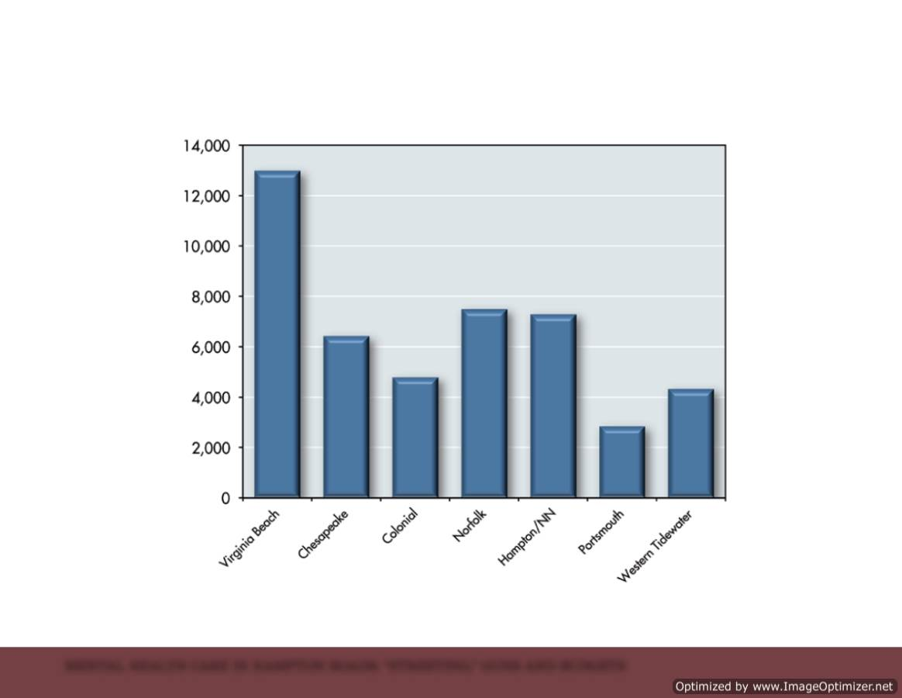
MENTAL HEALTH CARE IN HAMPTON ROADS: “STREETING,” GUNS AND BUDGETS
131
GRAPH 1
ESTIMATED PREVALENCE OF SERIOUS EMOTIONAL DISTURBANCE (SED) AMONG ADULTS
IN HEALTH PLANNING REGION 5 (HAMPTON ROADS) BY COMMUNITY SERVICES BOARD
THE STATE OF THE REGION | HAMPTON ROADS 2013
132
TABLE 2
ESTIMATED PREVALENCE OF CHILD/ADOLESCENT
SERIOUS EMOTIONAL DISTURBANCE (SED)
IN HEALTH PLANNING REGION 5 (HAMPTON ROADS)
BY COMMUNITY SERVICES BOARD
Population
Age 9 - 17
Estimated
SED Level of
Functioning
GAF Score < 50
Estimated
SED Level of
Functioning
GAF Score < 60
Lower
Upper
Lower
Upper
Chesapeake
30,188
1,509
2,113
2,717
3,321
Colonial
20,425
1,021
1,430
1,838
2,247
Hampton-
newport
news
38,370
1,919
2,686
3,453
4,221
norfolk
26,228
1,311
1,836
2,360
2,885
Portsmouth
10,630
532
744
957
1,169
Virginia
Beach
52,949
2,647
3,706
4,765
5,824
Western
Tidewater
18,205
910
1,274
1,638
2,003
Source: VDBHDS, Comprehensive State Plan, 2012-2018, December 2011. SED = Severe Emotional
Disturbance. The GAF score emanates from the Global Assessment of Functioning Scale, which varies between
0 and 100; lower scores for an individual indicate more severe mental health disturbances. GAF scores below
50 typically are associated with greater problems and levels of need. Lower and upper-bound estimates of the
number of individuals below 50 and 60 are provided.
What Happens To Those
Deemed Mentally Ill?
As a result of the tragic event at Virginia Tech on April 16, 2007, much
attention was paid in the immediate aftermath to the adequacy of mental health
services in the Commonwealth. The Code of Virginia was amended. now,
if there is evidence that a substantial likelihood exists that an individual in the
near future is a danger to self or others due to mental illness, or is substantially
unable to care for himself due to mental illness, then legal action to secure
an emergency custody order can be taken to ensure safety until a thorough
assessment of dangerousness can be completed and a temporary detention
order can be issued within six hours if warranted.
However, between April 1, 2010, and March 31, 2011,
approximately 200 people in the Commonwealth met
the criteria for a Temporary Detention Order (TDO), but
nonetheless were released from custody because no psychiatric
facility was available or willing to admit them. This means that
a physician or clinical psychologist found that each of these
individuals had a substantial risk of causing harm to himself/
herself or to others, or that he/she was unable to defend
himself/herself, but they were nonetheless put out on the
streets. The Office of the Inspector General (OIG) of the Commonwealth’s
Department of Behavioral Health and Developmental Services observed that:
“… to deny individuals an opportunity to receive the level of care deemed
clinically and legally necessary places each person at risk not only at the
time of the immediate crisis, but may create subsequent avoidable risk for the
person, their family and the community. Streeting represents a failure of the
Commonwealth’s public safety sector safety net system to serve Virginia’s most
vulnerable citizens and places these individuals, their families, and the public
at-risk” (OIG Semi-Annual Report, Oct. 1, 2010, to March 31, 2011).
MENTAL HEALTH CARE IN HAMPTON ROADS: “STREETING,” GUNS AND BUDGETS
133
The OIG findings raised such a high level of concern that a subsequent 90-day
study was conducted. In that study, the term streeting was replaced with “failed
temporary detention order.” During the study, 72 people that mental health
professionals found met the criteria for a temporary detention order nonetheless
received less intensive treatment than the hospitalization that was clinically
indicated; 273 cases resulted in the issuance of a temporary detention order
beyond a six-hour time limit. Hampton Roads led Virginia with 99 of
the 345 instances statewide of failing to comply with the letter
of the law in meeting the needs of the mentally ill (OIG Review
of Emergency Services, Report No. 206-11, Feb. 28, 2012).
The finding of failed temporary detention orders, or streeting, is not intended
to be a criticism of the professionals who work in the system. Instead, it is
a reflection on the system itself and the failure on the part of all levels of
government to fund an adequate level of facilities and services. There is every
reason to believe that those working in the system do the best they can given the
limited options, programs and services with which they have to work.
TABLE 3
SURVEY OF THE HOMELESS IN SOUTH HAMPTON ROADS:
POINT IN TIME COUNT, 2012
Category
W
estern
Tidewater
Nor
folk
Chesapeake
Por
tsmouth
V
ir
ginia
Beach
Totals
Homeless
Persons
1,424
Sheltered
30
510
27
154
349
1,070
Unsheltered
7
56
22
178
91
354
Severely
Mentally Ill
128
Sheltered
1
57
0
11
21
90
Unsheltered
0
0
0
15
23
38
THE HOMELESS AnD MEnTAL ILLnESS
Streeting is only one of several concerns about the treatment of the mentally ill in
our region. A point-in-time survey of the homeless in South Hampton Roads was
undertaken in 2012; it found significant numbers of people who were deemed
to be severely mentally ill. Of the 1,424 people interviewed as part
of the survey of the homeless (conducted by local officials as
part of a U.S. Department of Housing and Urban Development
requirement), 128, or 8.9 percent, were found to be severely
mentally ill (see Table 3). This percentage actually is below that reported
by the Substance Abuse and Mental Health Services Administration (SAMHSA),
which found that about 30 percent of people who are chronically homeless
have mental health conditions.
JAILS AnD MEnTAL ILLnESS
The Virginia Compensation Board is required by law to complete a survey of the
64 local and regional jails and jail farms in the Commonwealth to determine
the number of inmates with mental illness. In July 2012, there were 26,669
inmates in the Average Daily Population of the jails; 28 percent of them were in
Hampton Roads, and 86 percent were males.
Of these inmates, 39 percent of the females and 21 percent
of the males were reported to be mentally ill in 2012. Table 4
reports the mental illnesses of individuals in jails in Hampton Roads. note that
1,487 were judged mentally ill (20 percent of the inmate population). Table 5
provides a snapshot of 2,964 mentally ill inmates in July 2012. More than 500
of them were charged with violent crimes and more than 1,000 with felonies.
There are three major lessons to be drawn here. First, significant proportions of
those in jail are deemed mentally ill. Second, many who are imprisoned have
committed violent crimes. Third, because the definition and identification of
mental illness are not rigidly standardized, the numbers presented here should
be regarded as approximations.
nonetheless, the historic traditions of putting the mentally ill in jail and/or
charging them with crimes apparently still hold true.
THE STATE OF THE REGION | HAMPTON ROADS 2013
134
TABLE 4
MENTAL ILLNESS IN JAILS IN HAMPTON ROADS, 2012
Jail Location
Schizophrenia
or Delusional
Bipolar
or Major
Depressive
Mild
Depression
Anxiety
Disorders
PTSD
Other Mental
Illnesses
Mentally
Ill with No
Diagnosis
Total Mental
Illness
Population
Total Jail
Population
Percentage
Mentally Ill
Southampton
County
2
0
2
2
1
1
0
9
95
9.5%
Va Peninsula
8
14
0
1
1
15
2
43
400
10.8%
HR Regional
108
85
0
17
14
106
12
392
892
43.9%
Chesapeake
City
107
134
0
46
0
0
0
347
1,141
30.4%
Western
Tidewater
17
15
0
4
2
0
0
45
654
6.9%
Hampton City
8
18
0
7
1
6
0
51
414
12.3%
newport news
City
15
25
9
6
0
20
0
75
515
14.6%
norfolk City
48
30
0
2
5
66
13
164
1,419
11.6%
Portsmouth City
8
4
6
0
2
0
0
20
408
4.9%
Virginia Beach
City
94
177
0
0
12
11
0
341
1,442
23.6%
Total Hampton
Roads
415
502
17
85
38
225
27
1
7
20.1%
Statewide
1,056
1,663
697
540
324
973
545
6,322
26,669
23.7%
HR
39%
30%
2%
16%
12%
23%
5%
24%
28%
27.7
Source: Compensation Board Report: 2012 Mental Illness in Jails Report, nov. 1, 2012
MENTAL HEALTH CARE IN HAMPTON ROADS: “STREETING,” GUNS AND BUDGETS
135
What offenses did these mentally ill individuals commit, or what were they
charged with committing? Table 5 reports this.
More than 1,000 of the mentally ill people in Hampton Roads
jails are being held on felony charges; over 500 are listed as
violent. The following table indicates the offenses for which mentally ill people
were being held in Hampton Roads jails in July of last year.
TABLE 5
MOST SERIOUS OFFENSE OF INMATES WITH MENTAL ILLNESSES IN HAMPTON ROADS JAILS: JULY 2012
Jail
Felony
Misdemeanor
Drugs
Violent
Non-Violent
Southampton County
9
0
1
3
5
Va Regional
45
8
4
16
33
HR Regional
328
42
35
222
113
Chesapeake City
276
85
110
102
149
Western Tidewater
33
3
6
20
10
Hampton City
41
32
19
15
39
newport news City
47
26
14
23
36
norfolk City
112
54
16
70
80
Portsmouth City
8
12
2
5
13
Virginia Beach City
264
57
52
85
184
Total Hampton Roads
1
319
259
561
662
Statewide
4,351
1,424
1,058
1,792
2,925
HR
27%
22%
24%
31%
23%
Source: Compensation Board Report: 2012 Mental Illness in Jails Report, nov. 1, 2012
THE STATE OF THE REGION | HAMPTON ROADS 2013
136
RESIDEnTIAL LIVInG AnD THE MEnTALLY ILL
It would be a mistake, however, to conclude that most mentally ill people are
warehoused in our prisons. Table 6 discloses that 82 percent of those officially
deemed mentally ill lived in residences in 2012. Only 16 percent of those not
living in private residences were in jail or detention centers, while 9 percent
were homeless.
TABLE 6
TYPES OF RESIDENCE FOR INDIVIDUALS RECEIVING CSB
MENTAL HEALTH SERVICES IN VIRGINIA: FY 2012
Total Individuals
113,552
Private Residences
92,663
81.6%
non-private Residences
20,889
18.4%
Community Placements
10,279
49%
Jails and Prisons
2,484
12%
Juvenile Detention Centers
855
4%
Inpatient Beds and nursing
Homes
682
3%
Other Institutions
256
1%
Homeless or Homeless Shelters
1,910
9%
Unknown or not Collected
4,423
21%
note: Community placements are in boarding homes, foster homes, licensed adult living facilities or community
residential programs.
Source: Virginia Department of Behavioral Health and Developmental Services, Fiscal Year 2012 Annual
Report, Dec. 1, 2012
WAITInG FOR TREATMEnT
There can be a waiting list of services for those who have been diagnosed
with a mental illness and for whom treatment in a public facility or program
is appropriate. Table 7 provides statistics by Community Services Boards in
Hampton Roads with respect to the numbers of people they served between
January and April 2011, the number and percentage of those who suffer serious
mental illness, and the waiting lists for their services.
Table 8 provides the same information for children served by CSBs, the number
and percentage with a serious emotional disorder, and the number who were
on their waiting lists for the same time period.
TABLE 7
ADULT INDIVIDUALS WITH SERIOUS MENTAL ILLNESS SERVED
OR ON WAITING LISTS BY CSBS IN HAMPTON ROADS:
JANUARY THROUGH APRIL 2011
CSB
Adult SMI
Prevalence
Number
Served
Number
with SMI
Percent
with SMI
Waiting List
Chesapeake
6,423
1,297
555
43%
58
Colonial
4,784
1,769
678
38%
66
Hampton
9,476
5,488
2,447
45%
14
norfolk
7,495
2,633
1,781
68%
89
Portsmouth
2,842
1,303
833
64%
0
Virginia
Beach
12,977
2,226
1,563
70%
159
Western
Tidewater
4,324
874
698
80%
26
Total
Hampton
Roads
48,321
15,590
8,555
55%
412
Total Virginia
239,747
76,630
45,963
60%
4,017
note: SMI represents the number of people with serious mental illness.
Source: Department of Behavioral Health and Developmental Services
MENTAL HEALTH CARE IN HAMPTON ROADS: “STREETING,” GUNS AND BUDGETS
137
TABLE 8
CHILDREN WITH SERIOUS EMOTIONAL DISORDERS SERVED
BY CSBS ON WAITING LISTS IN HAMPTON ROADS:
JANUARY THROUGH APRIL 2011
CSB
SED Prevalence
Number
Served
Number
with SED
Percent
with SED
Waiting
List
Chesapeake
2,113
228
82
36
0
Colonial
1,430
556
266
48
3
Hampton
2,686
2,720
2,379
87
0
norfolk
1,836
460
173
38
0
Portsmouth
744
35
33
94
0
Virginia
Beach
3,706
415
252
61
22
Western
Tidewater
1,274
523
324
62
28
Total
Hampton
Roads
13,789
4,937
3,509
71
53
Total Virginia
66,094
31,262
20,251
65
1,699
Source: Department of Behavioral Health and Developmental Services
GUnS AnD THE MEnTALLY ILL
The elementary school massacre in newtown, Conn., quickly provoked
passionate national debate concerning restrictions on gun ownership and use.
Proposals immediately surfaced to reduce the sale of assault rifles, diminish
the size of magazine clips holding additional cartridges, expand background
checks, and review and perhaps overhaul mental health policies and protocols.
Ours is not to conduct analysis and discussion here of the need for gun control
legislation (many aspects of which apparently are supported by large majorities
of the American public), but rather to examine the extent to which laws and
regulations might keep guns out of the hands of those who are mentally ill.
Virtually all participants in the debate believe this would be a good thing.
Here are a few things to consider. First, relatively few mentally ill people are
overtly violent, but those that are can commit horrible crimes. Second, very few
of the individuals who have used guns or bombs to murder multiple people were
identified ahead of time either as being dangerously mentally ill, or sufficiently
worrisome pre-tragedy that they should be denied the right to purchase a gun.
Third, if one relies upon the U.S. Center for Mental Health Services definition of
serious mental illness, then we have 48,326 people with serious mental illnesses
in Hampton Roads. Because the Commonwealth no longer institutionalizes
most mentally ill people, it is almost a Sisyphean task for any combination
of responsible authorities to monitor successfully the behavior of 48,326
individuals. Fourth, a very high proportion of murders are committed by people
using a hand gun, such as a 9 mm semi-automatic. These weapons now are
rather easily acquired in states such as Virginia because of our relatively lax
gun laws. It matters not whether one is mentally ill. Guns, it seems, are readily
available in Virginia – too readily available, many would say.
All things considered, given current laws and conditions,
it is difficult to keep guns out of the hands of dangerously
mentally ill individuals. True, a national system of identity checks could
prevent the direct sale of a gun to a dangerously mentally ill person, but the
Commonwealth’s lax gun laws mean that he or she often has the ability to
acquire desired guns by other means. More potentially dangerous mentally ill
people could be institutionalized, in which case their behavior would be more
easily tracked, but the Commonwealth has steadily moved away from this model
to the community-based treatment of the mentally ill. More people could be
identified as dangerously mentally ill by appropriately qualified professionals in
many different venues (work, schools, police, social welfare agencies, churches,
etc.), but then how would they be treated and monitored, and who would pay
for this?
Our analysis is a bit discouraging. If we are to keep guns out
of the hands of dangerously mentally ill people, then we need
national gun control legislation that at a minimum includes a
national system of identity checks. We also need to narrow
the differences between the laws of the various states, for
example, Virginia versus Maryland. Further, we must change
how we treat the mentally ill. Streeting, for example, must

THE STATE OF THE REGION | HAMPTON ROADS 2013
138
come to an end, but this will not occur unless we are willing to
fund mental health treatment more generously.
Nothing is forever; our circumstances can and do change.
Currently, however, a degree of pessimism is merited with
respect to our ability to keep guns out of the hands of the
mentally ill in the Commonwealth of Virginia.
Mental Health Services
Delivery In Virginia
Although mental illness is generally recognized today as a sickness from
which one can suffer, its treatment usually follows a different path than is true
for physical illnesses. When an individual gets physically sick, he or she visits
a private physician and then might be referred to an outpatient provider or
hospital for treatment. Some who are mentally ill follow such a route. The
majority, however, are treated by a public provider of services.
Community Services Boards are the keystones of the public
provision of mental health services in Virginia. There are 39
CSBs and one closely related behavioral health authority that
provide mental health services directly to Virginians, or do so
via contracts with private providers. Seven CSBs (see Table 9)
exist in Hampton Roads, which is almost co-terminus with the
Commonwealth’s State Health Planning Region 5.
In addition to listing the jurisdictions covered by the CSBs, Table 9 indicates
the classification of the CSB in terms of its legal relationship with its local
government. While CSBs are agents of the local governments that established
them, most CSBs are not city or county government departments. The
classifications as defined in the Code of Virginia are:
• Operating community services board: They directly provide mental
health, developmental and substance abuse services. These boards employ
their own staff, but are not city or county government departments.
• Administrative policy community services board: Services
are provided through local government staff or through contracts with other
organizations and providers.
• Policy-advisory community services board: Portsmouth has the only
such CSB in Virginia. This board provides advice to the city of Portsmouth, but
does not have operational powers or duties. The city provides its own services
through its own employees.
Community Services Boards are operational partners with the Virginia
Department of Behavioral Health and Developmental Services and the statewide
system of services established under the department. The department operates
eight state hospitals that provide treatment for mental illnesses. Eastern State
Hospital in Williamsburg is the nearest facility providing care in Hampton
Roads.
While CSBs are the principal providers of publicly funded mental health
services, there are many private providers that deliver their services for private
payment or reimbursement from a public source. The Department of Behavioral
Health and Developmental Services has granted licenses to more than 750
providers that deliver more than 1,800 services at 6,000-plus locations in the
Commonwealth.
In FY 2012, 222,823 people received services in the publicly operated
behavioral health and developmental services system. Of that number, 113,552
(50.9 percent) received CSB mental health services, but only 4,742 (2.1
percent) received treatment in state hospitals. Progressively, Virginia has backed
away from the notion of maintaining state facilities for the mentally ill.
MENTAL HEALTH CARE IN HAMPTON ROADS: “STREETING,” GUNS AND BUDGETS
139
TABLE 9
COMMUNITY SERVICES BOARDS IN HAMPTON ROADS
Community Services Board
Type
Population
Area
Density
Communities
Served
Chesapeake CSB
Administrative
Policy
225,898
340.7
663
Chesapeake
Colonial Behavioral
Operating
161,343
272.6
592
James City, York,
Poquoson and
Williamsburg
Hampton-newport news CSB
Operating
318,399
120.1
2,651
Hampton and
newport news
norfolk CSB
Administrative
Policy
243,985
53.8
4,535
norfolk
Portsmouth Department of Behavioral
Healthcare Services
Policy-Advisory
96,368
33.1
2,911
Portsmouth
Virginia Beach CSB
Administrative
Policy
441,246
248.3
1,777
Virginia Beach
Western Tidewater CSB
Operating
148,543
1,324.00
112
Isle of Wight,
Southampton and Franklin
Total HR
1,635,782
2392.6
683.7
Statewide
8,096,613
39,598.40
204
note: Health Planning Region 5 also includes the Eastern Shore CSB and the Middle Peninsula-northern neck CSB.
THE STATE OF THE REGION | HAMPTON ROADS 2013
140
Funding Mental Health
Services
Mental health programs are funded by an interesting and highly variable
combination of federal, state and local revenues, as well as from fees paid by
individuals or insurance programs. Funding sources vary considerably among
programs, primarily because of differing contributions of local governmental
units. Table 10 examines the funding of CSBs in Hampton Roads. The
percentage contribution by local governments varies from a high of 27.4
percent in Virginia Beach to a low of 2.7 percent in Western Tidewater (see
Graph 2). The Hampton-newport news CSB, though it handles a smaller
population than the comparable CSB in Virginia Beach, nonetheless spends
more on mental health activities than Virginia Beach.
Across the state, the comparable percentages vary from a high of 69.6 percent
in Fairfax County to a low of 1.1 percent in Cumberland. The statewide
average for local government funding is 23.2 percent.
A national Alliance on Mental Illness report, “State Mental Health Cuts: The
Continuing Crisis” (november 2011), summarized Virginia’s support of mental
health programs as follows:
• In FY 2009, Virginia spent $93.81 per capita compared to
the national average of $122.90.
• Virginia’s budget for mental health declined from $424.3
million in FY 2009 to $386.6 million in FY 2012 – a reduction
of $37.7 million, or 8.9 percent. This was the 11th-largest
percentage reduction among the states.
• It is fair to say that the funding of mental health programs
has not been one of the highest priorities either of the
General Assembly or local governmental units.
TABLE 10
COMMUNITY SERVICES BOARD BUDGETS IN
HAMPTON ROADS, FY 2012
CSB
Jurisdiction
CSB T
otal
Revenue
Local
Contribution
Percent Local
Funding
Statewide
Rank
Virginia Beach
$47,195,182
$12,951,660
27.4
9
Chesapeake
$14,224,926
$2,310,655
16.2
10
Colonial
$12,893,797
$1,849,431
14.3
11
norfolk
$22,315,243
$2,851,000
12.8
12
Hampton
$60,003,891
$3,214,183
5.4
16
Portsmouth
$9,827,419
$365,988
3.7
21
Western
Tidewater
$19,908,447
$545,599
2.7
27
All 40 CSBs
$1,011,690,630 $234,286,454
23.2
notes: Total CSB revenue is for all programs including mental health, substance abuse and developmental
delay. Local revenue represents the contribution by local government.
Ranks represent the percentage contributed by local governments compared to all other Virginia CSB
jurisdictions.
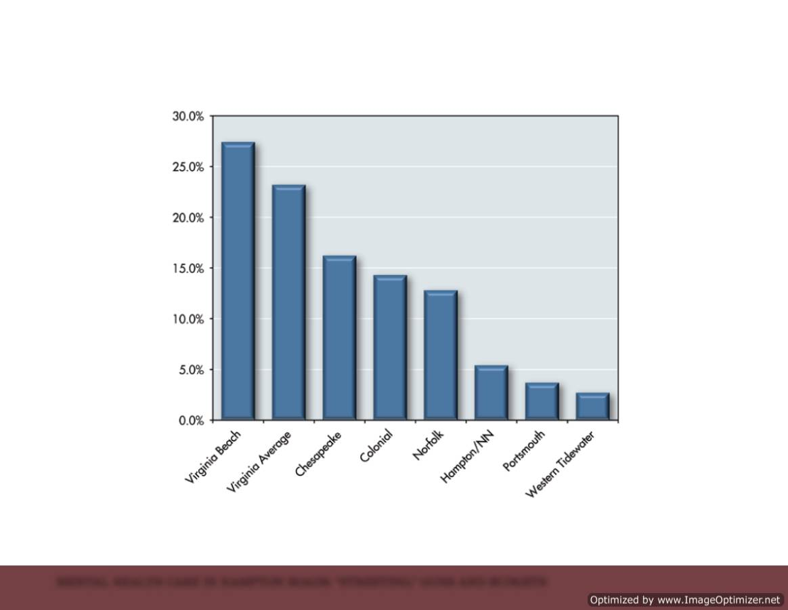
MENTAL HEALTH CARE IN HAMPTON ROADS: “STREETING,” GUNS AND BUDGETS
141
GRAPH 2
PERCENTAGE OF COMMUNITY SERVICES BOARD REVENUE SUPPLIED BY LOCAL GOVERNMENTS, FY 2012

THE STATE OF THE REGION | HAMPTON ROADS 2013
142
Quality Considerations
Mental health problems, behavior, treatments and outcomes
all are complex in nature. Thus, it is not easy to pin down
outcome-oriented measures of Community Services Board
activities. In other people-oriented government programs,
outcome measures such as a participant’s successful exit from
a program, skills or degrees acquired, employment gained,
income earned, taxes paid, criminal records, etc., often are
used to imply success or failure. For the most part, those
measures are not available or appropriate where CSBs are
concerned.
The Commonwealth’s Department of Behavioral Health and Developmental
Services has established a vision statement that can be used as a benchmark
against which its work can be evaluated. The board’s Policy 1036 asserts:
“Our vision is of a system of services and supports driven by individuals
receiving services that promotes self-determination, empowerment, recovery,
resilience, health, and the highest possible level of participation by individuals
receiving services in all aspects of community life, including work, school,
family and other meaningful relationships. This vision shall include the
principles of inclusion, participation, and partnership.”
Accordingly, the department has developed a set of measures around which the
provision of mental health services quality should be measured. However, these
indicators reflect primarily whether or not the CSBs actually provided services
to individuals deemed mentally ill and the amount and intensity of the treatment
they received. The measures really do not constitute conventional outcome-
oriented indicators of mental health treatment that many might associate with
success. This is not to say that the CSBs aren’t successful. Instead, this suggests
that it is very difficult to define realistic CSB outcomes that both are measurable
and comparable to other state agencies.
One cannot know the counterfactual circumstances connected
to mental health treatment – what would have happened had
not the Community Services Boards provided their services.
Intuitively, one feels the CSBs are doing vital work that is
essential to the operation of a civil, humane society. Even so,
it is difficult to develop numbers that demonstrate this is so
and, as we have seen, impossible to assert that our systems
will effectively keep weapons out of the hands of mentally ill
people.
MENTAL HEALTH CARE IN HAMPTON ROADS: “STREETING,” GUNS AND BUDGETS
143
OK, Now What
Should We Do?

THE STATE OF THE REGION | HAMPTON ROADS 2013
146
oK, noW WHat sHould We do? Is It rICHard FlorIda’s
“CreatIve Classes” or Instead “BaCK to BasICs” tHat
sHould GuIde our reGIonal eConoMIC GroWtH?
A
pproximately 45 percent of the economic activity in Hampton Roads is dependent on defense spending. Beginning with the first State of the Region report
in 2001, we have pointed out that our region is exceptionally vulnerable to any reductions in defense spending, or changes in the mix of that spending.
Among our defense spending vulnerabilities during this decade are:
• the loss of one or more carrier battle groups now homeported here;
• reduced ship construction and repair activity in Newport News, Norfolk and
Portsmouth;
• the loss of air wing squadrons now sited at Oceana Naval Air Station; and
• a continued decline in the number of active-duty military personnel posted in
Hampton Roads.
Any one of these developments would constitute bad news; the fear that
one or more might transpire has infused new energy into regional economic
development discussions. These discussions usually devolve to a simple question:
How can we stimulate our regional economy so that it grows faster and creates
more jobs?
This is an important question and often references other regions. Why have the
economies of metropolitan areas such as Austin, Texas, and Raleigh-Durham,
n.C., grown so much more rapidly than regions such as Rockford, Ill., and Flint,
Mich.? The traditional answer to this question has been straightforward. Austin
and Raleigh-Durham have grown more rapidly than Rockford and Flint because
they have superior “human capital” (in education attainment and skills training),
more abundant technology, enhanced infrastructures, more productive labor
relations and more intelligent tax and regulatory policies.
It is easy to understand this view of economic development – regions that attract
and retain more smart and talented people, foster technological change, invest
in supportive infrastructure such as transportation, avoid excessive increases in
labor costs and pursue intelligent tax and regulatory policies grow faster than
those that don’t.
The major problem with this traditional view of economic development is that
it does not promise regions a quick fix. Decades of conscientious investments
in education, technology and infrastructure are required to move a region to
the economic forefront. It takes many years to improve an urban school system,
increase the flow of patentable innovations, plan and build new bridges and
tunnels, cultivate productive labor relations and optimize the nature of taxes
and regulations. The economic dynamism of Austin and Raleigh-Durham did not
appear overnight, and Rockford and Flint did not fall into their economic holes
in a single year, or even a single decade.
There are, however, other views on how regions can spur their economic
development; none has received more attention than the collection of ideas
propagated by Richard Florida, who may be the uncrowned king of regional
economic development gurus. Based on the huge number of books Florida has
sold and his sought-after status as a speaker, he has had more influence on
OK, NOW WHAT SHOULD WE DO?
147
regional economic development strategies than anyone else since the turn of the
century.
Over the past 15 years, Florida, who now is based at the University of Toronto
and also is a senior editor at The Atlantic magazine, has put forward a set
of highly seductive and provocative hypotheses about the sources of regional
economic growth. The core of his ideas is set forth in “The Rise of the Creative
Class” (2002), “Cities and the Creative Class” (2005), “The Flight of the
Creative Class” (2005) and “Who’s Your City?” (2008).
Florida argues that economic growth today is powered by
human creativity. Hence, metropolitan areas that prosper are
those able to attract and retain the highest proportions of the
members of the “creative class” – scientists and engineers,
to be sure, but also architects, artists, musicians, actors and
perhaps even a few economists. What is the common thread among
these people? They are knowledge workers who share a common spirit
embodying individuality, merit, diversity, openness, tolerance and, of course,
creativity.
Florida contends that:
• The creative class is moving away from traditional corporate communities to
what he terms “Creative Class Centers.”
• Creative Class Centers not only have high concentrations of creative people,
but because of them, also host many innovative, technologically advanced
industries that exhibit high rates of growth.
• Creative Class Centers prosper more because of the creative people who
want to live there and less because of economic development incentives
offered by cities, regions and states.
• Members of the creative class favor communities with abundant high-quality
amenities and experiences, those that value diversity and those that allow
creative class members to pursue their own individual identities. The major
magnet for the members of the creative class, then, is not this week’s listing of
job vacancies, but instead environments that are eclectic and diverse, visibly
tolerant and open to new ideas.
Florida puts it this way:
“Regional economic growth is powered by creative people,
who prefer places that are diverse, tolerant and open to new
ideas. Diversity increases the odds that a place will attract
different types of creative people with different skill sets
and ideas. Places with diverse mixes of creative people are
more likely to generate new combinations. Furthermore,
diversity and concentrations work together to speed the flow
of knowledge. Greater and more diverse concentrations of
creative capital [in turn] lead to higher rates of innovation,
high-technology business formation, job generation and
economic growth.” (“The Rise of the Creative Class,” p. 249)
These hypotheses are easily understood and without question have proven
to be magnetic. Anyone who attends the meetings of regional leadership
organizations in Hampton Roads has heard individuals advocate some or all of
Richard Florida’s ideas. Independent of the empirical validity of his hypotheses,
it appears that many of those who lead organizations, select stories, write
editorials, teach classes, give sermons and steer public opinion genuinely would
like those hypotheses to be true. Florida’s recipe for economic development
represents the way many would prefer the world to operate. A little less Adam
Smith and a little more Richard Florida.
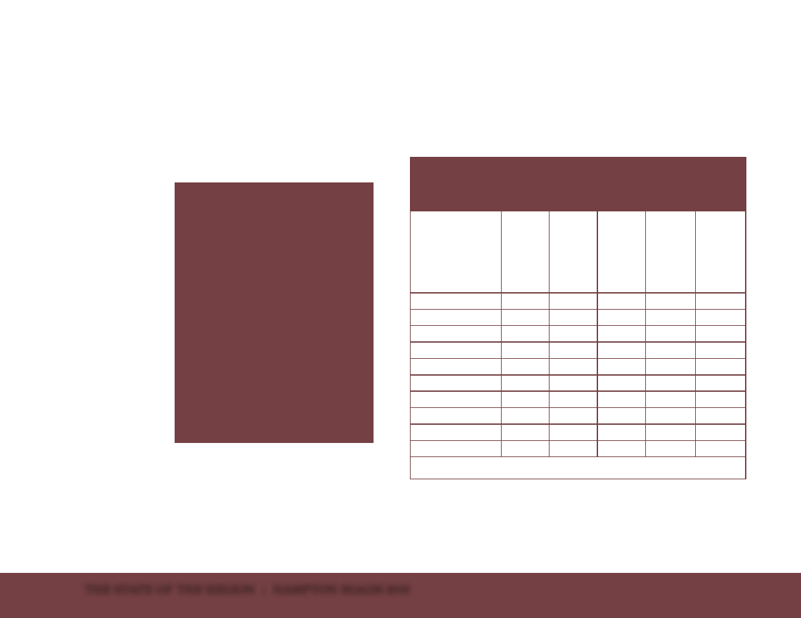
THE STATE OF THE REGION | HAMPTON ROADS 2013
148
A Bit More Detail About
Richard Florida’s Ideas
Florida and the traditional economic development proponents agree on several
points. Both believe that human capital in the form of accumulated workforce
education and training is important. Florida, however, innovates by subdividing
human capital into three categories he asserts are especially critical for
economic development: “Bohemians,” gays, and immigrants/foreign born.
Florida’s Bohemians are writers,
designers, musicians, actors,
directors, painters, sculptors,
photographers and dancers.
His “gay” designation includes
lesbians, gays, bisexuals
and transgender individuals.
Immigrants/foreign born are
those classified as such by the
U.S. Census.
According to Florida, the
higher the percentages
of Bohemians, gays, and
immigrants/foreign born
individuals in a region’s
population, the more
conducive that region’s
climate is to generating
economic growth. He
argues that environments that are open, tolerant, diverse, eclectic and distinctive
are hothouses for economic growth; his classifications of human capital provide
indexes to represent those characteristics.
Because the Census did not have a Bohemians classification nor did it record
individuals’ sexual orientation in either 2000 or 2010, Florida created his own
indexes for these variables. Table 1 reports the indexes that Florida developed
for Hampton Roads and several other metropolitan regions for 2010. For
example, among 361 metropolitan regions, Florida ranked Hampton Roads
100th in terms of its proportion of creative class employment, 107th in terms
of its technology, 100th in terms of its talent, but only a dismal 244th in terms
of tolerance. The tolerance ranking presumably reflects the percentages of
Bohemians, gays and immigrants/foreign born in the population of Hampton
Roads, although Florida does not disclose precisely how the index was
constructed.
TABLE 1
RICHARD FLORIDA’S CREATIVE CLASS INDExES: COMPARING
HAMPTON ROADS TO OTHER METROPOLITAN REGIONS
Metro Area
Rank Among
361 Metr
o
Areas
Percent
Creative Class
Employees
Creativity
Index
Technology
Index Rank
Tolerance
Index
Rank
Durham
1
48.4%
.953
8
45
Washington, D.C.
3
46.8%
.947
27
30
Charlottesville
13
39.7%
.826
58
19
Baltimore
21
37.7%
.837
55
103
Raleigh/Cary
24
37.6%
.887
6
95
Richmond
47
34.9%
.692
99
191
Charlotte
70
30.6%
.736
88
130
Hampton Roads
100
31.9%
.586
107
244
Charleston
137
30.4%
.533
194
178
Jacksonville
139
30.4%
.645
134
115
Source: Richard Florida, “The Rise of the Creative Class Revisited” (new York: Basic Books, 2011), Tables A.1
and A.2
The notion of a “Bohemian” has
a long history, but was revivified
and refined by New York Times
columnist David Brooks in his
book “Bobos in Paradise” (2000).
Brooks introduced the idea
of “Bourgeois Bohemians,” or
“Bobos.” These are well-educated
people, middle and upper class,
who dabble in art, theater,
politics, food and living styles
often associated with Bohemians.
Even so, these individuals are
unlikely to be mistaken for Jack
Kerouac. They may, however, have
supplied some of the inspiration
for Florida’s “creative classes.”

OK, NOW WHAT SHOULD WE DO?
149
How Well Do Florida’s
Hypotheses Explain And
Predict Regional Economic
Development Differentials?
Prima facie, Florida’s hypotheses are a bit suspect from the outset because
quite a few discordant counterexamples exist. Consider new Orleans, whose
economic development deficiencies were exposed for all to see by Hurricane
Katrina in 2005. By Florida’s standards, new Orleans should have been a
wellspring for economic development, as it is famously tolerant of a variety of
living styles, is highly diverse and sports numerous eclectic artistic and musical
venues. Unfortunately, other factors are more important and, in the case of
new Orleans, among the most important of these are its citizens’ educational
attainment and labor force participation. In 2000 (prior to Katrina), only 74.7
percent of the residents of new Orleans had completed high school, compared
to 80.4 percent nationally. The labor force participation rate for those ages 16
or older in new Orleans was only 57.8 percent, compared to 63.9 percent
nationally. not surprisingly, this combination was influential in producing a 2000
median household income in new Orleans of $27,133 – only 64.6 percent
of the national average of $41,994 (all data from the 2000 U.S. Census). The
bottom line is that new Orleans’ diversity, tolerance and eclectic surroundings
did not come close to overcoming the burdens imposed by its shortcomings in
traditional economic areas. new Orleans may have “Power of Place,” as Florida
puts it, but that is overwhelmed by traditional economic verities.
Contrast new Orleans to Salt Lake City, whose majority Mormon population
has long advocated and legislated strong views on acceptable social behavior.
Further, Salt Lake City is not as demographically diverse as new Orleans.
nevertheless, according to the U.S. Census Bureau’s America FactFinder, 83.4
percent of the citizens in Salt Lake City have completed high school, 68.4
percent of those 16 or older are in the labor force and median household
income was $36,944 in 2000 (all data from the 2000 U.S. Census). Salt Lake
City exhibits comparatively little of what Florida emphasizes, but its economy
nonetheless has performed much better than new Orleans.
nevertheless, Florida’s ideas are de rigueur among many elected officials and
economic development professionals. The entire state of Michigan, for example,
proclaimed that it is going to become “cool” by following Florida’s ideas.
Given the amount of attention Florida’s hypotheses have received and their
apparent popularity among opinion leaders, it is surprising that rigorous
statistical tests of those hypotheses are few in number. Perhaps the most
frequently cited is Harvard economist Edward Glaeser’s review of “The Rise of
the Creative Class”; one can find this review in Regional Science and Urban
Economics (35[5], 2005). Glaeser examined 242 metropolitan statistical
areas and found strikingly little statistical connection between several of Florida’s
human capital diversity variables and population growth between 1990 and
2000. Curious economists at Old Dominion University, anxious to put a finger
on the real sources of regional economic growth, have replicated Glaeser’s
study, looking at per capita income and jobs.
Even though rigorous empirical evidence in favor of Florida’s hypotheses is
lacking, there’s no disagreement that simple correlations exist between his
three distinctive measures of human capital and measures of economic welfare
such as growth rates in population, median household income and per capita
income. Bohemianism and per capita income, for example, track each other in
most metropolitan economies.
Alas, correlation does not imply causation. The critical question, therefore,
is whether there is a causal relationship between Florida’s three distinctive
measures of human capital and indexes of economic development. Researchers
such as Glaeser have demonstrated that the correlations decline dramatically
or disappear when conventional measures of human capital, such as
educational attainment, are also taken into account. That is, it is factors such as
educational attainment that are most important to economic development, not
Bohemianism as such. To the extent that Bohemians are better educated than
the average person, measures of Bohemianism will be positively correlated
with measures such as population and income growth. But, it is not the living
styles of Bohemians that are critical to economic growth; it is their educational
attainment.
THE STATE OF THE REGION | HAMPTON ROADS 2013
150
Florida’s ideas also have been attacked from a different angle. In his “The Flight
of the Creative Class” (2005), Florida downplayed the economic challenges
of countries such as India and China because the percentage of creative class
citizens in these countries continues to be relatively small. However, it is obvious
that these countries have dynamic, rapidly growing economies – for reasons
other than those trumpeted by Florida. Thus, the world is more complicated than
it is portrayed in Florida’s fertile thinking, which is based primarily on bivariate
correlations between variables.
Once one has controlled for factors such as educational
attainment, there isn’t any reliable, rigorous empirical
evidence that increasing the proportion of Bohemians, gays
or immigrants in a region’s population will attract more
people, generate more jobs or result in higher incomes. Thus,
if all of Hampton Roads were to mirror norfolk’s slightly Bohemian Ghent
district, then this by itself would not produce more jobs and higher incomes
unless the “Ghentization of Hampton Roads” also were accompanied by the
other traditional essentials of economic development – attracting and retaining
more smart and talented people, fostering technological change, investing
in supportive infrastructure such as transportation, and pursuing intelligent
labor, tax and regulatory policies. In other words, well-educated,
innovative Bohemians are valuable in the context of economic
development; lowly educated Bohemians without technological
savvy are not.
If Not Richard Florida,
Then What?
If Richard Florida’s interesting hypotheses don’t hold much empirical water,
then how can Hampton Roads position itself better to stimulate its economic
growth rate? The answers are straightforward, though perhaps disappointingly
conventional to some.
InVEST In K-12 EDUCATIOn
Mediocre, low-performing schools with high dropout rates are a recipe for
economic stagnancy. As Table 2 reveals, Hampton Roads merits only a mixed
grade in this regard. Only three of 13 regional public school districts reported
four-year, on-time graduation rates that exceeded the Commonwealth average of
88 percent in 2012. Further, only five of our 13 public school districts boasted
high school dropout rates below Virginia’s average of 6.5 percent in 2012.
At the other end of the spectrum, when The Washington Post recently constructed
a list of the 500 “most challenging” public high schools in the country, 34 of the
schools on the list could be found in Virginia. However, 32 of the select 34 are
located in northern Virginia. Only Princess Anne High School in Virginia Beach
(248th) and Bruton High School in Williamsburg (498th) made the list from
Hampton Roads. (See http://www.washingtonpost.com/local/education/
abcs-of-americas-most-challenging-high-schools/2013/04/11/ca4f27aa-a2fb-
11e2-82bc-511538ae90a4_story.html.)
Add to this picture the indifferent overall performance by the region’s students on
objective examinations such as the Scholastic Aptitude Test and the presence of
several schools in the region that the Commonwealth has designated as “failing.”
It will suffice to observe that viewed collectively, the region’s public K-12 schools
are not the economic development spark plugs that they usually are in rapidly
growing areas of the country. We enjoy genuine pockets of K-12 excellence,
yet at the same time are hampered by many underperforming districts and
schools. Improving our overall K-12 performance must be one of our highest
regional economic development priorities. This will not be easy to accomplish
OK, NOW WHAT SHOULD WE DO?
151
and will require: (1) more generous funding; (2) increasing the proportion
of educational budgets devoted to instruction rather than administration; (3)
a willingness to reallocate educational resources when necessary, including
closing under-enrolled schools; and (4) providing visible incentives to school
districts, teachers and administrators to do things differently and improve their
students’ performances. We will touch on several aspects of these challenges
below.
Hampton Roads typically has not performed as well as many other comparable
metropolitan regions in terms of new companies started per capita, patents
received and innovations commercialized. The Milken Institute and the Kauffman
Foundation both publish indexes that reveal that our region lags in terms of new
business formation and entrepreneurial activity. The Commonwealth of Virginia
usually fares well in such comparisons, but this reflects activity in northern
Virginia, not Hampton Roads.
TABLE 2
ON-TIME PUBLIC HIGH SCHOOL COMPLETION AND DROPOUT
RATES FOR VIRGINIA AND HAMPTON ROADS, 2012
On-time Public High School Completion Rates
Dropout Rates
Virginia
88.6%
6.5%
Male
85.5%
7.8%
Female
90.6%
5.1%
White
90.8%
4.4%
Black
82.7%
9.3%
Asian
94.8%
2.8%
Hispanic
80.9%
13.6%
Chesapeake
91.2%
4.4%
Franklin
78.8%
15.9%
Hampton
84.4%
5.2%
Isle of Wight
87.0%
6.6%
newport news
82.8%
6.3%
norfolk
77.0%
10.7%
Poquoson
94.1%
1.0%
Portsmouth
80.8%
11.7%
Suffolk
84.1%
9.9%
Surry
83.8%
10.3%
Virginia Beach
86.8%
5.9%
Williamsburg/James City
88.7%
4.9%
York
94.2%
3.2%
Source: State-Level and District-Level Reports, Four-Year Completion and Dropout Rates, 2012,
www.doe.virginia.gov
Our lagging business startup and patent performance are functions of: (1) a
long-term lack of funding for engineering, science and medical research; (2)
our inability to commercialize research and development being generated
at the region’s federal laboratories; and (3) the relatively low proportions of
high school and college graduates we generate regionally in STEM (science,
technology, engineering and mathematics) disciplines.
THE STATE OF THE REGION | HAMPTON ROADS 2013
152
The proposed regional Governor’s School for Innovation and Entrepreneurship
represents a way to begin to reverse the entrepreneurial aspects of this problem,
though we must recognize it represents a long-term solution. College-level
entrepreneurial instruction and support also offer some promise; however, it is
difficult to teach someone to become an entrepreneur. We probably would
obtain superior results from making it easier for those who are naturally inclined
to become entrepreneurs to do so.
Some contend that our region’s
relatively modest performance in
terms of objective measures of K-12
educational performance is the result
of inadequate funding. However,
the region’s financial support of
K-12 education actually increased
significantly between 2001 and
2011. On a per pupil basis,
public school K-12 funding
in Hampton Roads increased
about 60 percent during this
time period – and was still
about 40 percent higher after
taking price inflation into
account. If a funding problem exists
in our region, then it primarily relates
to capital expenditures. Virtually every
city within the region continues to
utilize school buildings and facilities that either urgently need refurbishing, or
should be torn down and replaced with new construction.
In an earlier chapter (“Where Our Cities and Counties Spend
Their Money”), we report data showing that the typical school
district in Hampton Roads reduced the proportion of its budget
devoted to instruction by 2.15 percent over the past decade. In
some cities (Hampton and Virginia Beach), the decreases were much larger than
this. While it is true that effective administration and administrators are essential
to educational performance, it’s also true that more generous funding of K-12
public education may have a reduced impact on student performance if the
increased expenditures are devoted to administration rather than instruction.
Further, lurking in the background of funding and resource allocation discussions
of K-12 public education in Hampton Roads is the phenomenon of declining
school enrollments. Over the past decade, five of the region’s seven
largest cities experienced declining enrollments, according
to the Commonwealth (see Table 3), and total enrollment in
the seven cities declined 3.5 percent even while enrollment
statewide was increasing 9.19 percent.
In theory, declining enrollment should free up resources for reallocation, but this
is not easy to do because many K-12 public education costs are fixed in the
short run due to teacher tenure obligations and legal constraints. Thus, it does
not follow that if enrollment at an elementary school declines by 5 percent, one
can diminish expenses at that school by the same percentage. For example, it’s
virtually impossible to reduce the appointment of a required school counselor by
5 percent. Similarly, one either offers a German course, or one does not. It’s not
possible to offer only three-quarters of a German course because enrollment has
fallen 25 percent.
Significant enrollment-related cost savings usually accrue when entire schools
are closed or specialized curricula are abandoned. School closings are political
dynamite, however (as Mayor Rahm Emanuel has found in Chicago), and
superintendents shy away from confronting unhappy parents strongly opposed
to the closure of their neighborhood school. Empirical evidence and logic often
account for little in such situations.
Even so, intelligent use of scarce resources demands that our
school districts reverse the regional trend toward increased
expenditures on administration rather than instruction; this
means that we must shutter some neighborhood schools. Easier
said than done, of course. But we must support school officials when their
closure decisions are evidence-based and transparent. School boards and city
councils must be willing to take the heat that surely will follow.
The increased funding for
K-12 education in Hampton
Roads is commendable;
however, Virginia has
begun to shift more K-12
costs to localities. For
example, this year the state
appropriated funds for
salary increases for K-12
teachers, but only if those
funds were matched by
localities – an impossibility
for many districts, given
existing commitments.
OK, NOW WHAT SHOULD WE DO?
153
Citizens of goodwill in our region must keep their eyes on the long-term prize
– better-educated K-12 students, more vigorous economic development and a
higher quality of life. It is not a path for the timid.
Hence, not only do we need to continue to provide increased funding for K-12
education in Hampton Roads, we also must be smarter in the use of those funds.
One of our regional education goals ought to be to increase the proportion
of funding spent on instruction and research and to diminish the proportion of
funding spent on general and administrative support. Over the years, public
school districts in Hampton Roads have tended to spend increasing proportions
of their budgets on what in a business context is called A&O – administrative
and overhead expenses. The same dollar cannot be spent two places, and so
this has diminished the proportion of their budgets devoted to instruction. There
are some legitimate reasons for climbing A&O expenditures, such as new and
increased state and federal regulatory and legal requirements. nevertheless, our
school districts need to progress in this arena and to reward administrators who
are able to retard the growth of A&O expenses. The road to K-12 educational
heaven is not paved with administrative slots.
TABLE 3
APM ENROLLMENTS IN THE SEVEN LARGEST PUBLIC SCHOOL
DISTRICTS IN HAMPTON ROADS, 2001-2002 AND 2011-2012
Commonwealth Average Pupil Maintenance (APM)
State/City
2001-2002
2011-2012
Percent Change
Virginia
1,147,239
1,252,039
9.19%
Chesapeake
38,271
39,525
3.28%
Hampton
22,396
21,406
-4.42%
newport news
31,592
29,664
-6.10%
norfolk
34,792
33,000
-4.96%
Portsmouth
17,036
15,192
-10.82%
Suffolk
12,031
14,397
19.67%
Virginia Beach
75,090
69,856
-6.97%
note: Average Pupil Maintenance is the Commonwealth’s equivalent of size of a school district in terms of
students in attendance.
Source: Superintendent’s Annual Reports for 2001-02 and 2011-12, http://www.doe.virginia.gov/statistics_
reports/supts_annual_report/2011_12/index.shtml
InCREASE BOTH PUBLIC AnD PRIVATE SUPPORT FOR THE REGIOn’S
THREE COMMUnITY COLLEGES
High-quality occupational and technical training programs are among the
golden building blocks of economic development. Tidewater Community
College, Thomas nelson Community College and Paul D. Camp Community
College provide the most important means for us to achieve the goal of
increased economic development, and the tuition cost per credit hour at these
institutions is about one-third of the comparable cost to a student of a credit hour
at a four-year public university. An important regional economic development
objective ought to be to support short-course, certificate and associate degree
programs that are closely attuned to job markets, as well as apprenticeships and
internships that are jointly sponsored and funded by public and private sources.
By the middle of this decade, it should no longer be true that we hear employers
lament that they are unable to hire the nurses, welders, die makers, computer-
assisted manufacturing specialists, occupational therapists, and database
and cloud administrators that they say they need, but cannot find. Our three
community colleges possess the immediate ability to address labor market
shortages, upgrade the talents of existing workers and provide many students
with a superbly cost-effective way to begin their collegiate careers. We should
develop and use them in much the same fashion that Germany utilizes its
Fachhochschulen – technical colleges and institutes that are tightly connected to
job markets and practical applications of science and technology.
The private sector must be a vital part of this refocusing of our efforts. In Europe,
private-sector apprenticeships, often partially supported by government and often
including post-high school-level academic training, produce a continuing stream
of skilled workers who, after two to four years of on-the-job training at firms such
as Mercedes-Benz, move into permanent, attractive jobs there. Once again,
Germany provides an interesting model. There, about two-thirds of students
who complete their formal high school-level academic training undertake an
apprenticeship; Mercedes-Benz alone sponsors 2,000 apprentices a year.
Unfortunately, apprenticeships in the United States are tinged with bad memories
of indentured servitude, even though modern European apprenticeships are in
no way connected to that notion. Apprenticeships may not be flashy, but they
work.
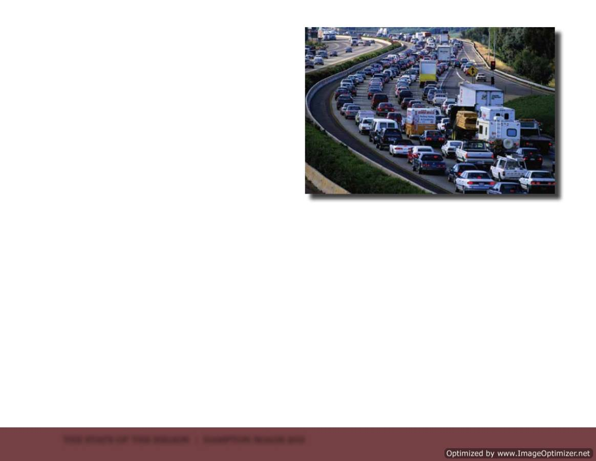
THE STATE OF THE REGION | HAMPTON ROADS 2013
154
Here’s where the rubber meets the road – choices must be
made. In the view of most outsiders, it would be far more
productive for Hampton Roads cities and counties collectively
to provide tax incentives for firms to support apprenticeships
than for the cities and counties to invest tens of millions of
dollars in arenas, convention centers and performance venues
whose net economic impact not only is highly questionable, but
also probably self-canceling when multiple cities do the same
thing.
IMPROVE AnD RATIOnALIZE THE REGIOn’S
TRAnSPORTATIOn InFRASTRUCTURE
We are, some say, located at the end of the longest cul de sac in the United
States. This adage confers a certain distinction upon Hampton Roads, but not
one that is advantageous. Yes, the new transportation funding program adopted
jointly in spring 2013 by the Commonwealth and the region averted looming
disaster, yet did not come close to accomplishing what is necessary to spur
regional economic development because the benefits are accompanied by
substantial costs.
The three most important legs underpinning our regional
economic stool are defense spending, the port and tourism. The
viability of each depends upon the existence of a high-quality,
well-designed transportation system that is capable of moving
both people and products efficiently and, in case of emergency,
moving hundreds of thousands of citizens out of the region to
safety.
The soon-to-be-implemented toll system (which The Virginian-Pilot once dubbed
“a ring of fire”) virtually encourages regional firms to relocate outside the ring
of tolls – that is, closer to Richmond or points south. After all, why should one
locate a business in, say, Hampton or Virginia Beach, if moving product from
those cities not only will be handicapped by congestion, but also will require the
paying of tolls for the privilege of facing that congestion?
Simply put, we haven’t made sufficient progress in addressing our regional
transportation needs. As a consequence, each of our economic “big three” will
not contribute as much as they could to our future economic success; this also
means that major “where to locate” decisions (including very important ones
made by the Department of Defense) are less likely to be resolved in our favor
in the future. We court disaster if we do not pay attention to the signals we are
receiving from our major employers concerning our transportation system.
An intelligent approach to the regional transportation
challenges facing us must include: (1) the use of technology to
guide traffic and avoid congestion; (2) increased use of mass
transportation; (3) a third crossing; (4) moderate tolls; and (5)
a larger, dedicated, non-toll revenue stream to support these
developments. “Mass transportation” here especially includes increased
reliance on buses, which, despite popular notions to the contrary, ordinarily are
more cost-effective than light rail and frequently just as environmentally kind per
passenger mile.

OK, NOW WHAT SHOULD WE DO?
155
The optimal solution also includes expansion of The Tide if
(and this is an absolutely critical if) The Tide were to connect
major traffic generators in the region, including Naval Base
Norfolk, Old Dominion University and perhaps Norfolk
International Airport. Let’s be candid, however. Even if these first two
high-traffic nodes were connected, this version of The Tide still would require
massive subsidies per passenger, perhaps approaching 80 percent of operating
costs. nevertheless, this could be a reasonable undertaking in light of the large
subsidies now provided by governments at all levels in support of automobile
transportation. Reputable economists have computed that the price of gasoline
would have to rise to $12 per gallon in order to reflect all of the costs imposed
upon individuals, businesses and governments by automobiles.
What about expansion of The Tide into Virginia Beach? Extension of
The Tide to the Virginia Beach Town Center, one of the city’s
strategic growth areas, is potentially plausible because it could
generate the population density – in the form of residential
and business development along that path and especially at
Town Center – that would make that extension financially
reasonable in the long run. We must recognize, however,
that we are talking about 2030, not 2015. Further, we must
recognize that while all citizens would pay for the extension,
the benefits would accrue predominantly to property owners
and businesses situated along the light rail corridor. It’s not
clear that the same rationale supports any other extensions
of the Tide inside the city of Virginia Beach beyond Rosemont
Road.
What dedicated revenue stream should we seek to support our transportation
needs? The future of revenue collection relating to automobiles should be
connected to taxes based on actual miles driven rather than gallons of gasoline
consumed. As our automobiles have become more fuel efficient, we use fewer
gallons of gasoline even though those vehicles tear up our roads just as much.
We need a mechanism to assess taxes based on miles driven. The technology
exists now that would enable us to do so, but we are going to have to
overcome our aversion to “being tracked” in order to move ahead. For better or
worse, most of us already are being tracked now when we use the telephone
and Internet, by cameras when we are in public places, by toll passes when
we drive and perhaps even by drones. An annual mileage computation for tax
purposes would be much less intrusive and would accurately impose the costs of
driving where they properly reside – on drivers.
All citizens – drivers or not, young or old, employed or not – have a stake in
a quality ground transportation system because all of us depend upon that
system to deliver the necessities of life and to enable us to reach movie theaters,
barber shops, churches, schools, etc. Hence, a significant state general fund
contribution from income and sales taxes to transportation is merited, along with
regional governmental tax support.
BE WARY OF FRITTERInG AWAY PUBLIC FUnDS On PROJECTS
THAT SUBSIDIZE PRIVATE BUSInESSES, EVEn WHEn IT IS APPAREnT
THAT THE SAME BUSInESSES HAVE CALCULATED CAREFULLY
THAT IT WOULD BE UnPROFITABLE FOR THEM TO MAKE SUCH
InVESTMEnTS On THEIR OWn
All of the major cities in our region have invested significant public funds
in capital projects that were much ballyhooed when they opened, but now
contribute only marginally to the region’s long-term economic growth. norfolk’s
March 2013 decision to make a very large investment in a hotel/conference
center in that city’s downtown provides the most recent example.
Unfortunately, it is not clear that such projects represent the highest and best use
of public funds. Here are some things to consider:
• Don’t ignore the signals private investors provide us, free of charge. While
private developers and investors are not omniscient, their assessments provide
us with signals we should not ignore. When private investors decline to
put their own money into a restaurant, sports complex, entertainment venue
or hotel complex unless they are subsidized, it should give pause to any
government that believes that the addition of public money somehow will
make those projects compute financially.
THE STATE OF THE REGION | HAMPTON ROADS 2013
156
• Pay close attention to relevant local market conditions. Consider once again
norfolk’s decision to provide huge financial support for a hotel/conference
center project in that city’s downtown. Is this likely to be a productive
investment of public funds? The hotel/motel revenue data reported in Table
4 are discouraging in this regard. Over the past five years, REVPAR
(revenue per available room, the coin of the realm in hotel
economics) declined in every area of the region except
Virginia Beach, and trailed both Virginia and the United
States. Norfolk/Portsmouth experienced a 10.79 percent
decline in REVPAR between 2007 and 2012.
•
The city of norfolk believes that the new hotel/conference center will reverse
this negative REVPAR trend and reports encouraging recent increases in
hotel occupancy and REVPAR in norfolk. The city concludes that this project
will prosper because it will not involve typical convention space; rather, the
new project will focus on upscale conferences designed to attract a more
technology-savvy, luxury-oriented clientele and also will include additional
downtown parking. While all of us wish norfolk success, achieving profitability
could be elusive if the new hotel sells rooms at $40 more per night than those
already available at nearby hotels such as the Marriott and Sheraton.
TABLE 4
REVPAR IN HAMPTON ROADS CITIES, 2007-2012
Area
REVPAR,
2007
REVPAR,
2012
Percent
Change
United States
$65.56
$65.17
-0.60%
Virginia
$61.96
$57.12
-7.80%
Hampton Roads
$52.90
$47.63
-9.86%
Chesapeake/Suffolk
$52.90
$42.96
-18.79%
newport news/Hampton
$41.49
$35.85
-13.59%
norfolk/Portsmouth
$54.05
$48.12
-10.79%
Virginia Beach
$64.73
$66.10
+2.12%
Williamsburg
$47.48
$36.95
-22.18%
Sources: Old Dominion University Economic Forecasting Project and Smith Travel Research
• What can the experience of other cities and regions tell us? We need not
attempt to reinvent the wheel. The experience of other cities and regions
should discipline our thinking. For example, The Wall Street Journal reported
(Oct. 13, 2012) that between 2000 and 2011, convention and exhibit-hall
space in the United States increased 35.4 percent, while attendance at those
meeting places fell 1.7 percent. Clearly, it will be important to differentiate
the norfolk development from the usual convention space that has proliferated
along the East Coast.
• Beware the fallacy of composition. “Fallacy of composition” is the false
assumption that something that is true for one individual or business is true for
the economy as a whole. Local governments typically count upon their new
developments to attract substantial new business to their areas. However,
taking the hotel, convention and conference market as an example, all
cities cannot increase their hotel, convention and conference business
simultaneously at a time when the overall size of that business travel pie is
constant or declining nationwide and stagnant in the Commonwealth of
Virginia. The available evidence indicates that most cities and regions end
up disappointed when they predict they will attract substantial new business.
OK, NOW WHAT SHOULD WE DO?
157
The solution to that disappointment is not to construct differentiated versions of
visions that have failed.
• Don’t ignore the displacement effect. Cities and regions that subsidize
highly visible developments typically predict, and then
later announce, increased sales and tax revenues from
these projects. Initially, of course, this sounds very good.
Unfortunately, such developments often do no more than
rearrange existing expenditures and tax collections within
that city or region. People end up spending their dollars at one restaurant
rather than another, or patronize one hotel rather than another. When this
occurs, the projects do not actually result in net new economic development,
even though they inevitably report sales, taxes collected, etc. This is economic
displacement in action – new developments literally take sales and taxes out
of one pocket and deposit them into another.
Virtually every major city in the region has invested substantial funds in
subsidized hotels, convention centers, performance venues and athletic facilities.
Yes, there have been some large public-sector investment successes, but it’s
also true that a healthy majority have not been financially successful (at least
based on the financial standards of the private sector), despite representing
embellishments that comport with elected officials’ ideas of what vital, successful
cities should include.
Weighed against the long-term economic development that would be
generated by a successful K-12 public education system, or measured side
to side against the benefits that additional university/medical community
research and development expenditures would produce, most of these highly
visible investments simply do not cut the financial mustard. Once again, we
should pay attention when private investors tell us that they
will not undertake an investment unless they receive tens of
millions of dollars in subsidies. They are providing us with free
consulting advice that we ignore at our peril.
BE MODEST WHEn IMPOSInG TRAVEL TAXES (TOLLS) On THE
REGIOn’S BRIDGES AnD TUnnELS
Avoid any toll structure that in effect would sever the Peninsula from the
Southside (remember that 17.4 percent of those working in newport news
cross the James River estuary every workday) and Eastern Hampton Roads
from Western Hampton Roads (24.2 percent of the jobs in Portsmouth and an
additional 12 percent of the jobs in Suffolk are filled by people who commute
across the Elizabeth River from norfolk and Virginia Beach). Another 8.2
percent of jobs in Suffolk are held by people who cross the James River. Table 5
provides those data, which should sober those who argue that tolls won’t make
a difference in our economic behavior.
Note well that it is appropriate to insist upon tolls designed
to ensure that those who derive the most benefit from these
bridges and tunnels also pay most of the cost. However, the
tolls in question risk partitioning our region and increasing the
costs to workers, consumers and business owners. Remember that
the benefits of a quality transportation system are widely diffused among the
region’s citizens, whether or not they ever drive across a bridge or through a
tunnel. Hence, all citizens, not only drivers, should help pay for these projects.
TABLE 5
SELECTED HAMPTON ROADS WORKERS WHO COMMUTE
ACROSS THE ELIzABETH RIVER OR THE JAMES RIVER, 2010
City in Which
the Job Is
Located
Percentage of Job Holders in That City Who
Commute from These Cities by Crossing the
Elizabeth River or Driving Through a Tunnel
Norfolk
Virginia
Beach
Other
Southside
Peninsula
Hampton
5.0%
6.5%
11.6%
nA
newport news
2.9%
4.5%
12.5%
nA
Portsmouth
10.6%
13.8%
nA
7.3%
Suffolk
4.3%
7.7%
nA
8.2%
THE STATE OF THE REGION | HAMPTON ROADS 2013
158
PROVIDE GEnEROUS SUPPORT FOR RESEARCH AnD DEVELOPMEnT
ACTIVITIES AT THE REGIOn’S RESEARCH UnIVERSITIES AnD AT
EASTERn VIRGInIA MEDICAL SCHOOL BECAUSE SUCH FUnDS
GEnERATE A WIDE RAnGE OF JOBS THAT TYPICALLY PAY MORE
THAn THE REGIOnAL AVERAGE AnD SPAWn nEW BUSInESS
DEVELOPMEnT
Old Dominion University is the region’s largest academic/medical research and
development participant. A year ago, the federal government reported $95
million in funded research and development (R&D) activity for ODU. However,
by comparison, Johns Hopkins University recorded approximately $1.4 billion
and is readily acknowledged to be Baltimore’s most powerful economic engine.
When one adds all of the other institutions in the region to Old Dominion, the
R&D total rises just above $200 million annually.
Our region simply has not developed the highly productive “ed-med” complex
one observes in metropolitan areas such as Richmond and Baltimore. Why does
this matter so much? R&D funds nearly always come from “the outside” and thus
represent real injections of economic stimulus into the region rather than simply
redirecting existing expenditures. (They are not “displaced” expenditures.) This is
real economic development involving clean, well-paying jobs, not redistribution
of existing economic activity.
What would constitute the outlines of a good action plan in the “ed-med”
arena?
• Press our legislators to provide generous funding for R&D
at the region’s doctoral research institutions (Old Dominion
University, the College of William & Mary and Eastern
Virginia Medical School). Repeated empirical studies reveal that the
long-term payoff to public investments in science and engineering R&D exceed
10 percent; very few competing public investments offer the same promise.
Unfortunately, the Commonwealth of Virginia has been falling short in terms of
funding higher education and medical education. Table 6 reveals that ODU
in particular has received the short end of the Commonwealth funding stick,
though in truth, state general fund support for all of higher education has fallen
significantly in recent years.
• Find ways to support Hampton University’s Proton Therapy
Institute, a state-of-the-art cancer treatment and research
facility. In the most recent session, the General Assembly shied away from
providing funding for this private-sector initiative; we must find innovative
ways for the Commonwealth to provide financial support because the institute
already has proven to be a job generator.
• While not everyone has the same vision for the future of EVMS, a merger
between it and William & Mary no doubt would confer prestige on the
medical school. Yet, because of the relatively small size of
W&M, the absence of engineering there and its distance
from EVMS, such a merger would do little to spur the long-
term development of the university/medical/health research
dynamo that we have been missing. This will occur only
when EVMS and ODU merge or affiliate. Our region ought
to be thinking about where it wishes to be in 2030, when
Old Dominion likely will enroll 40,000 students and be
generating $400 million annually in externally funded
research. At that point, a decision to meld together EVMS and
ODU will appear to have been obvious.
OK, NOW WHAT SHOULD WE DO?
159
TABLE 6
COMMONWEALTH GENERAL FUND SUPPORT FOR SELECTED
VIRGINIA UNIVERSITIES, FY 2009 AND FY 2013
Institution
FY 2009
Tax Support
Per Student
FY 2013
Tax Support
Per Student
Percent
Change
Doctoral Institutions in Virginia
William & Mary
$9,024
$8,057
-10.7%
George Mason University
$7,079
$5,291
-25.3%
Old Dominion University
$7,100
$5,393
-24.0%
University of Virginia
$10,555
$8,334
-21.0%
Virginia Commonwealth
University
$8,855
$6,272
-29.25%
Virginia Tech
$8,727
$6,289
-27.9%
Comprehensive Institutions in Hampton Roads
Christopher newport
University
$6,108
$5,135
-15.9%
norfolk State University
$11,068
$7,384
-33.3%
CAPITALIZE On OUR EXISTInG DISTInCTIVE STREnGTHS – nASA
LAnGLEY, THE JEFFERSOn LAB, THE PORT, TOURISM AnD CERTAIn
SPECIALTIES AT OUR RESEARCH UnIVERSITIES
nASA Langley Research Center, the Thomas Jefferson national Accelerator
Facility and the most superb deep-draft port on the East Coast are located in
Hampton Roads, not in Baltimore, Raleigh-Durham or Jacksonville. We still
have achieved only limited success in commercializing the research generated
by nASA Langley and the Jefferson Lab. nor have we yet taken the steps
necessary to capitalize on the water that flows through so much of our region.
Hampton Roads ought to be the nation’s leader in rising sea level research
and applications. Further, since even the most modest projections suggest that
container traffic at our port can grow twice as fast as the United States’ gross
domestic product, we are negligent if we don’t do the things necessary to
enable us to achieve this goal and then sprint well beyond it.
It would be wonderful if Google or some other technology giant were to
establish a huge presence in Hampton Roads, but we shouldn’t count on such
occurrences. Instead, let’s capitalize on the impressive physical and intellectual
assets already located here. A May 31, 2013, Washington Post article
(“What Sequester?” by Elizabeth Williamson) provided data revealing that
since 2000, federal spending in the Washington, D.C., metropolitan region
has held relatively constant; however, the regional economy there has grown
approximately 50 percent because the area’s economic base has diversified.
As Steve Fuller, a George Mason University economist, noted, “The stuff we
learned how to do for the federal government can be sold to other people.” This
is advice we should take to heart.
MAInTAIn A BUSInESS-FRIEnDLY CLIMATE THAT ESCHEWS TAX
RATES AnD REGULATORY POLICIES THAT WOULD POSITIOn OUR
REGIOn AS An EXPEnSIVE OUTLIER
Lest anyone misunderstand: taxes and regulations are necessary to operate a
civil, productive, growing society. nevertheless, we would be wise to recognize
that individual citizens, businesses and capital in general are mobile. We must
avoid tax and regulatory policies that position us badly with respect to our
peers; and, we should focus our large public investments on things that ultimately
will improve both the business and the social climates of our region.
Each of our regional cities claims to be business friendly and, indeed,
some national surveys suggest Hampton Roads is amenable to economic
development. Even though Entrepreneur magazine recently recognized norfolk
as a great site for entrepreneurs, our regional rate of new business formation is
not very impressive and we suffer from a net out-migration of adults. (This may
be the most critical economic thermometer of them all.) These facts speak louder
than our words. Hence, whether via city governments, universities or businesses
and regional organizations (or any combination thereof), we would do well
to re-examine our thinking about what we can do to stimulate new business
formation and support those businesses already here.
THE STATE OF THE REGION | HAMPTON ROADS 2013
160

OK, NOW WHAT SHOULD WE DO?
161
EnGAGE In “ECOnOMIC GARDEnInG” DESIGnED
TO GROW EXISTInG FIRMS
Our best prospects for stimulating economic growth often may arise via the
process of “gardening” the businesses already operating in our region. The
essence of gardening is to find out what existing firms need in order to expand
and prosper. Emphasis should be upon making connections and smoothing
the way for expansion rather than providing large financial injections to the
firms involved. Our gardening focus should be upon firms that already have
invested their own risk capital and have demonstrated they have what it takes to
succeed.
For example, if a promising firm is small and needs additional capital, then we
should connect it with possible funding sources. If it requires the assistance of
engineers or operations research experts to improve its production processes,
or could benefit from guidance on how to obtain an export permit, then we
should put the firm in touch with individuals with the appropriate expertise. If it
needs better transportation access to expand, or additional attention from law
enforcement officials, then government should do its best to see if it can help.
We must find out what would be necessary to convince a large firm such as
Siemens in newport news or a smaller firm such as O’Connor Brewing in
norfolk to expand their operations. Can we eliminate impediments and help
such firms do the things that would allow them to expand, hire more people and
prosper – here in Hampton Roads?
In the gardening model, economic development personnel spend more time
focusing on the needs of existing firms than they do attempting to attract new
firms. Ideally, gardening emphasizes finding ways to make life easier for existing
firms so they will increase the size of their regional economic imprint rather than
viewing them as tax cows ready to be milked. Should financial assistance to
existing firms be considered? Yes, on limited occasions, but not if that assistance
would directly advantage one existing regional competitor over another, or if the
private sector already has signaled that it considers the activity in question to be
a dubious investment. Gardening is not about subsidizing losers.
Final Observations
Absent the discovery of oil (north Dakota), a propitious location (the
Washington, D.C., metropolitan area) or historically significant inventions
and innovations (Silicon Valley and Seattle), the road to regional economic
development usually is a long, hard slog. However, there are predictable,
profitable payoffs to steady, long-term regional investments in education,
infrastructure, technology, research and development, and intelligently crafted
public policies. This approach, however, requires patience (a virtue that
unfortunately has been in short supply) and an unwavering focus on the distant
horizon. We must change our short-sighted approach to economic development
if we hope to prosper during this century.

THE STATE OF THE REGION | HAMPTON ROADS 2013
162
Cover:
Estimated Sequester Exposure map: “Federal spending by state,” by Bill Testa and Jacob Berman, from Seventh Federal Reserve District Update, Aug. 9, 2013,
http://midwest.chicagofedblogs.org/archives/2013/08/federal_spendin.html
USS George H.W. Bush: navy.mil
Inside Front Cover:
Sara Kidd, Hampton Roads Planning District Commission
Page 1:
Steve Daniel
Page 35:
Steve Daniel
Page 57:
norfolk Southern Corp.
Pages 102 and 103:
David Hollingsworth (ODU’s Taste of India Festival, 2013)